| 努力しすぎた世界最強の武闘家は、魔法世界を余裕で生き抜く。 | |
| わんこそば | |
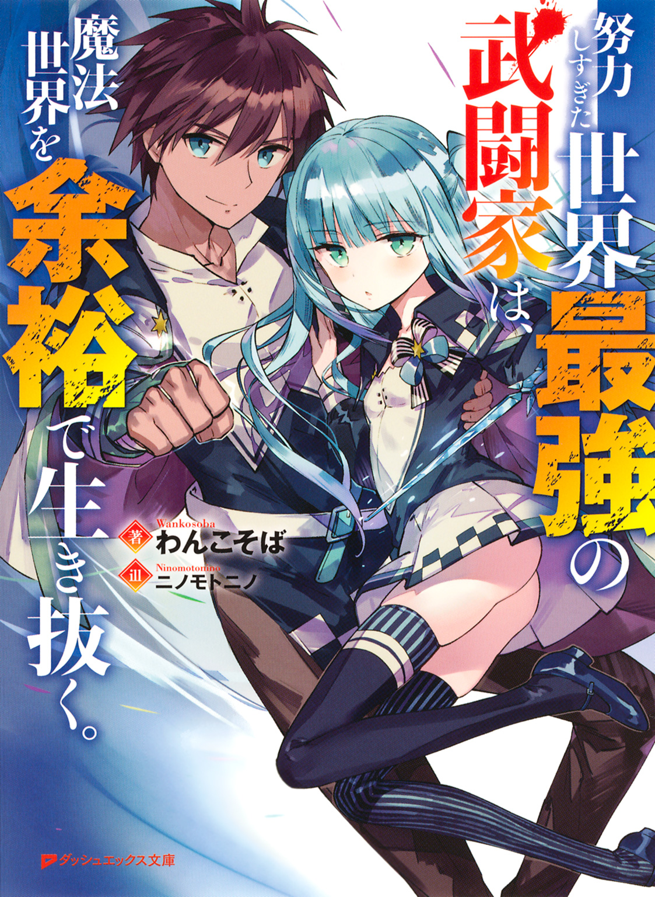
この本は縦書きでレイアウトされています。
また、ご覧になる機種により、表示の差が認められることがあります。
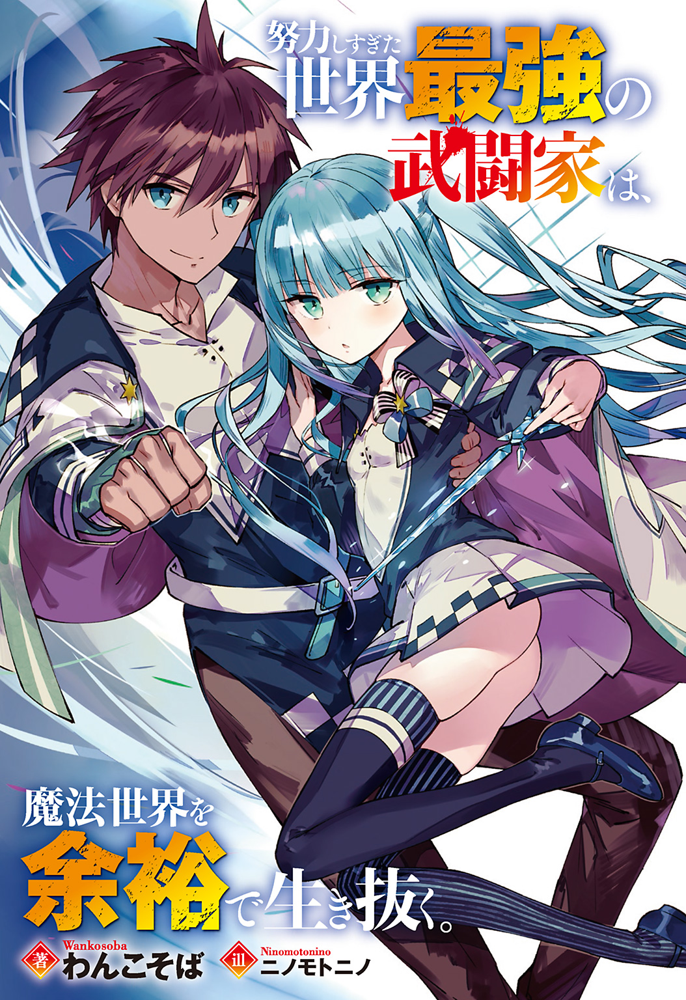
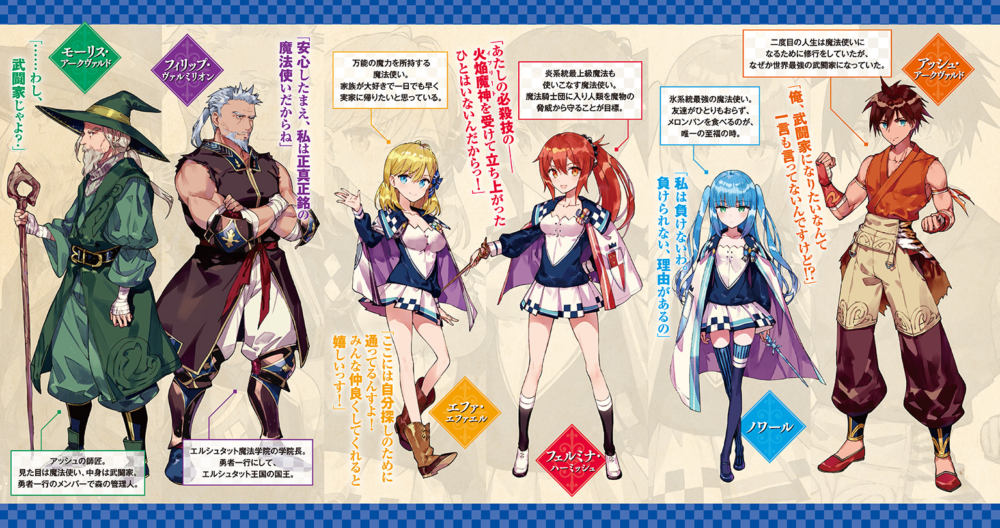
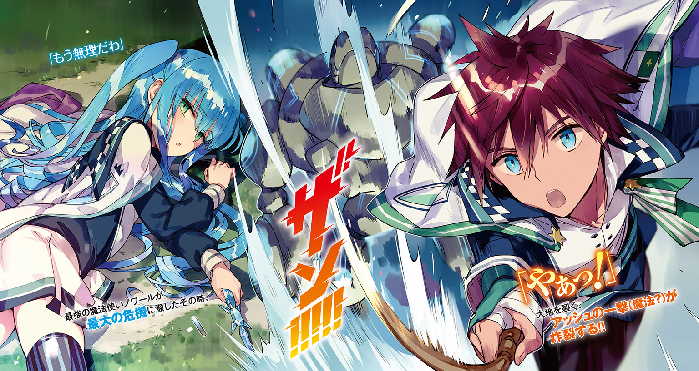
 ダッシュエックス文庫DIGITAL
ダッシュエックス文庫DIGITAL
努力しすぎた世界最強の武闘家は、魔法世界を余裕で生き抜く。
わんこそば
序 幕 異世界で魔法使いを目指します
どこだ、ここ？
目が覚めたとき、俺は知らない場所にいた。
どうやら眠っていたらしい。
ぼんやりとした頭を働かせ、寝る前の記憶を思い起こしてみる。
んっと、たしか鍛錬のあとに門下生たちと組手して、それから飯を食って、風呂に入って、アニメ観て、そして......
あれ？ アニメ観たあとなにしたっけ？
てか、アニメ最後まで観たっけ？
主人公の魔法少女がライバルにど派手な魔法をぶっ放したところまでは記憶にあるけど......その先が思い出せない。
つまり最後まで観てないってことだ。
けど、最終回の、しかも一番盛り上がってたシーンで寝落ちするとは思えないし......まさかあまりにも興奮しすぎてぶっ倒れちまったのか？
......ありえるな。めちゃくちゃ面白かったし、きっと興奮で頭に血が上って倒れちまったんだろう。
もしくは鍛錬中に頭を強打したのが後々になって効いてきたのかもしれないけど、とにかく倒れたことに変わりはない。
てことは、ここは病院か。
きっと俺が部屋で気絶してることに気づいた親父とお袋が病院に連れてってくれたんだろう。心配してるだろうし、早く無事を知らせないとな！
入院するのははじめてだけど、こういうときはナースコールを押せばいいんだよな。えっと、呼び出しボタンはどこに......
あれ？ 身体が思うように動かないぞ。なんていうか、自分の身体じゃないみたいだ。......まあでも、考えてみればついさっき目覚めたばかりだしな。それで力が入らないんだろう。
とにかくナースコールできないんじゃしょうがない。
同室の患者さんには迷惑だろうけど、大声で看護師さんを呼ぶしかないな！
「おぎゃあ！ おぎゃあぁっ！」
......えぇ。
俺の声ってこんな感じだっけ？ もっと低かった気がするけど......。
ま、まあこの際声色に関してはどうでもいい！ 上手くしゃべれなかったことも、どうでもいい！ 気絶の後遺症だと考えればまだ納得がいくしな！
けど、こいつだけは――全力で殴れば鉄板に拳のあとを残せるほどだった俺の手が赤ん坊の手になっていることだけは『気絶の後遺症だよね』で済ますことはできない！
「......」
俺はじっくり手を観察し、動かしてみる。動きは鈍いが、俺の思い通りに動く。てことは、こいつは俺の手ってわけだ。
手だけが赤ちゃんサイズになってるとは思えないし、全身余すところなく赤ちゃんサイズになっている可能性が極めて高い。そしてただの気絶では赤ちゃんにはならない。
つまり俺は死んだのだ！
赤ちゃんに転生したのだ！
新しい人生の幕開けなのだ！
......なんて無理やりテンションを上げてみたけど、盛り上がるわけがない。
なにせ俺は死んだのだから。
ひとり息子の俺が死に、親父もお袋も悲しんでいるはずだ。
稽古中は鬼のように厳しかった親父だけど、俺は自分に厳しく他人にも厳しい親父のことを心から尊敬していた。
お袋のことだって同じくらい好きだ。もうお袋の手料理を食えないんだと思うと......すげえ悲しくなってくる。
うちの道場に通う門下生との別れも寂しい。一人っ子の俺にとって、みんなは兄弟みたいなものだったからな。
大事なひとたちを悲しませてしまったんだと思うと、申し訳ない気持ちでいっぱいになってくる。
......だけど、落ちこんでいてもしょうがない。
死んでしまったのは不運だが、転生したのは幸運だ。こういうのを不幸中の幸いっていうんだろうな。
とにかく、せっかくの転生だ。
志半ばで死なないように――悔いのないように二度目の人生を楽しんでやろうじゃないか！
生まれたばかりなのに、わりと握力があるらしい。小さな拳をぎゅっと握りしめ、俺は人生謳歌を心に誓うのだった。
◆
転生して二年が過ぎた。
自力で歩けるようになった俺は、何度も屋外に出る機会に恵まれた。まあ親同伴だけどね。
精神年齢的にはひとりで出かけられるけど、実年齢は二歳だしな。親同伴でも不満はない。両親に愛されてる証拠だしな。
とにかく、だ。
外の世界を見ることができるようになり、俺は衝撃の事実に気づいてしまった。
まず、俺の交友範囲（つっても〇歳～一、二歳の狭い世界なのだが）にいる連中に『お前さ、前世の記憶持ってる？』ってな質問をしてみたところ、決まって『アッシュくん（これは俺の名前だ）、頭打った？』って心配された。
要するに、転生をしたことがあるのは俺だけってわけだ。
あと、俺は前世で身につけた武闘家としての技を完璧に記憶していた。筋肉が足りないため鉄板に拳のあとを残すことはできないけど、友達との喧嘩に負けたことは一度もない。
つっても子どもに喧嘩で勝ったところで虚しいだけだし、なるべく穏便に済ませてるけどさ。オモチャを譲ったりとかさ。
とにかく俺はむやみやたらに拳を振るうつもりはないのだ。だからってわけじゃないけど、俺は二度目の人生を武術に費やすつもりはない。
なにせここは地球ではないのだから。
そう。俺は異世界に転生を果たしたのだ！
しかも、この世界には魔法が存在している。
そのうえ魔法は特別なものではないらしい。
この世界では、魔法は日常的に使われているのだ。
すなわち、全人類が魔法使いなのである！
道場に生まれ、物心つく前から武術の稽古ばかりしてきた俺にとって、アニメは唯一の娯楽だった。
いろいろなジャンルを愛してきたけど、なかでもはまったのはファンタジー系のアニメだ。ど派手な魔法を使うキャラを見て、俺はいつしか魔法使いに強い憧れを持つようになった。
ガキの頃は親父に隠れて魔法の練習をしたものだ。
もちろん魔法が発動することは一度もなかったし――小学校高学年になる頃には魔法使いは架空の存在だって理解したけどさ。
しかし、しかしだ。
そんな魔法を、この世界では誰でも使うことができるのだ！
いまはまだ使い方がわからないけど、五歳児くらいの男の子が魔法を使って丸太を薪にしている光景を見たことがある。
年齢的に学校で学んだってわけじゃなさそうだし、そのくらいの年齢になれば、自然と身につくものなのだろう。
つまり、あと三年の辛抱ってわけだ。
三年待てば、憧れの魔法使いになれるのだ！
「アッシュー、ご飯よー」
「はーい！」
「ご飯を食べたら歯を磨いて寝なさいねー」
「はーい！」
絶対に魔法使いになってやるぜ！
俺は五歳の誕生日が訪れるのを待ち遠しく思いつつ、今日も食って寝るだけの生活を送るのだった。
◆
異世界に転生して五年が過ぎた。
俺は椅子に腰かけ、夕日に染まる窓の向こうを眺めていた。
そこでは、近所の子どもが魔法を使って水遊びをしていた。
「あいつ、俺よりひとつ年下なのにもう魔法を......！」
俺は嫉妬心に燃え上がる。
けど、べつにあの子が特別優秀ってわけではないのだ。だって、ほかの子たちも同じように魔法で遊んでるからな。
五歳にもなって魔法が使えないのは、この村で俺だけだ。
つっても、俺に魔法の才能がないってわけじゃない......はずだ。
学校に通ってないので魔法の仕組みはわからないけど、魔法を使うには魔法杖が必要だってことは知っている。
理論上は魔法杖がなくても魔法を使えるらしいけど、実践できた魔法使いは歴史上ひとりもいないらしい。
ましてや五歳児が手ぶらで魔法を使えるわけがない。
つまり魔法杖さえあれば俺にも魔法が使えるってわけだ。
俺は精神年齢的に成人している。なので両親に『あれ買って！』『これ買って！』と甘えたことはない。
だけど今日は例外だ。
なにせ今日は俺の五歳の誕生日だからな。
そんなわけで俺は生まれてはじめて親におねだりすることにした。
「あのさ......俺、魔法杖がほしいんだけど......買ってくれない？」
できる限り可愛くおねだりしたつもりである。
するとどういうわけか、父さんと母さんは気まずそうな顔をした。
どうしたんだろ？ 俺のおねだり、そんなに変だったかな？ 一応、鏡を見て練習したんだけど......。
それともお金がないのかな？ だったら無理にとは言わないけど......。
どきどきしつつ、ふたりの返事を待っていると、
「......明日買いに行くから、今日はもう寝なさい」
父さんが俺の頭を撫でながら言った。
えっ、マジで!? ほんとに買ってくれるの!?
やったあああああああああああああああああああああああああああ！
ついに！ ついに魔法杖が我が手に！
前世では武術を極めたが、今世では魔法を極めてやる！
大魔法使いに、俺はなるのだ！
俺はうきうきしながらベッドに潜りこむ。
どんな魔法杖を買ってもらおうかな。
予算はどれくらいかな。
買いに行く前に、友達におすすめの魔法杖を訊いたほうがいいかな。
いや、こういうのは自分で決めたほうがいいよな！
興奮しすぎてなかなか寝つけずにいると、父さんと母さんが寝室に来た。
寝てないのがばれると早く寝なさいって叱られて、魔法杖を買ってもらえなくなるかもしれないな。
そうして寝たふりをしていると――まるで魔法をかけられたみたいに突然眠気が押し寄せてきた。
意識が夢の世界へと引きずりこまれていく。
「けっきょく、アッシュには××が浮かばなかったな......」
「やっぱり、××しかないの？」
「しょうがないだろ。××が使えない子どもは、一生苦労することになるんだ。そんな人生を歩ませるくらいなら、いっそいまのうちに××したほうがアッシュのためだ」
「まさか、うちにそんな子どもが生まれるなんて......。私の魔力が少ないせいだわ。だって、あなたは優秀な魔法使いじゃない......」
「お前のせいじゃない。これはしかたのないことなんだ。運命だと思って、諦めよう」
「ひどい親でごめんなさいね......」
母さんの泣き声が聞こえた気がしたけど、夢か現実かわからなかった。
◆
目覚めたとき、俺は浮いていた。
風に流され、ふわふわと森のなかを漂っている。
......なにこれ？ どういう状況？ 前世含めこれまでの人生で起きたとき地上二メートルの高さに浮いていた経験などないため、現状がまったく理解できない。
とにかく俺は浮いている。
それは理解できたし、受け入れることができた。
わからないのは、どうして浮いているか――つまり、これが誰のしわざかだ。
一番怪しいのは父さんと母さんだけど......どうしてこんなことをするんだろ。今日は誕生日だし、サプライズのつもりなのかな？
だとすると転生したときと同じくらいびっくりしたし、充分成功と言っていいだろう。
「父さん、母さん！ いるの？ もう驚いたから出てきてよ！ 魔法杖を買いに行こうよ！」
とりあえず叫んでみる。
しかし、ふたりの返事はなかった。
森は静まりかえったままだ。
「ていうか、いつまで浮いたまま――」
どすん！
身をよじった瞬間、俺は地面に落下した。
魔法の効果が切れたみたいだ。
幸いにも受け身の心得はあったため無傷で済んだが、いまだに父さんと母さんからの返事はない。
心配して駆け寄ってこないってことは近くにいないってことだ。となるとこれはサプライズじゃないってことか。
「なにがどうなってるんだ？」
謎は深まるばかりだ。
俺に魔法をかけたのが父さんと母さんだとすると、俺を森に追いやったのもふたりのしわざということになる。
どうしてふたりはそんなことをしたんだ？ サプライズじゃないとすると......まさか、俺を森に捨てたんじゃないよな？
「い、いやいやいや、そんなまさか......」
ふたりが俺を捨てるわけがない。
いままで大事に育てられてきたし、俺はわがままを言ったことがないからな。
反抗期は前世の時点で終えてるし、俺を育てるのは楽だったはずだ。実際、母さんが近所のおばちゃんに『アッシュちゃんは良い子ね』とか『おとなしくて羨ましいわ』って言われてるのを聞いたことがあるし、母さんも嬉しそうにしてたしな。
それに手伝いだってしてたし、もちろん悪戯なんてしたことがない。好き嫌いもしなかった。たまにコップを割ったりフォークを曲げたりすることはあったけど、わざとじゃない。あれは食器が脆い作りだっただけだ。
だからふたりが俺を捨てるとは思えない。
「......家に帰るか」
ふたりが捨てたわけじゃないなら、いまごろ必死に俺を捜してるはず。安心させるためにも早く家に帰らないとな！
そして魔法杖を買ってもらうんだ！
急いで帰らないと魔法杖ショップが閉まってしまうぞ！
「こうしちゃいられないな！」
魔法杖を手に入れ、憧れの魔法を使う。
その想いを原動力に、俺は森のなかを歩いていく。
歩いて、歩いて、歩いて――......
「どこだ、ここ......」
遭難した。
考えようによっては最初から迷子だし、帰り道がわからないことはこの際問題ない。一番の問題は、じきに日が落ちることだ。
転生してから全力で戦ったことはないので俺の力がどこまで通用するかはわからないけど、ちょっとした獣くらいなら倒せるはずだ。
けど、それは明るければの話だ。
明るければ獣に襲われても対処できるが、暗くなったら不意打ちを許してしまう怖れがあるのだ。
それに......
「獣ならまだしも、魔物に襲われたらひとたまりもないぞ......」
この世界には魔物が棲息している、だから不用意に村の外へ出てはいけない――という話を父さんに聞かされたことがある。
魔物がどれくらい強いのかはわからないけど、油断していい相手じゃないのは間違いない。村一番の魔法使いだった父さんが警戒するくらいだからな。いまの俺では魔物に太刀打ちできないだろう。
「いまのうちに安全な寝床を探すか」
このあたりはいかにも魔物が出そうな雰囲気だしな。夜中に動きまわるのは危険だ。手頃な隠れ家を見つけ、日が昇ったら再出発しよう。
そうと決めた俺は歩を進めていき――
「おおっ！」
森のど真ん中に、いい感じの岩山を見つけた。
まるで秘密基地だ。
岩肌には大きな空洞ができている。あそこに入れば突然の雨風にも耐えられそうだ。空洞の入口は牙みたいな岩に覆われてるし、これなら魔物の侵入も防げるだろう。それに空洞の上に目玉みたいなものがついてるし......ほんと、怪獣みたいな岩だな。これなら魔物たちも怯えて近づこうとすらしないだろう。
決めた！ 今日はあそこで野宿しよう！
ぎょろり。
うきうきしつつ岩に近づいていたところ、目玉みたいなものが動き、俺を見下ろしてきた。
ズズズ......。
大地を震わせるような音を立て、岩が立ち上がる。
「これ、岩じゃねえ！」
魔物だ！
ブモオオオオオオオオオオオオオオオオオオオオオオオオオオオオオオオオオオオオ！
魔物が吠えた。
突風のような息が吹き荒れ、危うく吹き飛ばされそうになる。
次の瞬間、魔物が大地を蹴った。
べきべきと大樹を薙ぎ倒しながら迫ってくる。
大地が震え、油断すると転けそうだ。立っているのが精一杯。動けない以上、逃げることも立ち向かうこともできない。
殺される！
俺は死を悟った。
その瞬間――
ブチン、と。
俺のなかでなにかが弾けた。
◆
ひとりの男が森のなかを駆けていた。
一〇〇歳とも三〇〇歳とも見て取れる、まっしろな髪とひげを生やした老人だ。
彼は老人とは――それどころか人間とは思えぬほどのスピードで走っていた。
その顔は焦りに満ちている。
「急がねば――犠牲者が出る前に急がねば！」
先ほど食事をしていた際、彼は魔物の咆哮を耳にした。
あの鳴き声は森の主たる魔物――ベヒーモスのものだ。
本来ベヒーモスはおとなしい生き物である。たとえ大勢の敵に囲まれようと落ち着きを失うことはない。
なぜならベヒーモスは強いから。
事実、彼がこの森で暮らし始めて五〇年、ベヒーモスの咆哮を耳にしたことは一度たりともなかった。
そんな森の王者が断末魔のような鳴き声を響かせた――全身全霊で威嚇したのだ。
それが意味するところなど、ひとつしかない。
ベヒーモスが怯えるほどのバケモノが、この森に降臨したということだ。
森の管理人を務める身として――かつて世界を救った身として、そんなバケモノを野放しにするわけにはいかない。
森の外へ出る前に、なんとしてでも倒さなければ！
「このあたりじゃったか......」
数十年ぶりにベヒーモスの縄張りを訪れた老人は歩調を緩め、用心深くあたりを見まわす。
「！ あれは......！」
老人は子どもを発見する。
年端もいかぬ子どもが、岩の前に転がっていたのだ。
なぜこんなところに子どもがいるのかと不審に思いつつ、老人は駆け寄った。
子どもは、血まみれになっていた。
「手遅れじゃったか......」
老人は亡骸の前で手をあわせる。
そのとき。
「......ぅ」
と、子どもがうめき声を上げた。
「お、おおっ！ まだ生きておったか！ 偉いぞっ！ もうちょっと頑張るのじゃぞ！ いま安全な場所へ運んでやるからのぅ！」
老人は傷口が広がらぬよう慎重に子どもを抱きかかえ――
そして、目を疑った。
「こ、これは......返り血じゃと!?」
子どもは血まみれになっていた。
だが、その身体には傷ひとつついていなかったのだ。
これが子どもの血ではないとすると、どこかに大怪我を負った人間がいるということになる。
「ど、どこに......」
きょろきょろとあたりをうかがうが、それらしき姿は見当たらない。
うめき声すら聞こえないし、すでに魔物に食べられてしまったのだろうか――などと考えていたところ、ふいに生温かい液体が降ってきた。
血だ。
「......」
老人は、おそるおそる顔を上げる。
岩だと思っていた物体に大穴が穿たれ、びゅる！ びゅる！ と数秒おきに血が噴き出していた。
「ま、まさか......」
老人は子どもを抱きかかえたまま岩の正面にまわりこむ。
そこにいたのは――
「そ、そんなバカな!? ベヒーモスじゃと!?」
顔面に風穴を開けられた森の主の亡骸だった。
風穴は肛門まで続き、子どもはその真下に血だらけになって倒れていた。
ということは......
「こ、この子がベヒーモスを倒したのか!?」
つまり、この年端もいかぬ子どもこそが、森の主を怯えさせた張本人ということだ。
しかもただ怯えさせただけではない。
森の主を無傷で倒してしまったのだ。
「な、なんと末恐ろしい子どもなのじゃ......」
老人はぞくぞくと震えた。
怖いのではない。
嬉しいのだ。
喜びのあまり身震いしていた老人は顔中に笑みを広げていき――
「ついに見つけたぞ！ わしの後継者を――！」
歓喜の声を響かせるのだった。
第一幕 世界最強の武闘家です
俺は息をひそめ、大樹をじっと見つめていた。
あれは樹の姿をした魔物――ウォーキングウッドだ。
近づいてきた生き物を鞭のような枝で絞め殺し、養分にする魔物である。
ぱっと見はただの樹だけど、注意深く観察すれば違いがわかる。そのため動きだす前に倒すこともできたけど、それだと簡単すぎて修行にならないからな。
襲ってくる魔物と戦うことで、魔法の精度は鍛えられるのだ。
つまりは実戦形式の修行である。
「俺はここだ！」
呼びかけると、ウォーキングウッドがうぞうぞと根っこを動かして襲いかかってきた。
俺は脳内でルーンを描いたあと、手刀を横薙ぎに振るう。
スパァァァァァン！！！！！！！！
ウォーキングウッドが真っ二つになった。ついでにそのうしろの木々も真っ二つになる。
いまの技は師匠に教わった風魔法――カマイタチだ。
普通は魔法杖でルーンを描かないと魔法は発動しないけど、俺の師匠は普通の魔法使いではない。
五〇年以上前に魔王を倒し、勇者と讃えられた大魔法使い――モーリス・アークヴァルドだ。そんな大魔法使いの師匠なら脳内ルーンで魔法を使えて当然だし、その弟子の俺に同じことができてもおかしくはない。
ま、弟子といっても直接魔法の使い方を教わったことはないけどな。ただ、見よう見まねでカマイタチを使ってみたところ、発動しただけだ。
そのときの感動は凄まじかった。なにせ夢にまで見た魔法を使えたんだからな。師匠も凄く喜んでくれたし、俺のことを褒めてくれた。もっと褒めてもらいたくて、俺は一層努力した。
でも――どれだけ脳内ルーンを描いても、カマイタチ以外の魔法は発動しなかった。
脳内ルーンで魔法を発動させる場合、カマイタチが手刀で発動するように、ほかの魔法にも発動条件があるのだろう。
それを確かめようにも師匠は滅多に魔法を使ってくれないため、見よう見まねで覚えることすらできないのだ。
だからって、師匠に不満をぶつけるつもりはないけどな。
師匠の言いつけ通り――否、言いつけ以上に修行をすれば、いつの日か多くの魔法を使えるようになると信じている。
森のなかで行き倒れになっていたところを師匠に拾われて早五年――。一〇歳になった俺は、今日もこうして大魔法使いになるための修行をしてるってわけだ。
いまのところ修行は順調だ。魔法はひとつしか使えないけど......修行に修行を重ねたことでカマイタチの威力と精度は高まったからな。
「さて、帰るか」
ウォーキングウッドの亡骸を抱えて帰路につく。
しばらく森を歩いていると、開けた場所に出た。
剝き出しになった土の上に、木組みの家がぽつんと佇んでいる。
俺と師匠の家だ。
ほかに家は見当たらない。
この広大な森に家を建てて暮らしているのは、俺と師匠だけなのだ。
なにせここ『魔の森』には魔物がわんさかいるからな。普通のひとがここに住めば翌日には骨すら残っていないだろうし、俺だって師匠がいなければ無事では済まない。
俺が安心して修行できるのは、実のところ師匠のおかげなのである。
「ただいまー」
ウォーキングウッドを庭に置き、家に入る。
「おぉ、早かったのぅ」
安楽椅子に腰かけ、パイプをくゆらせているのは、俺の師匠――モーリスじいちゃんだ。
ぶかぶかのローブを纏い、三角帽子をかぶり、まっしろな髪とひげを生やし、仙人みたいな魔法杖を持っている。
見れば見るほど大魔法使いだ。
俺もいつかはああいう格好をして、ど派手な魔法を使いたいなぁ。
そのためにも死に物狂いで修行しないとな！
「言われた通りウォーキングウッドを狩ってきたよ」
「怪我はないか？」
俺は思わず吹き出してしまう。
「怪我なんてするわけないよ。だって相手はウォーキングウッドだよ？ あんなの師匠直伝のカマイタチで一撃さ！」
「そ、そうか。カマイタチを使いこなせるようになったか！ いやぁ、ほんと、なんていうか......すごいのぅ」
「師匠という立派なお手本が目の前にいるからだよっ！ おかげで、ただの手刀と同じ感覚でカマイタチを使えるようになったよ！」
「う、うむ」
師匠はなぜか気まずそうに目をそらす。もしかして、照れてるのかな？ 大魔法使いなのに謙虚なんて......ほんと、師匠は立派な魔法使いだぜ！
「俺、もっと魔法を使えるようになりたい！ 師匠みたいな大魔法使いになりたいんだ！」
「そ、そうか。では修行をするのじゃ。ウォーキングウッドを細かく切って薪にするのじゃ。半分は家の裏に保管して、残りは町に売りに行くぞい！」
ウォーキングウッドは一般的な樹に比べると燃焼性がよく、火も長持ちする。そのため町のひとたちは高値で買ってくれるのだ。
そのほか魔物の肉などを売り、俺たちは生計を立てている。
「そうだ、師匠。俺も町についてっていい？ 本が欲しいんだ」
元々この家に魔法書は一冊もなかった。
べつにおかしなことではない。
大魔法使いである師匠の脳内には、この世に存在する魔法の知識が詰まってるんだからな。いわば歩く図書館だ。師匠に本は必要ないのである。
だけど師匠は、その知識を俺に伝授してくれない。
まあ師匠の知識はとても高度なものだし、口頭で伝えられても俺に理解できるとは思えないけどさ。
そんなわけで町に出かけるたびに本を買ってもらっているのだ。
そろそろ一〇〇〇冊を突破するんじゃないかな？ そのうち三割はルーンに関する書物だ。
魔法を使うには人類が長年かけて発見してきたルーンを正確に描かなければならないのだ。少しでも間違えると魔法は発動しないため、丸暗記しなければならないのである。
もちろん俺は大魔法使いを目指しているため、すべてのルーンを暗記した。
ま、暗記してるだけで魔法を使えるわけじゃないんだけどな。魔法を使うには魔法杖が必要なわけだしさ。
俺は魔法杖なしでカマイタチを使いこなせてるけど、逆に言うとカマイタチしか発動させることができなかったのだ。
だけど――そんなに多くの魔法を見せてもらったわけじゃないけど、師匠にはできている。きっとなにかコツがあるはず。ぱっと見では気づけないような発動条件があるはずだ。それを伝授してもらうため、師匠の言いつけ通り修行をしてるってわけだ。
師匠の教えを守っていれば、そのうち伝授してくれるだろうしさ。
「こないだ買った本はもう読んでしもうたのか？ かなり買いこんでおったようじゃが......」
「思ったより簡単な内容だったからね。買ったその日に読んじゃったよ」
「こないだちょっと読んでみたが......あれ、かなりの難読書じゃぞ？ 一〇歳が読めるようなものではないのじゃが......」
褒められるのは嬉しいけど、どれだけ知識を手に入れても師匠のすごさには敵わない。
なにせ師匠は魔法杖なしで万象治癒とか防御結界を使いこなせてるんだからな。
証拠に、俺は師匠の万象治癒と防御結界に助けられたからな。
というのも、俺は修行中に何度となく魔物の攻撃を受けてきたし、何度となく骨折してきた。だけど軽く休憩しただけで怪我は完治してしまったし、魔物の攻撃を受けても傷ひとつつかず、どころか痛みすら感じなくなった。
師匠はなにも言わないけど、こっそり万象治癒と防御結界を使ってくれたのだ。
師匠がいなければ、いまごろ俺は死んでいたに違いない。
もちろん師匠に頼りっきりなのは申し訳ないし、それでは修行にならないため、俺はさらに努力を重ね、魔物の攻撃を見切る動体視力や、魔物の攻撃をかわす素速さ、長期戦に耐えうる持久力などを手に入れた。
動体視力も素速さも持久力も魔法使いには必要ないと思うけど、師匠は『必要ある』と断言した。
それを信じ、俺は毎日身体を鍛えているのである。
師匠に言われた通りにしていれば、いつの日か大魔法使いになれるだろう。
とはいえ。
「ねえ、師匠。俺、そろそろ魔法杖が欲しいんだけど」
師匠のもとで修行すれば、師匠のように脳内ルーンで魔法を発動できるようになるだろう。
だけど――脳内ルーンにも憧れるし、極めてみたいと思うけど、俺の理想は魔法杖で魔法を発動させることだ。そっちのほうが魔法使いっぽいしな。
もちろん師匠が持ってるような立派なものじゃなくていい。
なんでもいいから、魔法杖が欲しいのだ！
「アッシュよ。お前に魔法杖はまだ早いのじゃ。いまはとにかく身体を鍛えて鍛えて鍛え抜くのじゃ！」
師匠はいつもと同じことを言う。
師匠がそう言うなら、それが正しいのだろう。
魔力は精神力を鍛えることで向上するって、本に書いてあったしな。
極限まで身体を鍛え抜けば、並々ならぬ精神力が手に入るはずだ。
師匠は身体を鍛えろと言ってるけど、精神力を鍛えさせるのが本当の狙いなのだ。精神力を鍛えろと言ってもその方法がわからないだろうと思い、身体を鍛えさせることにしたのである。
師匠の言う通り身体を鍛えて鍛えて鍛えまくれば、いずれは凄まじい魔力が手に入るのだ。実際、身体を鍛えれば鍛えるほどにカマイタチの威力は上がってるしな！
この調子でいけば、いずれは大魔法使いになれるはず！
そのためにも、もっともっと過酷な修行に励まないとな！
俺はやる気を燃やしつつ、ウォーキングウッドを薪にするのであった。
◆
それからさらに二年が過ぎた。
「アッシュよ。これから町に出かけるのじゃが、ついてくるか？」
朝食の後片付けをしていると、師匠が話しかけてきた。
いつもなら喜んでついていくけど、今日はほかにやることがある。
「今日は留守番するよ」
「そうか。珍しいのぅ。なにか欲しいものがあれば買ってくるが......」
「いまは特にないかな」
ほんとは魔法杖が欲しいけど、『お前にはまだ早い』と断られるのは目に見えていた。
師匠に言わせれば、俺はまだまだ未熟らしいからな。
師匠に認められるその日まで、俺は日々身体を鍛えなければならないのだ！
「今日はいつごろ帰ってくるの？」
「日が暮れる前には戻るのじゃ。では留守番頼んだぞい！」
「うん。気をつけてね。行ってらっしゃい」
師匠を見送った俺は、後片付けを済ませると家を出た。
「さてと。夕方までに準備しないとな！」
今日は師匠の誕生日なのだ。
いつもお世話になってるし、恩返しをする絶好のチャンスである。
つっても、俺にできるのは料理だけだ。
そんなわけで、とびきりのご馳走を作って師匠を喜ばせることにしたのだ。
お金がないし、食料は森で調達するけどな。
ここ『魔の森』に住み始めて七年――。
一二歳になった俺にとって、この森は庭みたいなものだ。
毎日ここで修行してるし、どこになにがあるかは熟知している。もう昔のように迷うことはないのだ。
「行くか！」
俺は森を歩きつつ、キノコや草花や木の実など、料理に使えそうなものを集めていく。
「けっこう集まったけど......これじゃキノコ炒めしかできないな」
ご馳走どころか、いつもの夕飯のほうが豪華だ。
どこかに肉料理に使えそうな魔物がいればいいんだけど――
キィィィィィン！
魔物を探していたところ、黒板を引っかくような音が響き渡った。
時空の歪みだ！
時空の歪みっていうのは異次元に繫がっていると本に書いてあった。
空間に亀裂が走り、そこから異世界の生き物が――魔物が現れるのだ。
時空の歪みの発生地は限られており、町や村は時空の歪みが発生しない場所に作られている。さらに人里には魔物除けの結界が張られているため、普通に暮らしていれば魔物を見ることはない。
一方、ここ『魔の森』は世界で一、二を争うくらい時空の歪みの発生率が高いらしい。なので魔物と遭遇するのは日常茶飯事、いまさら時空の歪みが発生したくらいじゃ驚かないのだった。
パキィィィィン！
と、空間の割れる音が聞こえてきた。
「ちょうどいいや。食えそうな魔物だといいんだけど......」
音のしたほうへ向かうと、真紅の鱗に覆われた巨体が木々を薙ぎ倒しているところだった。
大きな翼と鋭い爪牙を持つそいつは――
「おおっ、レッドドラゴンじゃん！」
肉料理に打ってつけの魔物だったのだ！
グルアアアアアアアアアアアアアアアアアアアアアアアアアアアアアアアア！
レッドドラゴンがしっぽをムチのように振るった。大樹がばきばきと音を立てて吹き飛び、扇状の更地ができる。
俺はレッドドラゴンにカマイタチを放つ。
そして胴体だけになったレッドドラゴンの腹部を手刀で手頃なサイズにカットする。
「さくさく切れるな」
レッドドラゴンの鱗は世界一硬いって本に書いてあったけど......まあ、噂ってのは尾ひれがつくものだしな。
「よしっ。これだけあれば師匠も満腹になってくれるよな！」
運良く肉をゲットした俺は意気揚々と帰路につき、さっそく調理を開始する。
台所でキノコを薄くスライスしたあと、花の根っこと茎を細かく刻んだ。茎は生で食べるとかたいけど、炒めれば汁を吸って柔らかくなるのだ。さらに根っこは熱することで、ニンニク風味の汁を出す。それをバターと一緒に炒めれば、キノコのガーリックバター炒めの完成だ。
「部屋に匂いがつくし、庭で炒めようかな」
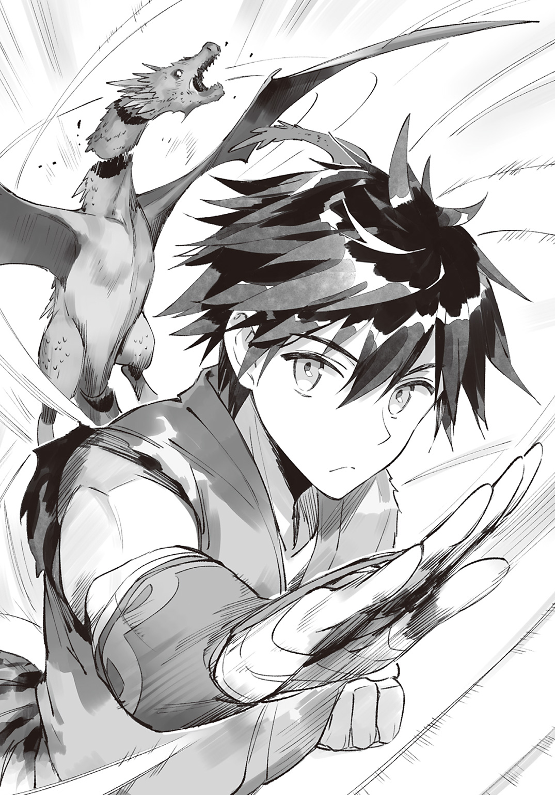
そうと決めた俺は庭にバーベキューセットを組み立て、火を起こし、鉄板を熱してバターを溶かした。
そうしてキノコを炒めていると、師匠が帰ってきた。
「いい香りがするのぅ。今夜はバター炒めじゃな？」
「おかえり、師匠。それだけじゃないよ。ほら！」
脂の乗った肉を両手に持ち、師匠に見せる。
「おおっ。美味そうな肉じゃな！」
やった！ 師匠が喜んでくれたぞ！
「今日は師匠の誕生日だからね。ご馳走を作ってるんだ」
「そうか。今日はわしの誕生日じゃったか......。ほんと、アッシュは良い子じゃのぅ」
師匠は目を潤ませている。
まさかここまで喜んでもらえるなんて......来年もお祝いしないとな！
そのときは、またレッドドラゴンが現れてくれるといいんだけど。
「にしても、その肉はどうしたのじゃ？ うちにそんな高そうな肉はなかったと思うのじゃが......」
「森で調達したんだよ」
「わしのために、わざわざ魔物を狩ってくれたのか......。怪我はしてないか？」
不安げな師匠に、俺は笑って告げる。
「弱かったからね。師匠直伝のカマイタチで一撃さ！」
「そ、そうか。さすがはわしの弟子じゃな！ その調子でどんどん強くなるとよいのじゃ！」
師匠は嬉しさと気まずさのせめぎ合った顔をするのであった。
◆
ここ最近、俺はとある魔物を血眼になって探していた。
一六歳の誕生日を迎えた俺は、毎日のように『そろそろ魔法杖が欲しいんだけど』と師匠におねだりしていたのだ。
お金はあるので買おうと思えば買えるけど、弟子として師匠の許可なく魔法杖を手に入れるわけにはいかないからな。
そうして毎日おねだりしていたところ、師匠が新たな課題を出してきた。
「伝説の魔物――レッドドラゴンを倒すことができたら、そのときはわしが最終試験をつけてやるのじゃ」
「けど師匠、レッドドラゴンなら一二歳の頃に倒したよ」
「......え？ そうじゃったっけ？」
「うん。師匠が町に出かけたとき時空の歪みが発生してね。レッドドラゴンが現れたんだよ。カマイタチで倒したけどさ」
「そ、そんな大事なことを、なぜいままで黙っていたのじゃ!?」
「弱かったし、あえて話すまでもないかなと思ってね」
「そ、そうか。さすがはわしの弟子じゃな......」
「師匠の弟子なんだ、それくらいできて当然さ！ にしてもあれって伝説の魔物だったんだね。てことは最終試験をつけてくれるってこと？」
「い、いや、間違えたのじゃ。アッシュに倒してもらうのは、伝説の伝説と呼ばれる魔物......その名も、ええと......伝説の伝説の魔物じゃ！」
「伝説の伝説の魔物か......。いかにも強そうだね！ そいつはこの森に棲んでるの？」
「う、うむ！ そういう言い伝えがあるのじゃ！ そいつを倒すことができたら、最終試験をつけてやるのじゃ！」
「わかったよ！ 俺、そいつを倒してみせるよ！」
......と、まあ。
そんなこんなで一ヶ月探してるんだけど、伝説の伝説の魔物は見つからないのだった。
「っと、もう夕方か」
探している間に日が暮れてきた。
ご飯を作るのは俺の仕事だ。師匠がお腹を空かせてるだろうし、そろそろ夕飯の準備に取りかからないといけないな。
本日の捜索を諦め、俺は住み慣れた我が家へと帰還する。
家の前に、師匠が立っていた。
「どうしたの、師匠？ 伝説の伝説の魔物なら見つからなかったよ？」
師匠は思い詰めたような顔をしている。なにか迷うように目を伏せたあと、じっと俺を見て、震える声でこう言った。
「......じゃろうな。そんな魔物、この世に存在しないのじゃからな」
「それくらい珍しいってことだよね？ わかってるよ！」
「良い子すぎるじゃろ！」
ふいに師匠が叫ぶ。
「ど、どうしたの、師匠？ 良い子って......俺のことを言ってるの？」
「そうじゃ！ どうしてそんな良い子になってしまったのじゃ！」
「そんなの師匠の育て方がよかったからに決まってるよ」
「良い子すぎるじゃろ！ なぜいつもそうやってわしを褒めるのじゃ！」
「師匠が立派な人間だからさ」
「あぁあああああああ！」
師匠は膝をつき、
「良心が痛い！」
絶叫した。
「どうしたの、師匠？ 気分が悪いならベッドまで運ぶよ？ そして、温かくて身体に優しい健康的なスープを作ってあげるよ」
「わしを殺す気か!?」
くわっと目を見開く師匠。
そんなつもりはさらさらないんだけど......ほんと、どうしちゃったんだ？
「......よかろう」
「なにが？」
「最終試験じゃよ」
「えっ!? 最終試験をつけてくれるの!?」
「うむ！ もっとも、結果は見えておるがな」
師匠はなにかを悟ったような顔をしている。
俺に勝ち目はないってことか？
たしかに師匠は偉大なる大魔法使いだ。きっと魔法書には載っていない魔法をいくつも使うことができるのだろう。
だけど、俺だってこの一一年間死に物狂いで修行したんだ！
師匠の実力は未知数だけど、俺にだって意地がある！
苦戦は必至。
だけど負けるつもりは微塵もない！
わずかでも可能性がある限り、俺は諦めたりしないのだ！
「約束してよ、師匠。俺が勝ったら魔法杖を買ってくれるって」
師匠は首を縦にも横にも振らず、まっすぐに俺を見つめてきた。
「そのときは――アッシュよ、お前に大事な話をするつもりじゃ」
「大事な話......？」
って、なんだろ？
いやっ、戦う前によけいなことを考えるのはよそう。
とにかく師匠に勝ちさえすれば、話とやらが聞けるんだからな！
問題は、どうやって師匠に勝つかだ。
いつもは師匠の防御結界に守られてるけど、今回はそれがない。となると攻撃を受けるわけにはいかないし、まずはバックステップで距離を取るか。
いや、それじゃだめだ。師匠には俺の行動パターンなんてお見通しだろうしな。となると、予想外の行動に打って出るしかない。
穴を掘って師匠のうしろにまわりこむとかどうかな？ 隙を突けば一撃与えることができるかもしれないな！ けど、俺のカマイタチが師匠の防御結界を貫けるだろうか。
などと作戦を練っていると、師匠が魔法杖を放り投げた。
魔法杖を使わずに魔法を使うことができるとはいえ、魔法杖を使ったほうが強いに決まっている。脳内ルーンのほうが強いなら、師匠が魔法杖を持っていることに説明がつかないのだ。
師匠を脅かすほどの敵がこの森に――否、この世界にいるとは思えないけど、万が一ということもある。
そのときに備えて、師匠は魔法杖を肌身離さず身につけているのだ。
だというのに、俺との戦いで放り投げた。
師匠にとって、俺は脅威ではないということだ。
そのことが俺は悔しかった。
「手加減はいらないよ！ 俺は本気の師匠と戦いたいんだ！ だから魔法杖を使ってよ！」
「これ、ただの杖なのじゃが......」
と、師匠が困り顔で不可解なことを言った、そのときだ。
キィィィィィン！
俺と師匠のあいだに時空の歪みが発生したのである。
「俺が倒そうか？」
師匠は首を振る。
「わしが倒すのじゃ。わしの戦闘スタイルを見たほうが、納得してもらえそうじゃからな」
納得......って、なんのことだろ。
パキィィィィン！
不思議に思っていたところ、音を立てて空間が割れた。
時空の歪みから飛び出してきたのは、漆黒のマントを羽織ったガイコツだった。
◆
モーリスは心臓が止まるかと思った。
アッシュとの真剣勝負をする直前に時空の歪みが発生し、魔物が飛び出してきたのだ。
このあたりは時空の歪みが発生しやすいため、魔物など珍しくもなんともない。
それにモーリスは魔王を倒し世界を救った勇者一行のひとりである。魔物が現れたところでうろたえることはない。
だというのに、モーリスは恐怖に震えていた。
『くくくっ。ひさしいな、モーリス・アークヴァルド――勇者よ！』
しわがれた声が、モーリスの頭に響く。
声の主は目の前に佇む魔物――漆黒のマントを羽織ったガイコツだ。
声帯を持たぬガイコツは、モーリスの頭に声を送っているのである。
「な、なぜだ......なぜ、貴様が......あのとき、倒した、はず......」
流暢に語りかけてくるガイコツとは対照的に、モーリスは上手く声を出すことができない。
無理もない。
なにせ目の前のガイコツは、モーリスが五〇年以上前に倒した魔物――
『倒した？ くくくっ、この我が――この魔王が、人間ごときに倒されるとでも思うたか！』
世界を混沌の渦に叩きこんだ魔王――《闇の帝王》なのだから。
『確かに、あのとき我は死にかけた。だが、かろうじて生きていたのだ！ くくくっ！ 我を倒すのであれば、粉々に粉砕するべきだったな！ もっとも、いかなる魔法を用いようとも、幾層もの防御結界を纏う我を粉砕することはできぬがな！』
魔王は見た目ガイコツだ。
生きているかどうか、ぱっと見ではわからない。
しっかりと確認したつもりだったが、魔王は死んだふりをしていただけなのだ！
三日三晩の激闘の果て、やっとの思いで倒した魔王が生きていたのだとわかり、モーリスは絶望する。
そんなモーリスを見て、魔王は愉快そうにガチガチと歯を鳴らして嗤う。
『我は五〇年ものあいだ、日々修行を積んできた！ すべては貴様に――勇者一行のなかでも最強の力を誇っていた貴様に復讐をするためにな！』
力を誇示するように両腕を広げ、《闇の帝王》がゆっくりと歩み寄ってくる。
あのときすでに最強だった魔王が、五〇年以上も修行を積んだのだ。
どれほど強くなったのか、モーリスには想像もつかない。
その一方、モーリスは老いて力を失いつつある。
まだまだ強いつもりだが、全盛期の半分ほどしか力は残っていないのだ。
全盛期ですら倒すのがやっとだった――否、仲間と共闘しても倒せなかった魔王に、いまのモーリスが敵うわけがない。
（終わりじゃ......世界の、終わりじゃ......）
モーリスは世界の終焉を覚悟した。そして――
『さあ、闇の時代の幕開け――』
「師匠、そいつ倒さないの？」
アッシュの呼びかけに、モーリスは我に返った。
（アッシュは......アッシュだけは、逃がさねばならぬのじゃ！）
アッシュは強い。
だが、現時点では魔王に敵うとは思えない。
しかし、このまま死に物狂いの修行を続ければ、その拳はいつの日か魔王に届きうるだろう。
それが何年後、何十年後かはわからない。
それでも必ず魔王を倒す日が来ると、モーリスはそう信じている。
だからこそ――アッシュが逃げる時間を稼ぐため、モーリスは戦うことを諦めてはならないのだ！
『くくくっ！ そこにいるのは貴様の弟子か！ ただ殺すだけでは我の鬱憤は晴れぬと思っておったが――モーリス、どうやら貴様に真の絶望を与えることができそうだ！』
魔王は愉快そうに嗤い、闇の広がる眼窩でアッシュを見据えるのだった。
◆
「お前......俺を見てるのか？」
こっちを振り向いたガイコツに、俺は問いかけた。耳がないし、ガイコツだし、それ以前に魔物だし、俺の言葉が通じるかはわからないけど――
『いかにも！ 我は貴様を見ておる！ これがなにを意味するか、貴様にわかるか？』
通じてたっぽい。
頭に直接しわがれた声が響いてるんだけど、どうやってしゃべってるんだろ。ま、こいつがどうやってしゃべってるかなんてどうでもいいけどな。
いまはとにかく師匠との勝負が最優先だ！
「師匠、さっさとこいつ倒しちゃってよ！」
「それはできぬ！ それよりアッシュよ、いますぐ森を出るのじゃ！」
「森を出る!?」
まさか破門ってことか!? なんでそうなるんだ!? 俺、まだ戦ってすらないんだけど......！
『くくくっ！ この我を前にして、ここから脱することができると思うか！』
「ちょっと黙ってろ！ 俺は師匠としゃべってるんだ！」
『くくくっ！ 貴様はしゃべることなどできぬッ！ 貴様の口から漏れるのは、言葉ではなく断末魔の叫び！ なぜなら貴様は、この我に目をつけられたのだからな！』
「ならあっち向いてろ！」
『くくくっ！ 我に命乞いは通じぬぞ！ この目に映ったその瞬間、貴様は我の標的となっておるのだ！ これがなにを意味するか、愚かな人間といえどわかるであろう？』
「黙ってろ！ 師匠、森を出ろってどういうこと!? 俺、師匠ともっと一緒にいたいよ！」
『くくくっ！ それは叶わぬ願いだッ！ 貴様とモーリスがともにいる時間はあとわずか！ なぜなら我はモーリスに並々ならぬ恨みを抱いておるのだから！ モーリスの仕打ちに、我のはらわたは煮えくりかえっておるのだからなァ！』
「はらわたねえだろ！」
パァァァァァァン！！！！！！！！
殴った瞬間、ガイコツの頭蓋骨が粉々に吹き飛んだ。
殴ったっていうか軽く触っただけなんだけど、まさか木っ端微塵になるなんて......こんなに脆いとは思わなかったぜ。
ぴくりとも動かないし、起き上がることはなさそうだ。
これで落ち着いて師匠と話ができる。
「師匠、森を出ろってどういうこと？」
俺はあらためてたずねる。
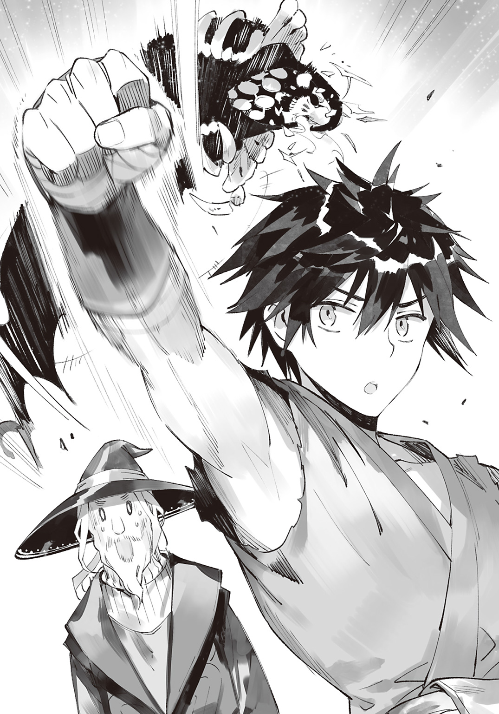
すると師匠が、わなわなと震えた。
「ど、どうなっておるのじゃ!?」
師匠が詰め寄ってくる。
「どうって、なにが？」
「なにがって、たったいまアッシュが粉々にしたこれじゃよ！ いったいどうやって倒したのじゃ!?」
「拳でぱこーんって殴っただけだよ」
「ぱ、ぱこーん、じゃと？」
「うん」
「ぜ、全力のぱこーんか？」
俺は思わず吹き出してしまう。
「全力を出すまでもないでしょ、あんなの」
「あ、あんなのじゃと!?」
「なにを驚いてるの？ 見るからにザコだったでしょ、あれ」
だってガイコツだぜ？
最初から死んでるようなもんだろ。
カマイタチを使うどころか、全力で殴るまでもなく倒せるっての。
「まさか、こんなにも実力差があったとは......わしの目に、狂いはなかったようじゃな！」
師匠は吹っ切れたように叫び、俺に真剣な眼差しを向けてきた。
いよいよ最終試験の幕開けか！
「アッシュよ。お前はわしを――元勇者であるこのわしを超えた！ 超越しておる！ お前に教えることは、なにもない！」
......え？
「ちょ、ちょっと待ってよ師匠！ 教えることはなにもないって......俺、まだなにも教わってないよ!?」
カマイタチは使えるようになったけど、見よう見まねで覚えただけだ。
師匠から直接教わったことは、なにもないのである。
「俺、風を操って空を飛びたいんだ！ 光を操って透明になったりしたいんだ！ とにかく、いろんな魔法を使いたいんだよ！」
魔力には『炎』『水』『氷』『土』『風』『光』『闇』の七系統があり、普通はひとつの系統しか使うことができない。
だけど例外はいる。ふたつの系統を使えるひともいるし、三つの系統を使えるひともいるし、なかには全系統を使いこなせる万能の魔力の持ち主もいる。
俺は風系統のカマイタチしか使えないが、それは脳内ルーンに限った話だ。魔法杖があればどんな系統が使えるか確かめることができる。
そして系統がわかったら、師匠に直接修行をつけてもらうのだ。そしていつの日かど派手な魔法を使いこなせる大魔法使いになるのである！
「無理じゃよ」
俺の夢を知りながら、師匠は首を横に振る。
「な、なんで無理とか言うんだよ！」
俺が詰め寄ると、師匠は目をそらした。
そして、ぼそっと言う。
「だって、アッシュには魔力がないし......」
......え？
「お、俺に......魔力が......なんだって？」
「ない」
「ない!? 魔力ないの!? 俺に!?」
「そうじゃ」
「そ、そんなわけないだろ!? 魔力がない人間なんているわけないよ！ そ、それに俺、魔法使ってるじゃないか！ カマイタチを使いこなしてるじゃないか！」
「あれは魔法ではない。ただの風圧じゃ」
「風圧!?」
「そうじゃ。手刀で風を起こしているだけじゃ。それがカマイタチの正体なのじゃよ」
「そんな説明で信じるわけないだろ！ ていうか人間業じゃないよ、それ！」
「身体を鍛えて鍛えて鍛え抜いたわしらにはできるのじゃよ。もっとも、わしのカマイタチは一五メートル先の魔物を切り裂くのがやっとじゃがな」
ちなみに俺のカマイタチは一五キロ先の魔物を軽々と切り裂くことができる。
常識的に考えて手刀でカマイタチを飛ばせるとは思えないし、だからこそいままで魔法だと信じていた。
魔力が増えたことで飛距離が伸び、威力が高まったのだと思っていた。
でも、カマイタチがただの風圧だとすると――
「アッシュよ。お前はあまりにも強くなりすぎた。間違いなく世界最強の――武闘家じゃ！」
この一一年間、俺は死に物狂いで武闘家の修行をしていたということになる。
「じょ、冗談だよね？」
「冗談なものか。お前は本当に強くなりすぎたのじゃ。全盛期の勇者一行が束になっても倒すことができなかった魔王を――《闇の帝王》をゲンコツで倒したのがその証拠じゃ」
「魔王なんか倒してないよ！」
「そこに転がっておるじゃろ」
「これ!? これ魔王!? このクソ弱いのが!?」
信じられない！ だってこいつ軽くゲンコツしただけで粉々になったんだぞ!? こんなのが魔王だなんてありえないだろ！
「冗談はもういいよ！ それより魔法使いの修行をつけてよ！ 俺、師匠みたいな魔法使いになりたいんだ！」
俺が訴えかけると、師匠は気まずそうな顔をする。
「......わし、武闘家じゃよ？」
......え？
「武闘家なの!? その見た目で!?」
ありえない！
だって師匠、見るからに魔法使いじゃん！ 大魔法使いじゃん！
「そ、そうだ！ ほら、俺が骨折するたびに、師匠は万象治癒を使ってくれたでしょ!? あの大怪我を一瞬で完治させるなんて、大魔法使いにしかできないよ！」
「わしはそんなもの使っておらんよ？」
「とぼけないでよ！ だったらどうして俺の骨はすぐ元通りになったんだよ！」
「それはアッシュの自然治癒力が凄まじいだけではないかのぅ」
「自然治癒力!? あれ自然治癒力なの!?」
一瞬で怪我が完治する自然治癒力ってなんだよ！ 人間離れしすぎじゃねえか！
「だったら防御結界はどう説明つけるのさ！ 一日が始まるたびに、師匠は防御結界をかけてくれたよね！ だから俺、魔物に襲われても怪我しなくなったんだよ！」
「それはアッシュが頑丈すぎるだけじゃ」
「で、でも、痛みすら感じないんだよ!?」
「修行のしすぎで痛覚が麻痺したんじゃろうなぁ」
バケモノじゃねえか！ 俺の知ってる武闘家と違いすぎるにもほどがあるだろ！
で、でも筋は通ってるし......
「じゃ、じゃあ、そこに転がってる魔法杖はなんなの!? それ、特注の魔法杖じゃないの!?」
俺は足もとに転がっている師匠の魔法杖を指さした。
こんなに立派な魔法杖を持っているのだ、師匠が立派な魔法使いである動かぬ証拠だ。
「これはただの杖じゃよ」
ただの杖かよ！
「じゃ、じゃあ......ほんとに師匠は武闘家なの？ 魔法使いじゃなくて......」
「ほんとに武闘家じゃよ」
「だ、だとしたら、どうして魔法使いのふりをしてたのさ！ わしは武闘家だって、どうして教えてくれなかったのさ！」
俺が師匠のことを魔法使いだと勘違いしていたのは......まあ、俺の責任だ。
でも、それならそうと早く言ってほしかった。
魔法使いではなく武闘家なのだと教えてほしかった！
「言えるわけないじゃろ！ わしのことを大魔法使いだと信じて過酷な修行に励むアッシュに『わしは武闘家じゃよ』などと言えるわけがないじゃろ！ わしも苦しかったんじゃからな！ 良心が痛んだんじゃからな！ じゃけど、アッシュを世界最強の武闘家に育て上げるために、心を鬼にしておったのじゃ！」
「俺、武闘家になりたいなんて一言も言ってないんですけど!?」
「わ、わかっておる！ わかっておるが......アッシュを世界最強の武闘家にしたかったのじゃ。そしてアッシュは、わしの期待に見事応えてくれた......いや、期待以上に応えてくれたのじゃ。まさか魔王を一撃で倒してしまうとはな......。アッシュさえいてくれれば、世界は安泰じゃ！ 現に、自覚はないかもしれんが、お前はついさっき世界を救ってみせたのじゃからな！」
興奮気味に語った師匠は、怖々とした口調で言った。
「......わしのことが、嫌いになったか？」
「なるわけないよ。俺、師匠のこと大好きだよ」
俺は心の底からそう答えた。
騙された感はあるけど、師匠は俺をここまで育ててくれた。俺のことを、実の息子のように愛し、育ててくれたのだ。
そんな師匠を嫌うなんて、できっこない。
正直な気持ちを伝えると、師匠は胸を押さえて膝をつき、
「良い子すぎるじゃろぉぉぉ......」
喜びと苦しみが織り混ざった表情で叫び、ふらふらと立ち上がった。
俺はよろける師匠にただの杖を渡し、たずねる。
「俺に魔法が使えないって話は、本当なの？」
「事実じゃ。もっとも、魔法使いより魔法使いっぽいことはできるがのぅ。カマイタチとか」
「そういうの、いいから」
カマイタチとか、そういう話は聞きたくない。
だって、あれは魔法じゃないのだから。
俺が魔法だと勘違いしていただけなのだから。
やった！ 俺にも魔法が使えたぜ！ ......なんてうかれていた自分がバカみたいだ。
「どうして俺には魔法が使えないの？」
俺はあらためてたずねた。
「普通は五歳になるまでに魔力斑という痣がおしりに浮かぶのじゃ。この魔力斑が濃ければ濃いほど、優秀な魔法使いになると言われておる。わしはこの魔力斑が限りなく薄くてな。魔法使いの才能がないから、武闘家になる道を選んだのじゃ」
その結果として勇者になれたのだから、師匠の努力は相当なものだったのだろう。
つらい現実に打ちのめされず、ひたすらに努力し続けるなんて......さすがは俺の師匠だ。
俺はますます師匠のことを尊敬する。
「その魔力斑っていうのが、俺にはなかったってこと？」
師匠は重くうなずいた。
「極希に......本当に、一〇〇年にひとり生まれるかどうかってくらい希に、魔力を持たぬ子が生まれるのじゃ。あまりこういう話はしたくないのじゃが......アッシュが森に捨てられたのは、魔力斑が浮かばなかったからじゃろうな」
この世界では、ありとあらゆるものが魔力によって動いている。
魔力がないということは、たとえるなら電化製品を使わずに生きていくようなものだ。不便極まりない生活を送ることになるし、まともな仕事なんて見つかりっこない。
魔力のない俺は、この魔法世界を生き抜くことができないのだ。
そんな生き地獄のような生活をさせるくらいなら、いっそのこと殺して楽にしてしまおう。そう、父さんと母さんは考えたのだろう。
「でも師匠、魔力斑のこととか本に書いてなかったよ？」
「当たり前すぎることは本に書かれぬものなのじゃ。人間は呼吸しなければ死ぬ、などと本に書いてないのと同じじゃ」
「......でも、絶対に魔法使いになれないってわけじゃないよね？」
「ど、どうじゃろうな。前例はないのじゃが――」
「なれないってわけじゃないよね!?」
「あ、ああ、そうかもしれぬな......」
「だよね!? 魔力斑がなくたって、魔力が手に入らないわけじゃないんだっ！ 死に物狂いで修行すれば――いま以上に努力すれば、大魔法使いにだってなれるんだっ！」
俺は自分に言い聞かせるように叫んだ。
魔力は精神力を鍛えることで増幅する。
そして俺は、精神的にまだまだ未熟だ。
より厳しい鍛練を積めば、魔力が手に入るかもしれないのだ！
......だけど、これまで通りに修行をしても魔力は手に入らないだろう。
なにせ、この森に魔法使いはいないのだから。
武闘家しかいないのだから。
立派な魔法使いになるためにも、ちゃんとした施設で教育を受けたほうがいい。
そうすれば魔力獲得のアドバイスとかもらえるかもしれないしな！
「師匠。俺、学校に通いたい！ 魔法使いの学校に通いたいんだ！」
「魔法が使えないのにか？」
「逆だよ！ 使えるようになるために通うんだ！」
「お前の辞書に『諦める』の文字はないのじゃな......」
師匠は感心したように言う。
俺だって、どうでもいいことならすぐにでも諦めていたかもしれない。
でも、魔法使いになるのは前世からの夢なのだ。
そう簡単に諦めてたまるものか。
たとえ一生かかっても、俺は大魔法使いになってみせる！
そして使うんだ！ ど派手な魔法を！
「いいじゃろう。これまでお前を騙しておった、せめてもの罪滅ぼしじゃ。わしの知る限りで最高の魔法学院を紹介してやるのじゃ」
「ほんとに!? ありがとう師匠！」
師匠はにこやかにほほ笑んだあと、真顔になった。
「じゃが、無事に入学できるかはお前しだいじゃぞ。ただでさえ入学するのが難しい魔法学院――エルシュタット魔法学院に、魔力のない人間が合格したという前例はないのじゃからな」
「何事にもはじめてはあるよ！ 俺が初の合格者になってやる！ そして、魔力斑がなくても魔法が使えるってことを世の中に広めるんだ！ そうすれば、もう俺みたいに魔力がないからって捨てられる子はいなくなるからね！」
「良い子すぎるじゃろぉぉぉ......！」
なぜか泣き崩れる師匠であった。
第二幕 規格外の編入生です
魔王を粉々にした日。
夕飯の後片付けをしていたら師匠が電話をかけ始めた。
いいなぁ、電話......。
のどから手が出るほど欲しいけど、俺が持っててもしょうがないしな。
俺に知り合いがいないってのもあるけど、そもそも俺は電話を使うことができないのだ。
なにせこの世界の電話は電波じゃなくて魔力で交信する仕組みだからな。
魔力の質には個人差があるため、アドレス代わりに相手の魔力を登録することで特定人物と連絡を取りあうことができるのである。
そして師匠は、エルシュタット魔法学院の学院長に電話をかけているらしかった。学院長に直談判して俺を入学させようとしているのだ。
エルシュタット魔法学院の学院長といえば勇者一行のメンバーにしてエルシュタット王国の国王様だ。
つまり正真正銘の大魔法使いなのだ。
そんな歴史に名を残す偉人のもとで勉強すれば魔力獲得の手がかりが摑めるはず！ 魔法が使えるようになるはずだ！
だから頑張って説得してくれ、師匠！
「わしわし。モーリスじゃよ。いま暇？」
師匠は軽い口調で言った。
国王様にタメ口で話しかけるなんて......さすがは俺の師匠だぜ！
「ちょっと頼みがあるのじゃが......ほら、わしの弟子のことは前に話したじゃろ？ そうそう、アッシュじゃ。そのアッシュを、お前の学院に入学させてやりたいのじゃが......ああ、うん。魔法は使えないんじゃけどな。......えっ？ あんなに武闘家にさせると張りきっていたのに、なぜ入学させたいのかって？ 実を言うと、さっき《闇の帝王》が復活したのじゃがッ!?」
師匠は驚いたように電話を遠ざけた。
「い、いきなり叫ぶでない！ ただでさえ聴力が衰えておるのじゃぞ？ 聞こえなくなったらどうしてくれるのじゃ！」
師匠はため息をつき、落ち着いた口調で語りかける。
「安心せい。魔王は今度こそ完全に死んだ――念のため骨という骨を粉々に砕いたからのぅ。いや、魔王を倒したのはわしではない。アッシュじゃ。しかもゲンコツでなっ！ アッシュはわしが思っていた以上に強くなっておったのじゃ！」
このあと五分間、師匠は俺を褒めちぎる。
「つまりアッシュは世界を救ったのじゃ！ その褒美といってはなんじゃが、お前のところで預かってやってはくれぬか？ ......なにぃ!? 編入試験は受けてもらうじゃと!? アッシュは世界を救った英雄なのじゃぞ！ なにぃ!? それとこれとは話がべつじゃと!?」
師匠は悔しげに歯ぎしりをして、怒りを発散するように地団駄を踏む。
「師匠......」
師匠は、俺のために本気で怒ってくれている。旧友とはいえ国王様を相手に、ムキになってくれているのだ。
そのことが、俺は本当に嬉しかった。
これで入学が決まったら最高に嬉しいぜ！
だから頑張って学院長を説得してくれ、師匠！
俺は師匠にエールを送る。
その想いが伝わったのか、師匠は五分ものあいだ熱弁を振るい、俺をアピールしてくれた。
それからため息をつき、情に訴えるような声音で言う。
「のぅ、フィリップよ。昔、コロンの酒場で愚痴を言い合ったときのことを覚えておるか？ ......た、たしかに愚痴を言ったのはわしだけじゃが、覚えておるじゃろ？ あの当時、わしは最強の武闘家じゃった。魔力こそわずかじゃったが、魔王討伐軍の誰よりも強かったと自信を持って言えるのじゃ」
師匠は何度か相づちを打ち、
「じゃが、わしは魔力測定をパスできず、門前払いされた。その話をしたとき、お前は自分のことのように憤ってくれた。そしてあの日、わしとお前とコロンの三人で討伐軍を結成した。いまのアッシュは、あの日のわしじゃ。じゃから、せめて魔力測定くらいは免除してくれると助かるのじゃ。あと、学費を免除したうえで生活費を支給してくれると大いに助かるぞい」
うちにはあまり貯金がないのだ。
「本当か!? さすがはフィリップ、話がわかるではないか！」
おっ、なんか話がまとまったっぽいぞ！
師匠の表情的に、説得は成功したようだ。
俺が安心していると......師匠の顔が曇っていく。どうしたんだ？
「編入試験は明日じゃと!? なにぃ!? 書類審査は免除する!? それはありがたいけども！ ここから学院までどれだけ距離があると思っておるのじゃ!? 一ヶ月後に延期するのじゃ！ そ、それは無理じゃとぉ!? おのれえええええええ！」
師匠のこめかみに青筋が浮かぶ。
このままだと血管が切れてしまいそうだ。
師匠に倒れられると悲しいので、俺はなだめることにした。
「落ち着いてよ師匠。エルシュタット魔法学院って、エルシュタニアにあるんだよね？」
この世界の地理については、幼い頃に本で読んだことがある。
エルシュタニアは、エルシュタット王国の首都だ。
ここ『魔の森』からエルシュタニアまでは片道一〇〇〇キロくらいだったはずだ。交通機関――列車と飛空艇を使っても三日はかかる距離である。
「う、うむ。じゃから、このままでは編入試験に間に合わぬのじゃ！ 試験を延期にするよう説得してみせるから、安心して待っておるがよい！」
「だいじょうぶだよ。エルシュタニアなら、いまから出れば間に合うからさ」
師匠はぽかんとする。
「......アッシュよ。お前、瞬間移動とか使えぬじゃろ」
そりゃそうだ。
瞬間移動は、かなり難易度の高い魔法だからな。魔力のない俺に使えるわけがないのである。
「瞬間移動とまではいかないけど、脚力には自信があるんだ」
「それ、ほぼ瞬間移動ではないか？」
「全然違うよ！」
瞬間移動ってのは、瞬時に移動する『魔法』だ。
でも俺のはただの高速移動――走るだけなのだ。
「短距離しか走ったことはないけど、けっこう速く走れたからね。あのペースなら試験開始に間に合うよ」
「じゃ、じゃが、かなりの距離があるのじゃぞ？」
「修行のおかげで持久力はついたからね。三週間飲まず食わずで修行したことだってあるし、体力の心配はいらないよ」
「さらっととんでもないことを言うのぅ」
師匠は困惑している。
三週間飲まず食わずの修行は師匠の言いつけではなく、一日も早く大魔法使いになるための自主的なトレーニングなのだ。
「とにかく間に合うのじゃな？」
「うん」
俺の自信を感じ取ってくれたのか、師匠は「なんか間に合うっぽい」と学院長に伝えると、通話を終えた。
「編入試験は明日の朝から開始されるようじゃ。本来は書類審査と魔力測定で多くの受験生が落ちるが、それは免除してくれるようでな。もっとも、実技試験を突破できるかはアッシュの実力しだいなのじゃが......」
師匠としては、試験なしで俺を入学させたかったのだろう。
師匠は申し訳なさそうにしてるけど、魔力測定を免除してくれるだけで大助かりだ！
魔力がない以上、魔力測定を突破することはできないからな。
合格できるかは実力しだい――。魔法使い相手にどこまでやれるかはわからないけど、鍛え抜いた武闘家の力で実技試験を突破してみせるぜ！
「俺のために電話してくれて、ありがとね」
俺が感謝の気持ちを伝えると、師匠は涙ぐんだ。
「アッシュよ。お前は、わしにとって子どものようなものじゃ。立派に育ってくれて、わしは本当に嬉しいぞ」
「師匠の育て方がよかったんだよ」
「アッシュ......。お前と離れるのはつらいが......本当はずっと一緒に暮らしたいが......しかし、これ以上わがままを言うわけにはいかぬ。お前の幸せが、わしの幸せなのじゃからな」
師匠は涙を拭い、きりっとした顔で言う。
「死に物狂いの修行の果てに、世界最強の武闘家になってみせたアッシュなら、必ずや立派な魔法使いになれると信じておるぞ！」
「もちろんさ！ 俺、立派な魔法使いになってみせるよ！」
「うむ！ アッシュが大魔法使いになるその日まで、なんとしてでも生きながらえてみせるのじゃ！」
師匠はいつも元気だし、あと一〇〇年は生きそうだ。
だからといって、のんびりはできない。
明日の編入試験に合格し、優秀な魔法使いたちと研鑽を重ね、大魔法使いになってみせる！
「じゃ、行ってくるよ！」
「うむ！ たまには帰ってくるのじゃぞ！」
そうして荷造りをした俺は、師匠の見送るなか、住み慣れた我が家をあとにしたのであった。
◆
日が暮れる前に出発したこともあり、日が昇る頃にはエルシュタニアに到着した。
「ちょっと早く着きすぎたな......」
ま、早く着いたものはしかたない。どこかで飯でも食って時間を潰すとするか。
「えっと、いくらあったっけ......」
旅立つ際、師匠にお金をもらったのだ。
いくらあるかは確かめてなかったけど......けっこう入ってるな。
財布の重みは気持ちの重み。師匠は俺のことを大事に想い、応援してくれているのだ。
師匠のためにも、そして夢を叶えるためにも、必ず合格しないとな！
そんなに腹は減ってないけど、景気づけに肉でも食うか！
「すみませーん。このあたりに焼肉屋ってありませんか？」
「あるよ！」
たまたま近くを通りかかった女の子に話しかけると、予想以上に食いつかれた。
赤髪を揺らしながら駆け寄ってくる。
見たところ、俺と同い年くらいかな？
「焼肉いいよね！ あたしも大好きっ！ ちょうど食べに行くところだったの！ よかったら一緒に来るっ!?」
「行きます！」
いきなり焼肉好きに当たるなんて幸先いいな。このひとなら最高の焼肉屋に連れてってくれそうだ。
「よーし、決まりだねっ！ この街で一番美味しい焼肉屋に連れてってあげるよ！ あたしについてきて！」
「お願いします！」
テンションの高い女の子のあとに続き、綺麗に整備された石畳の道を歩いていく。
「そうだっ！ きみ、名前は!?」
「アッシュです」
「アッシュくんか！ いい名前だね！ あたしはフェルミナだよ！ よろしくねっ！」
俺は人見知りしないほうだけど、フェルミナさんはそれ以上だ。
魔法使いと仲良くなるチャンスだし、いろいろ質問してみようかな。
「フェルミナさんって、エルシュタット魔法学院の生徒だったりします？」
「おおっ！ どうしてわかったの!?」
「この街のことをよく知ってるみたいだし、俺と同い年くらいの見た目なので。やっぱり生徒なんですね」
「うんっ。二年だよ！」
二年ってことは俺と同い年か。合格したらクラスメイトになるかもしれないな。
「今日は編入試験で授業はお休みでね！ 一日食べ歩くことにしたの！」
初っ端から焼肉って、本当に肉が好きなんだな。
「アッシュくんは......旅行中？」
「そんなところです」
「だったら教えてほしいな！ アッシュくんの地元にも美味しい焼肉屋さん、ある!?」
あとタメ口でいいよ、とフェルミナさんは笑う。同い年だし、そうするか。
「俺の家しかないよ」
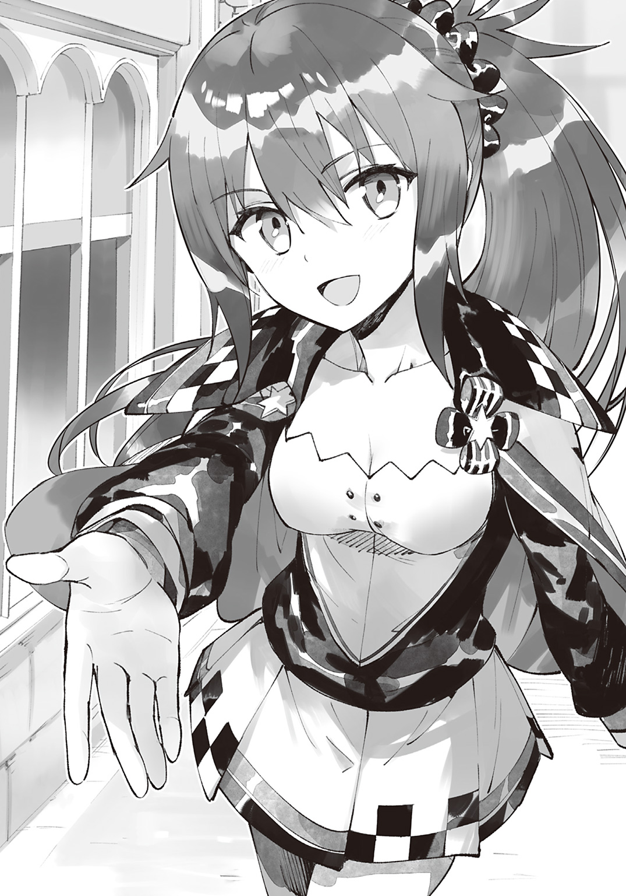
「家しかないの!? えっ、じゃあなに食べて生きてるの!?」
「魔物を狩って食べてるよ」
「魔物狩ってるの!? じゃあもしかしてアッシュくん、魔法騎士団のひとだったり......？」
フェルミナさんが憧れの眼差しを向けてくる。
魔法騎士団は、かみ砕いて言うと正義の味方。人々を守るために日夜魔物と戦う魔法使いのエリート集団だ。
フェルミナさんの反応的に、将来は魔法騎士団に入りたかったりするのかな？
「俺は団員じゃないよ」
「そうなんだ。だけど普段から魔物狩りをしてるってことは、かなり強いってことだよね！ 将来は魔法騎士団に入るの？」
「将来のことは考えてないけど、いまはとにかくエルシュタット魔法学院の生徒になりたいよ。この街に来たのも編入試験を受けるためだしさ」
「そうなんだ！ じゃあ昇級試験が終わったらクラスメイトになるかもね！」
「昇級試験？」
編入試験じゃなくて？
「うんっ！ うちの生徒は上級と中級と下級に分けられてて、昇級試験の結果でクラスが入れ替わるんだよ！ で、編入組はすぐに上級クラスに上がってくるの！」
編入試験は一般試験以上に倍率が高いため、編入組は優秀な生徒が多いらしい。そのため、最初は下級クラスからスタートだけど、すぐに上級クラスに上がるのだとか。
「フェルミナさんって上級クラスなの？」
「そうだよ！」
そうなのか！ 凄いな！
エルシュタット魔法学院は世界最高峰の教育機関。そこの上級クラスってことは、エリート中のエリートってことだ。
これはためになる話が聞けそうだぞ！
「ちょっと質問があるんだけど、フェルミナさんってどうやって強くなったんだ？」
魔法使いの修行方法がわかれば、魔力が手に入るかもしれないのだ。俺がいままでしていた修行は武闘家の修行だったわけだしさ。
「強いひとと戦って、お肉をお腹いっぱい食べたらいいよ！」
「なるほど！」
このあと肉を食べるし、実技試験で優秀な魔法使いと戦うことになる。
つまり、上手くいけば編入試験で魔力が宿るのだ！
魔法使いとして入学できればこっちのものだ！ 毎日勉強と鍛錬を積み重ねれば、卒業する頃には大魔法使いになっているかもしれない！
「俺、がっつり食べるよ！」
「おっ、食欲旺盛だね！ さすが男の子！ よーし、あたしもアッシュくんに負けないくらい食べて食べて食べまくるぞ！」
などとやる気を燃やす俺とフェルミナさんだったが、焼肉屋は閉まっていた。
次の店へ向かっている間に試験時間が迫り、俺は試験場へ向かうことに。
「ちゃんと案内できなくてごめんね」
本気で申し訳なさそうにするフェルミナさん。なにも悪くないのに、本当にいいひとだな。
「試験に受かったらこの街で暮らすことになるし、焼肉はそのとき食べようぜ！」
フェルミナさんは嬉しそうにうなずいた。
「おすすめのお店はたくさんあるからね！ そのときは合格祝いにおごってあげるっ！」
そうしてフェルミナさんと別れた俺は、試験場へと向かうのだった。
試験場はエルシュタット魔法学院の広場だ。エルシュタット魔法学院は魔法使いなら誰もが憧れる場所――いわば聖地である。
エルシュタット王国を訪れたのははじめてだけど、魔法使いに憧れている俺は当然のように学院の場所を知っていた。
そうして迷うことなく試験場にやってきたところ、すでに大勢のひとで賑わっていた。
とはいえ想定の範囲内だ。なにせここは世界最高峰の教育機関だしな。受験生は多くて当然なのである。
何人が合格するのかはわからないけど、絶対にそのなかのひとりになってみせるぞ！
「このなかにアッシュ・アークヴァルドはいるかい？」
意気込んでいたところ、呼び声が聞こえてきた。
誰だろ？ あたりを見まわしてみるが、ひとが多すぎて声の主がわからない。
「ここにいます！」
挙手して存在をアピールしてみる。
「もう一度言うぞ。アッシュ・アークヴァルドはいるかい？」
アピールが足りなかったようだ。
今度こそ気づいてもらうため、俺はジャンプすることにした。
「ここにいます！」
五〇メートルほど跳び、しゅたっと着地。普通は骨折じゃ済まないだろうが、俺にとってはどうということはないのである！
......本音を言うと五〇メートル跳ぶつもりはなかったし、無傷で着地できたことにも驚いたけどね。
防御結界がないのに痛みすら感じなかったってことは、師匠の言った通り、俺の身体は頑丈になりすぎたってことだ。
人間離れしすぎたことがいいことなのか悪いことなのかはさておき、俺の存在には気づいてもらえたようだ。
「えっ、いまルーン描いてた？」
「魔法杖を使ったようには見えなかったけど......」
「もしかして、脳内ルーン？」
「理論上はできないことはないかもしれないけど......前例はないよね？」
「何者なんだろ......？」
などと受験生たちがじろじろと俺を見るなか、試験官っぽい男のひとが駆け寄ってきた。
「きみがアッシュくんかい？」
さすがは試験官なだけあって、いまのジャンプに驚いていない様子だ。考えてみれば当然か。試験官は教師と兼任だろうし、授業中にもっと凄い魔法を見てるだろうしな。
俺もここの生徒になって、ど派手な魔法を使えるようになってみせるぞ！
「はい。俺がアッシュです！」
「そうか。きみを別室へ案内するよう、フィリップ学院長から言付かっているんだ。向こうの建物で待っていてくれるかい？」
広場の向こうにある建物を指す試験官。
「看板が出てるから、行けばわかるよ」
「わかりました！」
試験官に頭を下げ、さっそくドーム型の建物へ向かう。
「えっ？ いまの魔法杖なしでやっていたのかい!?」
どこからか驚く声が聞こえた気がした。
ドーム型の建物の前には『実技試験会場』と看板が出ていた。
なかに入ると、円形闘技場のような造りになっていた。すり鉢状の構造で、広場のまわりを客席が取り囲んでいる。
客席には誰もいないけど、広場には筋骨隆々のお爺さんが佇んでいた。上半身は裸で、鍛え上げられた筋肉を惜しげもなく晒している。
誰だろ？ ここにいるってことは二次試験の試験官かな？
「おおーい、こっちこっち！」
遠巻きに眺めていると、お爺さんに手招きされた。ひとまずそちらへ向かう。
「きみがアッシュくんかね？」
「そうですけど......あなたは？」
「私はフィリップ・ヴァルミリオン。学院長さ」
「武闘家じゃねえか！」
なんで筋骨隆々なんだよ！
俺の読んだ本が正しければ、フィリップ学院長は歴史に名を残す大魔法使いだぞ!?
なのにどうして武闘家みたいな見た目なんだ？
まさかフィリップ学院長まで『私は武闘家だよ』とか言いださないよな......？
「ほっほっほ。安心したまえ。昔色々あって身体を鍛えているが、私は正真正銘の魔法使いだからね」
フィリップ学院長は朗らかに笑う。
よかった......。本当によかった！
俺が心の底から安堵していると、フィリップ学院長が頭を下げてきた。
「我々がしとめそこねた《闇の帝王》を倒してくれて、本当にありがとう......！」
「頭を上げてください！ ちょっと殴ったら粉々になっただけですし、お礼を言われるほどのことはしていませんよ！」
「我々人類は、その『ちょっと殴ったら粉々になるガイコツ』に滅ぼされかけたんだけどね」
「で、でも滅ぼされなかったじゃないですか！ それもこれも、学院長や師匠たちが命懸けで魔王と戦ってくれたおかげですよ！」
「きみは本当に良くできた子だね」
「光栄です！ 俺、フィリップ学院長のもとで魔法の勉強をしたいんです！」
俺はここぞとばかりに想いを告げる。
「しかし、きみには魔力がないのだろう？」
「魔力は気合いで手に入れます！」
学院長はあっけにとられたように瞬きしたあと、朗らかに笑った。
「魔力は気合いで手に入れる、か。そういう熱血なところはモーリスそっくりだね」
師匠にそっくり、か......。なんだろ。お礼を言われたことより、そう言ってもらえたことのほうが嬉しいな。
「魔力がない人間に、魔力が宿ったという前例はない。だが、熱意に満ちたきみなら、本当に不可能を可能にしてしまうかもしれないね」
「はいっ！ 俺、絶対に魔法使いになってみせます！」
にこにこと笑っていたフィリップ学院長は、ふいに真顔になる。
「まだ入学できると決まったわけじゃないからね。魔力測定は合格ということにしておいたが、実技試験を突破できるかはきみの実力しだいだよ」
「わかっています！ 俺、誰が相手でも負けません！ 必ず突破してみせます！」
「......まあ、魔王を倒したきみなら余裕で合格できるだろうけどね」
ぼそっとつぶやき、フィリップ学院長は気を取りなおすように咳払いする。
「とはいえきみの場合、大変なのはそのあとだよ。なにせ魔力がないんだからね。魔力がない以上、授業から日常生活に至るまで、多くの面で苦労することになるだろう。だから、なにか困ったことがあれば、遠慮なく言いなさい。私にできることなら、喜んで力になるからね」
にこりと笑い、フィリップ学院長はきびすを返す。
「それじゃ、きみの活躍を期待しているよ」
「はい！ 俺、全力で頑張ります！」
歴史に名を残す大魔法使いのフィリップ学院長にエールを送られ、嬉しくないわけがない！
俺は感涙しそうになるのを我慢しつつ、実技試験の幕開けを待つのであった。
◆
実技試験会場に到着して三時間が過ぎた。
「......きみ、なにしてるの？」
腕立て伏せをしていると、女性に声をかけられた。
めがねをかけた知的なひとだ。
このひとが実技試験の試験官かな？
「すみません。ただ待つのは退屈なので筋トレを......」
「たしかきみ、アッシュくんだったわよね？ 学院長から話は聞いているわ。いままで多くの受験生を見てきたけど、待機時間に筋トレする子はあなたがはじめてよ」
「筋トレは禁止でしたか？」
「禁止ではないけれど......普通、実技試験の前は体力を温存するわね」
「それなら平気です！ 体力はありあまってますから！」
これまで死に物狂いで修行してきたからな。こんなの運動したうちには入らないのだ。
「ならいいんだけど......っと、来たわね」
魔力測定を突破したひとたちが集まってくる。
「へえ、けっこう残ったわね」
えっ、これで全部？
俺を含めて一〇人しかいないんだけど......これでも例年よりは多いのか。
それってつまり、今年はいつも以上に優秀な人材が集まったってことだよな。
これは頑張らないと合格は厳しそうだぞ！
「私は実技試験の試験監督を務めるエリーナよ！ さあ、まずは一列に並んでちょうだい！」
エリーナさんの指示を受け、ぞろぞろと動く俺たち。
「並んだわね。じゃ、こっちから順に魔法系統を教えてちょうだい！ 複数あれば一番得意な系統でいいわ！」
魔法使いは魔力と引き替えに精霊と交渉し、魔法を発動させている。
精霊には炎精霊とか風精霊がいて、それぞれ好みの魔力があると本に書いてあった。
つまり精霊にとって魔力は餌みたいなもので、たとえば炎精霊にとって好みの魔力を持っている魔法使いは炎系統に秀でているというわけだ。
「じゃあ最後、きみの得意な系統はなに？」
俺の番がまわってくる。
得意な系統か。どうしようかな。
得意もなにも、そもそも魔力がないんだけど。全部不得意ってことは、裏を返せば全部同じくらい得意ってことだしな。
つまり、なにを答えても間違いではないってわけだ。
「風系統です！」
物理的に発生させているとはいえカマイタチを飛ばせるし、風系統ってことでいいだろ。
「なるほどね。炎が四人、水が三人、氷が二人、風が一人か。それじゃ、これからチーム戦を始めてもらうわ」
チーム戦ってことは人数的に俺は炎系統の四人と組んで、水氷チームと戦うのかな。
「というわけで、系統別にチームを組んでちょうだい！」
えっ？
「相手チームを全滅させたチームの合格よ！」
ええっ？
もしかして四対三対二対一でバトルロイヤルするのか？
それ、俺にめちゃくちゃ不利なルールなんですけど......。
「ごめんね。今年はそういうルールなの」
気持ちが顔に出ていたようだ。そう言われると返す言葉もない。
ま、俺は魔力測定を免除してもらったわけだしな。わがままを言うわけにはいかないよな。
それにこれくらいの逆境を乗り越えられるようじゃないと、魔法世界を生き抜くことはできないからな。
みんなを倒して必ず合格してみせるぞ！
「全滅って、具体的にはどうすればよろしいので？」
俺のとなりに立っていた受験生が質問する。
一番有利な炎チームに所属しているからか、余裕そうな佇まいだ。
「気絶させるだけでいいわ。安全策が施されているから全力で魔法を使っても問題ないのよ」
「安全策とは？」
「学院の敷地内には学院長の手によって特別な結界が張られているの。物理的な攻撃だろうと魔法を使った攻撃だろうと、ダメージは精神にしか作用しないわ」
「つまり、なにをされても無傷でいられるわけですね？」
「そういうことよ。もっとも、結界に守られているのは人体だけだから、建物は壊れることもあるんだけどね」
だけど、とエリーナさんはほほ笑む。
「特別な素材を使っているから、きみたちが全力で戦っても傷ひとつつかないわ。建物の損害費用を請求することはないから、安心して全力を出し切ってちょうだい！」
冗談めいた口調でエールを送るエリーナさん。
きっと俺たちの緊張をほぐそうとしてるんだろうな。
でも、その冗談で笑みを浮かべたのは炎チームだけだった。
特にふたりで戦う氷チームは戦意喪失している様子だ。すでに諦めたような顔をしている。
そんな氷チームより不利な状況に立たされている俺はというと、もちろん諦めてなどいない。
みんなにはほかの学校っていう選択肢もあるけど、俺にはここしかないからな！
なにがなんでも勝ち残って魔法使いになってやるぜ！
「それじゃ、きみたちの健闘を祈るわ！」
エリーナさんが客席に上がる。
受験生はチームごとに集まって軽く作戦会議をすると、思い思いの場所に散っていく。
「きみはそこでいいのかしら？」
と、客席からエリーナさんがたずねてくる。
「はい！ ここで問題ありません！」
俺は闘技場の中央から答えた。
最初は背後からの攻撃を避けるため壁際に移ろうかとも思ったけど......そうすると逃げ場を失ってしまうからな。
それに俺は逃げたくなかった。立ち向かいたかったのだ。
このくらいの困難、真正面から突破できるようじゃないと魔法使いにはなれっこない、と。そんな気がしたのだ。
そうして受験生の準備が整ったところで、エリーナさんが客席から声を張り上げた。
「それでは――実技試験スタート！」
「どこからでもかかってこい！！！！！！！！」
ドォォォォォォォン！！！！！！！！
意気込んだ瞬間、受験生が紙切れのように吹っ飛び、壁に衝突した。絶対に壊れないはずの闘技場全体に亀裂が走り、客席が崩壊する。
「......」
えっ、これって俺のせい？
爆弾が炸裂したあとみたいになってるけど......俺が叫んだからこうなったの？
ちょっと声を張り上げただけなんだけど......。
でも、誰かが魔法を使ったわけじゃなさそうだしな。
やっぱり俺のせいか、これ。
......ま、まあいっか！
みんなぴくりとも動かないけど、フィリップさんの結界が張られてるわけだしな！ 無傷に決まってるぜ！
それに会場はめちゃくちゃだけど、損害費用は請求しないって言ってたしな！
「意識のあるひとはいますか？」
念のため受験生に問いかける。
返事はなかった。
失神しているのだ。
てことは――
「やったー！ 合格だ！」
俺は魔法使いへの第一歩を踏み出したのだ！
「すみません！ 起きてください！」
客席跡地でのびているエリーナさんのもとへ駆け寄り、声をかける。
ぐるぐると目をまわしていたエリーナさんは、はっと目を開ける。
「い、いま、なにが起きて..................これ、きみがやったの？」
呆然とするエリーナさんに、俺は自信を持って答える。
「はい！ 俺がやりました！」
「そ、そう。なんていうか、その......すごいのね。拡声魔法を使ったんでしょうけど......普通こうはならないわ」
拡声魔法は声を大きくする魔法だ。
偉いひとがスピーチのときとかに使う魔法である。
エリーナさんは俺がその魔法を使ったと勘違いしているようだ。フィリップ学院長から話は聞いたって言ってたけど、俺に魔力が宿ってないことは聞いてないらしい。
実際はただの大声なんだけどな。
まあ、本当のことを言っても信じてもらえそうにないので黙っておくけど。
俺だって、いまだに信じられないしな。
とにかく、これからは力の使い方に気をつけないと。授業中にくしゃみでもしようものなら教室が吹っ飛びそうだしさ。
「それで、俺は合格ですか？」
期待をこめてたずねると、エリーナさんはうなずいた。
「そうね。まさかこうなるとは思わなかったけど......おめでとう、アッシュくん！ 合格よ！ あなたの活躍を期待しているわ！ ......まあ、拡声魔法はなるべく控えてほしいけどね」
「わかりました！！！！」
エリーナさんは失神した。
第三幕 昇級試験です
編入試験を終えて一週間目の朝。
いつものように制服姿になった俺は、カバンを手にして学生寮を出た。目指すは徒歩五分のところにある東塔――校舎だ。
走れば一秒でたどりつくけど、そんなことしたら即武闘家だとばれてしまう。......いやまあ普通の武闘家は走っても一秒じゃたどりつけないし、武闘家だと見抜かれるとは思えないけど、それでも魔法使いじゃないことはばれるだろう。
俺はこの学院で唯一の武闘家だ。みんなには秘密にしてるけど、話すうちにボロが出るかもしれないと不安になることもあった。
魔力がないことがばれてしまうと差別されるかもしれないと思ったのだ。
でも、武闘家だということはばれてないけど、いまなら魔法使いじゃないことが知られても差別されたりしないと断言できる。
だって、ここには気の良い奴しかいないからな。
「おはよー、アッシュくん！」
「おう、おはよう！」
「いい天気だね、アッシュくん！」
「だな！」
「今日も早いな、アッシュ！」
「先輩こそ早いですね！」
寮を出るなり挨拶ラッシュを受ける。
学年もクラスも違うけど、みんな俺の友達だ。
魔法使いと接すれば魔力獲得の手がかりが得られるかもと思い、この一週間手当たり次第に声をかけ、多くの友達ができたのである。
みんなと接して気づいたが、ここの生徒はすごく向上心が高い。下級、中級、上級クラスに分かれてるけど、みんな毎日まじめに勉学に励んでいるのだ。
ここは世界最高峰の教育機関だ。下級クラスとはいえ、ほかの学校では首席レベルの実力者だし、上級ともなれば将来安泰だ。
なのに日々努力を欠かさないのはすごいと思うし、偉ぶらないのは立派だと思う。
俺は夢に向かって努力するひとが大好きだ。だからみんなには好感を持ってるし、みんなと友達になりたいと思っている。
きっとみんなも俺と同じ気持ちなのだろう。たまに口論することはあるけど、どのクラスの生徒も仲が良い。
それもあり、俺は毎日が楽しくてしかたがなかった。魔法使いじゃない俺に学費と生活費を支給してくれるフィリップ学院長と話をまとめてくれた師匠には感謝の気持ちでいっぱいだ。
応援してくれるふたりのためにも、早く立派な魔法使いにならないとな！
そんなことを考えている間に教室にたどりつく。ちなみに下級クラスである。年二回の昇級試験の成績によってクラス分けが行われるのだ。
そして今日が昇級試験当日だ。
俺にとっては初となる昇級のチャンス。
この日のために予習復習は欠かさなかったし、昨日は睡眠もしっかり摂った。
コンディションはばっちりだ。やることはやったし、あとは試験に臨むだけだ。
そうしてやる気を燃やしていると、担任の先生がやってきた。
「みんな知っての通り、今日は昇級試験を行うぞ。張りきっていけよ！」
昇級試験は『筆記試験』と『実技試験』の二つだ。魔法使いとしての技能を総合的に判断し、三階級に振り分けるのである。
昔から魔法書を読みこんできたし、いまのところ授業にもついていけている。......だけど、こういう本格的な試験ってはじめてなんだよなぁ。
どんな問題が出るんだろ？ みんな過去問とか解いてるのかな？ 一問も解けなかったらと思うと胃が痛みそうだけど、俺は痛みを感じない。修行のしすぎでそうなったのだ。
「うぅ、緊張するなぁ......」
となりの席のニーナさんが不安そうにぽつりとつぶやく。まわりを見ると、みんな落ち着かない様子だった。
......不安なのはみんな同じってことか。
上級クラスに行けばさらに高度な授業を受けることができるし、優秀な魔法使いと接すれば魔力獲得の手がかりが摑めるのだ。
緊張してせっかくのチャンスをふいにするなんてもったいないよな。
このチャンス、なんとしてでもものにしてやるぜ！
そうして無理やり緊張を吹き飛ばしたところで、先生が問題用紙と解答用紙を配りだした。
全員に行き渡ったのを見届けると、
「では、はじめ！」
と、試験開始を告げるのだった。
◆
問題用紙には真っ黒と言っていいくらいびっしりと文字が記されていた。
制限時間は一二〇分。
それまでに一〇〇問の難題を解かなければならないのだ。
ちゃんと全問正解できるといいんだけど......。
って、考えてる時間がもったいないな！
さっそく解いていくとするか！
【問１】
『火焰弾のルーンを描け』
これはサービス問題だな。
なにせ火焰弾は炎系統の初級魔法で、ルーンの構造は単純なのだ。
これくらいなら一〇秒で描ける......っと、できた。
【問２】
『万象治癒のルーンを描け』
またしてもサービス問題だ。
万象治癒は光系統の上級魔法だけど、ルーンの構造はそこまで難しくないからな。
ただ光系統の魔法は似通ったルーンが多いからな。ちゃんと勉強してないとどれがどれだかわからなくなるかもしれないな。
ま、細かい違いに気をつければ間違えることはないだろう......っと、描けた。
【問３】
『勇者一行のメンバーをフルネームで三名挙げよ』
サービス問題多いな。
勇者一行は両手じゃ数えきれないくらいいるけど、大半の生徒が同じ名前を挙げるだろうな。
なにせ有名人揃いの勇者一行のなかでも、主要メンバーの『モーリス・アークヴァルド』『フィリップ・ヴァルミリオン』『コロン・フルール』の三人は、ずば抜けて知名度が高いのだから......っと、書けた。
【問４】
『ここ一〇〇年で発見された魔法とその発見者のフルネームを一つ挙げよ』
序盤だし、サービス問題が集まってるのかな？
誰にするかが悩みどころだけど、解答欄は狭いし、なるべく名前の短いひとを書こうかな。
と、まあ。
そんな調子でサービス問題を解いていき――
......難題と出会うことなく解答欄を埋め尽くした。
試験終了まで半分以上時間が残ってるし、ちょっと急ぎすぎたかもしれないな。
でもこれ、難易度低すぎないか？
まったく詰まることなく解き終えてしまったんだけど......。
......まあ、でも、そうか。
エルシュタット魔法学院の昇級試験がこんなに簡単なわけがないし、ほとんどの生徒が満点なのだろう。
つまり、本当の勝負はこのあとに控える実技試験ってわけだ。
全員が満点ってことは、ひとつ間違えるだけでかなり順位が落ちるだろうし、ミスがないか確かめたほうがよさそうだ。
俺は解答に誤りがないか入念にチェックしつつ、試験終了を待つのであった。
◆
「そこまで！」
先生が終了の合図を出した途端、緊張の糸が切れたようにクラスメイトがため息をつく。
「なんかさ、今回の試験って難しくなかった？ しかも問題数もめっちゃ多かったしさ......」
「私、半分も解けなかったよ......だって時間少なすぎるんだもん」
「だよね！ 最後のほうとかとにかく解答欄を埋めなきゃって、適当に書いちゃったよ！」
パンパンと手を叩き、先生がざわめきを静める。
「みんな気づいていると思うが、今回の筆記試験は状況判断力を測るためのものだ！ 自分に解ける問題、解けない問題を瞬時に見極め、落ち着いて対処に当たること――。その能力は、魔法使いに欠かせないからな！」
そうなの？
そんな裏事情があったなんて気づかなかったんですけど......
「やっぱりそうか～」
「だと思ったよ～」
みんな気づいてたの!?
いや、状況判断力が大事ってのはわかるぞ？ 生きていれば魔物に襲われることもあるしな。力量の差を見極め、戦うべきか逃げるべきかを瞬時に判断する能力は大切だ。
それはわかるけど、いまの筆記試験にそんな意図があったなんて知らなかった。
うわぁ、どうしよ。めちゃくちゃ不安になってきたぞ。これで減点になったりしないよな？
「うわぁ、アッシュくんの解答欄びっしりだね！」
となりの席のニーナさんに驚かれ、俺はどきっとする。
「へ、変かな？」
頼む！ 変じゃないって言ってくれ！
「ううん、変じゃないよ！ あたしも解答欄全部埋めたもん！」
ありがとうニーナさん！ 俺の想いを察してくれて本当にありがとう！
力強く肯定され、俺は心底安堵するのだった。
「お互い一問でも多く正解してるといいねっ」
「だな！」
これで安心して次の試験に――実技試験に挑めるぞ！
「それじゃ次はくじ引きタイムだ！ 出席番号順に引きに来るように！ 全員引き終わったら昼休みだ！」
全員の解答用紙を回収したところで、先生が言う。
「くじって？」
俺はニーナさんにたずねる。
「アッシュくんははじめてだったね。えっと、くじには『実技試験の内容』『会場』『同学年の生徒ひとりの名前』が書いてあるの。その生徒が味方の場合くじの色は『青』で、その生徒が敵の場合くじの色は『赤』なんだよ」
なるほどね。
赤くじを引いたら問答無用で一対一の真剣勝負ってことか。
で、青くじを引いたら協力プレイ――たとえば『協力して試験官を倒せ』とかになるのだ。その場合、勝利にどれだけ貢献できたかで獲得点数も上下するってわけだ。
「くじを引くのは下級クラスのみんなと中級クラスの成績下位、くじに名前が書かれてるのは中級クラスの成績上位と上級クラスの生徒なの」
ニーナさんはため息をつく。
「あたしは前回の試験で赤くじ引いちゃって、しかも相手はエファさんだったの！ だからね、今回は青くじか、赤くじにしても、せめて中級クラスのひとと戦いたいんだけど......あたし、くじ運ないからなぁ......」
ニーナさんは切実そうに語る。
エファさんっていうのが誰なのかは知らないけど、きっとニーナさんにとっては格上すぎる相手だったんだろうな。
「まずはアッシュ。引きに来い」
先生に呼ばれ、俺は前に出る。
クラスメイトの視線が集まるなか、くじを引く。
二つ折りにされたくじは――『赤』だった。
この時点で真剣勝負は決定ってことか。
あとは誰と戦うかだな。
ひとまず席に戻り、くじを開く。
試験会場は第三闘技場。
対戦相手は――
「フェルミナ・ハーミッシュ!?」
くじを覗きこんできたニーナさんが悲鳴を上げると、クラスメイトが騒然とした。
みんな驚いてるけど、俺も驚いている。
この『フェルミナ・ハーミッシュ』って、あのフェルミナさんだろ？ お肉大好きな、あの。
フェルミナさんとはあれ以来会ってないし、フルネームは知らないんだけど、きっとそうだ。
上級クラスの教室は西塔にあるとはいえ、会いに行こうと思えばいつでも会いに行けるけど、フェルミナさんに挨拶をするのは上級に昇格してからと決めていたのだ。
俺にとって、フェルミナさんははじめてできた魔法使いの友達だからな。
早く友達に会いたい、そのためにも上級クラスに昇格しないと――という気持ちが向上心を高めてくれると考えたのだ。
なのにまさかフェルミナさんと戦うことになるなんて。
俺が勝ったらフェルミナさんは降格するかもしれないけど、いまは自分の心配をしないとな。フェルミナさんに勝てるって決まったわけじゃないしさ。
「アッシュくん、ついてないね。よりによってフェルミナさんだなんて......」
「ま、次があるさ！」
なにせクラスメイトの反応的に、フェルミナさんは上級クラスのなかでも極めて優秀な魔法使いらしいのだ。
真剣勝負で手を抜くのは相手に失礼だし――そもそも手加減できる相手じゃない。
全力で相手しないと、やられるのは俺のほうだ。
上級クラスに昇格し、さらに高度な授業を受け、魔力獲得の手がかりを摑むためにも、俺は絶対に負けられないのである！
それに負けたとしても、優秀な魔法使いと真剣勝負ができるのは幸運なことだしな。
戦いのなかで魔法を使うコツとか学べるかもしれないしさ。
「うわっ、ノワールさんと真剣勝負だよ......。あたしのくじ運、どうなってるの......？」
くじを引いたニーナさんが泣きそうな顔をして戻ってくる。
強者と戦えてよかったな！ なんて言い出せない雰囲気だ。
「さて、全員引き終えたな！」
励ましの言葉を考えていると、先生が声を張り上げた。
「知らない者のために説明しておくが――お前たちがくじを引いた瞬間、相手の生徒にはお前たちの名前が書かれたくじが届いている。青くじを引いた者は昼休みのあいだにパートナーと作戦会議をするもよし。赤くじを引いた者は、敵情視察するもよし。各自好きにするといい。以上、諸君らの健闘を祈る！」
そうして昼休みに突入した瞬間。
「アッシュくんいる!? 一緒にご飯食べよっ！」
フェルミナさんが教室に乗りこんできたのであった。
◆
フェルミナさんに誘われて、俺は食堂にやってきた。
普段は東塔の食堂を利用しているため、西塔の食堂に来るのははじめてだ。
ここは上級クラスが利用するところだし、豪華絢爛な料理が並んでるかもと身構えていたが、西塔と同じくバイキング形式の学食だった。
「なににしようかな」
大事な真剣勝負を控えてるし、今日は軽めにしとくか。
ひとまず席を決めてフェルミナさんと別れた俺は栄養バランスを考えつつ野菜中心の料理を皿に載せていく。
「おかえり、アッシュくん！」
席に戻ると、フェルミナさんが満面の笑みで出迎えてくる。
「おやおやっ、アッシュくんは小食なのかなっ？ だめだよー、男の子がそんな小食じゃ！ もっと食べなきゃ強くなれないんだよっ。食事はパワーの源なんだからね！」
得意気に力こぶを作るフェルミナさん。
こないだも思ったけど、フェルミナさんって本当に人見知りしないな。俺だってフェルミナさんのことは友達だと思ってるけど、このあと勝負するわけだしな。
つまり『敵』ってことになるわけだけど......こんなに親しげにされたんじゃ、敵意を向けるのは難しいな。
意識の切り替えは勝負直前にするとして、いまは会話を楽しむとするか。
「俺が小食ってより、フェルミナさんが食べすぎな気がするけど」
大きな皿が四枚。
そのすべてに山盛りの肉が載っていた。
明らかに過食だ。
肉が好きってことは知ってたけど、まさかここまでとは......。
「筆記試験で頭を使いすぎちゃったからね！ おなかぺこぺこで死にそうなんだよ！」
「なるほどね。今日が特別多いだけか」
そりゃそうか。
こんなに食べる女の子が、こんなにスタイル抜群なわけないもんな。
「いつもは三皿だよっ！」
「充分多いよ！」
「いただきまーす！」
我慢できなかったのだろう。フェルミナさんは唐突に会話を打ち切り肉に食らいつく。頰をパンパンに膨らませたままもぐもぐと咀嚼し、ごくんと飲みこみ、
「ここにいるってことはアッシュくんって編入試験に受かったんだよね!?」
唐突に話を再開する。
「まあね」
「おめでとっ！ ていうかあたしね、エリーナ先生に質問したんだよっ！ アッシュくんってどれくらい強いんですかって！ 編入試験の内容は誰にも言っちゃだめだから『すごかった』ってことしか教えてもらえなかったんだけどねっ！」
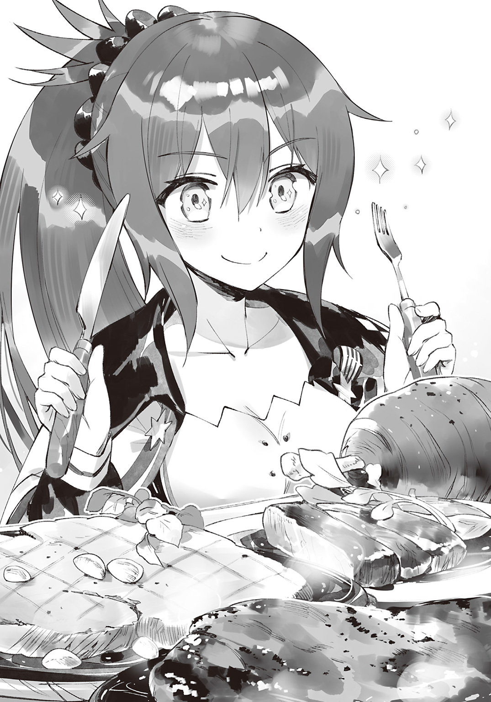
エリーナ先生は実技試験の試験官を務めていた女性だ。
口ぶり的に、エリーナ先生はフェルミナさんの担任なのかな？
「どういうふうにすごかったのか、教えてくれると嬉しいなっ」
フェルミナさんが、俺の目をじっと見つめてくる。
なるほどね。フェルミナさんが俺を飯に誘ったのは『アッシュ・アークヴァルド』の情報を集めるためだったのか。
だとすると正直に教える必要はないよな。
「それは実際に戦ってみればわかることだよ」
「それもそうだねっ」
フェルミナさんは余裕の笑みを崩さなかった。
情報があろうとなかろうと、俺に勝つ自信があるってことか。
さすがは上級クラスの魔法使いだ。
相手にとって不足はない！
「はい、それじゃあ今度はアッシュくんが質問する番だよ」
「......俺が？」
「うんっ。あたしだけ質問したんじゃ不公平でしょ。どんな質問でもバッチコイだよ！」
質問かー。そう言われても、俺がフェルミナさんの情報を手に入れたら不公平になるしな。ここは当たり障りのないことを訊いておくか。
「フェルミナさんって、いつから上級クラスにいるんだ？」
「入学初日からだよっ。あたしは特待生だからね。いままで負けたことがないの！」
「それはすごいな！」
特待生っていうのもすごいし、負けたことがないっていうのもすごい。やっぱりフェルミナさんは優秀な魔法使いなんだな。
「でしょ～？ これはあたしの二つある自慢の一つなのですよ」
フェルミナさんは照れくさそうにはにかむと肉を口に運び、頰をパンパンにする。恥じらうポイントが普通の女子と違う気がするけど、いまはそんなことどうでもいい。
「俺が勝てば自慢が一つになるけど、だからって恨んだりするなよ？」
「あははっ。あたしがそんなひとに見える？ 安心して、負けたって恨まないからね！ 恨むならあたしの弱さを恨むよ！」
豪快に笑い、豪快に肉を喰らうフェルミナさん。
なんていうか、すごく気持ちのいい性格してるな。
フェルミナさんとなら、勝っても負けても清々しい気持ちになれそうだ。
「対戦相手がフェルミナさんでよかったよ」
「おおっ！ 嬉しいこと言ってくれるねぇ！」
フェルミナさんは本当に嬉しそうに笑う。
喜んでいる理由は、なんとなく察しがつく。
クラスメイトがそうだったように、普通の生徒はフェルミナさんとの真剣勝負を不幸なことだと思っているのだ。
練習試合なら『上級との試合は勉強になる！』とポジティブに受け取るだろうけど、これは大事な昇級試験だからな。格下と戦って楽に勝ちたいと思うのが普通だ。
自分との勝負を『不幸』と思われたんじゃ、フェルミナさんもあまりいい気はしないだろう。
「ちなみにあたしは、アッシュくんがあたしよりも強いひとだったらいいなって思ってるよ」
「フェルミナさんは負けたいのか？」
「勝ちたいよ」
と、フェルミナさんは真剣な顔で言う。
「なら、どうして格上と戦いたがるんだ？」
「あたしはね、学院を卒業したら魔法騎士団に入って、みんなを魔物から守りたいの」
魔法騎士団というと、優秀な魔法使いしか入団できないエリート中のエリートだ。
部署によって実力にはばらつきがあるだろうけど......フェルミナさんレベルの魔法使いなら、いまの実力でも入団することはできるだろう。
でも、フェルミナさんは現状に満足していないようだ。
「どんな魔物が相手でも一撃で倒せるくらい強くなる――。それが、あたしの卒業までの目標なんだ」
フェルミナさんが目指しているのは『魔法騎士団への入団』じゃなくて『人類を魔物の脅威から守ること』らしい。
だったら、強くなるに越したことはないよな。
「自分より弱いひとを倒したって、強くはなれないでしょ？ あたしは自分よりずっとずっと強いひとと戦って、自分の未熟さを思い知って、悔しさをバネに頑張って、もっともっと強くなるんだ」
なるほどな。
フェルミナさんが強敵との戦いを望んでいる理由がよくわかったよ。
俺もずっと師匠みたいな大魔法使いになりたくて修行を頑張ってきたからな。
フェルミナさんも、目標となる人物を求めているのだろう。
そして、そのひとに勝つことを卒業までの目標と定め、いままで以上に努力するのだ。
俺は、上級クラスに所属しているだけでは満足できず、さらなる高みを目指そうと努力しているフェルミナさんのことがますます気に入った。
昇級試験が終わってからも、交流を続けたいと本気で思う。
「フェルミナさん的に、俺は強そうに見える？」
「武闘家っていうか、腕っ節が強そうには見えるかな」
武闘家として育てられたからね。
「それに強かろうと弱かろうと、アッシュくんのことはすごく気に入ってるよ」
「どうして？」
フェルミナさんの好感度を上げるようなことしたっけ？
「だって、あたしと戦うことになってラッキーとか言ったの、アッシュくんがはじめてだもん。アッシュくんなら、この先どんどん強くなると思うなっ」
「それは魔法使いとして!?」
大声を上げると、フェルミナさんが驚いたようにびくっと震えた。
「それ以外になにがあるのかな？」
「なにもない！ なにもないよ！」
そっかぁ......。俺、魔法使いとしての伸びしろがあるのかぁ......。フェルミナさんは初見で俺を『武闘家みたい』と見抜いたし、ひとを見る目は確かだ。そんなフェルミナさんに、俺は『魔法使いとして強くなる』と評価されたのだ。
フェルミナさんのお墨付きがもらえたのはとても嬉しいことである。
「そ、そんなに嬉しいの？」
「めちゃくちゃ嬉しいよ！ 俺、頑張るから！ お互い悔いのない試合をしような！」
不思議そうに俺を見つめていたフェルミナさんは、ぱあっと笑顔になる。
「うんっ。勝っても負けても恨みっこなしだよ！」
◆
フェルミナさんと別れた俺は、試験会場の第三闘技場へ向かった。
ん？ あれって......
「ニーナさんの会場もここなのか？」
同じクラスのニーナさんが闘技場前のベンチに座りこんでいたのだ。
「あぁ、アッシュくん......。うん、そうだよ......ここがあたしの墓場だよ......」
ニーナさんは見るからに絶望していた。
「しかも試合は一四番目......最後から二番目だよ。待ち時間長すぎだよ。いっそ早く楽にしてほしいよ......。アッシュくんは、いつ試合やるんだっけ？」
「俺は一五番目。ニーナさんの次だから、最後だね」
「アッシュくんの前かぁ......。じゃあ恥ずかしいとこ見られちゃうね」
「恥ずかしいとこ？」
「うん。だって、あたしの相手はノワールさんだからね。なにもできずに負けちゃうよ......」
「べつに負けたって恥ずかしがることじゃないだろ。それに負けるとは限らないしさ！」
「アッシュくんはすごいね。フェルミナさんと戦うのに、よくそんなテンションでいられるね......」
「楽しみだからな！ ほら、強敵と戦えたほうがいろんなことを学べるだろ？ ニーナさんは、強くなりたいとか思わないのか？」
エルシュタット魔法学院に通ってるってことは、向上心はあるはずだけど......
「思ってるよ。だけどあたしが強くなりたいのは、どんな魔物に襲われても生き残れるようになるため......自分を守るためだから、負けるとわかってる戦いは避けたいの。相手が強いと、逃げたくなっちゃうの」
相手が強いと逃げたくなる、か。
フェルミナさんとは真逆の思考だな。
「ノワールさんって、そんなに強いのか？」
「意味わかんないくらい強いよ......」
「だけど相手は魔物じゃなくて人間だぞ？ それでも怖いのか？」
「魔物と戦うよりはマシだけど......こういう試合で負けたとき、あたしはいつも思うんだよ。これが魔物ならあたし殺されてるんだよね、このあと美味しく食べられちゃうんだよねって」
ニーナさんは想像力が豊かすぎるようだ。
てことは、その想像力をポジティブなほうに働かせれば、強敵と戦うことへの恐怖心を克服できるかもしれないな。
「じゃあ、こういうのはどうだ？」
「どういうの？」
「ニーナさんが魔物に襲われたときは俺がそいつを倒す。つまりニーナさんが魔物に殺される心配はないってわけだ」
「でもそれって、アッシュくんがあたしより何倍も強くないと成り立たないよ？」
たしかにニーナさんの言う通りだ。
俺は魔王を倒したけど、『魔王を殴って粉砕したよ』と説明しても信じてもらえないだろう。そもそも魔王は五〇年以上前に勇者一行によって倒されたことになってるしな。
だから口で説明するのではなく、行動で示すしかないのだ。
「じゃあ、フェルミナさんに勝って、俺が強いってことを証明するよっ！ そんなわけで俺も頑張るから、ニーナさんも頑張ってみないか？」
力強く励ますと、ニーナさんの顔が明るくなっていく。
「そ、そうだね。アッシュくんのおかげで、なんだか勇気がわいてきたよ。ノワールさんとの戦いも、頑張れそうな気がしてきた！」
「おおっ、その意気だ！ けど、どうせなら『ノワールさんに勝つ』くらいのことは言ってもいいんじゃないか？」
「そ、そうだね！ よーし、今日はノワールさんに勝つぞ！ ふるぼっこだ！ こてんぱんにしてやる！」
「......貴女が、ニーナ・アライバル？」
淡々とした声が聞こえてきた。
無表情の女の子が、じっとこちらを見つめている。
背が低く、青みがかった髪を風になびかせている。
見た目と系統は関係ないけど......なんとなく氷系統が得意そうだな。
そうイメージしてしまうくらい、冷たい印象だったのだ。
「ノ、ノワール、さん......」
ニーナさんがびくびくと震えている。
そうか。このひとがノワールさんか......。
入学してから集めた情報によると、二年生には三人の強者がいるらしく、上級生と比べても実力はずば抜けているのだとか。
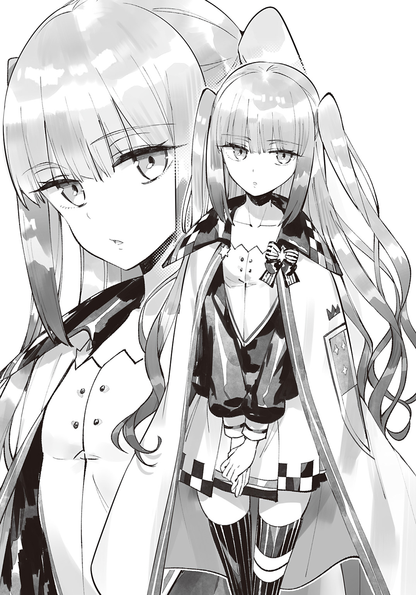
その三人のうちのひとりがノワールさんだ。
ぱっと見おとなしそうな女の子だけど、ニーナさんの怯えっぷりを見ていると実力のほどがうかがえる。
「貴女、私に勝つの？」
ノワールさんが抑揚のない声で問いかける。
ニーナさんは迷うようにちらっと俺を見たあと、ぐっと拳を握って立ち上がった。
「か、勝ちます！ あなたに勝って、あたしは弱い自分とさよならするんです！」
おおっ、いいぞニーナさん！ その調子だ！
敬語になってるのが引っかかるけど、ニーナさんは勇気を出して強敵に立ち向かってるんだ。
いまは静かにニーナさんを見守ろう。
「......そう。だけど、私は負けないわ。負けられない、理由があるもの」
「あ、あなたの理由なんて、どうせたいしたことないんです！」
「たいしたことあるわ。私は、筆記試験ぼろぼろだったもの」
「あ、あたしだってほとんど解けませんでしたよ！」
なんてレベルの低い争いなんだ......！
「下級クラスの貴女に負けると、中級クラスに落ちるもの」
「中級クラスがどうしたっていうんですか！ こちとら下級クラスですよ！」
「中級クラスの教室は、購買から遠いもの」
「購買が遠いならお弁当を作ればいいんです！」
「西塔にある購買の大人気商品『外カリッ、中もふっ♪ もっちりもちもちほっぺがとろける夢のめろめろメロンパン』は、私の生きがいだもの」
――だから貴女には負けないわ。
そう言い残し、ノワールさんは颯爽と歩き去っていく。
「い、言ってやった......あのノワールさんに、言ってやった......」
ニーナさんはしりもちをつくように座りこみ、俺を見上げてきた。
「い、いまの会話、ちゃんと聞いてた？」
「一言一句もらさず聞いたよ。頑張ったな！」
俺が褒めると、ニーナさんは満面の笑みになった。
「アッシュくんが背中を押してくれたから、ノワールさんに立ち向かうことができたんだよっ。勝てるかどうかはわかんない......ううん、絶対に負けると思う。でも、あたしは逃げないよ！ 逃げ続けてたら、いつまでも弱い自分のままだもん！」
力強く宣言するニーナさん。
さっきまでとは別人のようだ。
ニーナさんは、俺の言葉を信じて勇気を出してくれたんだ。
ニーナさんの気持ちに応えるためにも、俺はフェルミナさんに勝たなきゃいけないんだ！
「お互い頑張ろうな！」
「うんっ！」
俺たちは闘志を燃やしつつ、実技試験の幕開けを待つのだった。
◆
試合は着々と進んでいき、二時間ほどでニーナさんの順番がまわってきた。
試験官を務めるエリーナ先生が第三闘技場の扉を開き、ニーナさんとノワールさんを呼んでいる。
「じゃあ行ってくる！」
「ああっ、頑張ってな！」
「うんっ！ アッシュくんもね！」
ニーナさんは力強い返事を残し、涼しげな顔のノワールさんと扉の向こうに消えていく。
試合が終わったら勝ち負けに関係なく裏口から出ることになるため、次にニーナさんと会うのは教室だ。
そのとき笑顔で再会できるといいんだけどな。
「う～ん......。ノワちゃんのあとかぁ。ちょっと嫌だなぁ」
フェルミナさんが俺のとなりに腰かけ、ため息をつく。
ノワちゃんってノワールさんのことだよな？
「なにが嫌なんだ？」
「すぐにわかるよ。とりあえず、心の準備はしといたほうがいいかな」
フェルミナさんは意味深な笑みを浮かべる。
どういう意味だ？
疑問に思っていると、闘技場の扉が開かれた。
「つ、次ぃ......。一五番、なかに......入ってぇ......！」
えっ、うそだろ!? もう終わったのか？
ニーナさんが闘技場に入って一分も経ってないぞ!?
......いやでも、ノワールさんが強いって話は散々聞かされたしな。ふたりのあいだには俺が思っていた以上に実力差があったってわけだ。
それはわかったけど、どうしてエリーナ先生は震えてるんだ？ まるで寒がってるみたいだけど......
「行こう、アッシュくん！」
フェルミナさんに呼びかけられ、俺たちは闘技場に入る。
「......なんだ、こりゃ？」
そして目を疑う。
闘技場が氷の世界と化していたのだ。
壁は霜に覆われ、天井から氷柱がぶら下がり、広場には大きな氷塊がごろごろ転がっている。氷の世界をイメージして設計した......ってわけじゃないよな。ほかの闘技場は普通だったし。
「ノワちゃんは氷系統最強の魔法使いなんだよっ。寒いっしょ？」
フェルミナさんが腕を組み、ぶるぶる震えている。
やっぱり魔法のせいか。闘技場全体を凍りつかせるくらいだし、ノワールさんが氷系統最強っていうのは本当のことなんだろうな。
「ところで、そんなに寒いのか？」
俺は寒くないんだけど。
「あっはっは。我慢しなくていいんだよっ。これが寒くないとかありえないもん！ そんなの人間じゃないよっ！」
ほんとに寒くないんだけど......修行のしすぎで感覚器官がぶっ壊れたのかな？
ま、実生活で困ることはないし、べつにいいけどさ。熱さに気づかずやけどしたって痛みは感じないし、すぐに治るしな。
......考えれば考えるほど人間離れしちゃったな、俺。
「なにはともあれ、すぐに温めてあげるからねっ！」
そう言って、つるつるの広場に立つフェルミナさん。そこから一五メートルほど距離を空け、俺はフェルミナさんと向かいあう。
「ルールを説明するわッ！」
エリーナ先生が寒さを吹き飛ばすように、やけくそ気味に叫ぶ。
「知っての通り、学院敷地内には特別な結界が張られているわっ！ なにをされても怪我することはないわ！ だけど痛みは感じるわ！ 先に失神したほうが負けよっ！ さっさと勝負を終わらせて温かいシャワーを浴びましょう！」
口早にまくし立てたエリーナ先生は大きく息を吸いこみ、
「それでは――試合スタートよ！」
号令を出した。
瞬間、フェルミナさんは懐から魔法杖を取り出した。
いいなぁ、魔法杖。
俺、まだ一度も握ったことがないんだよな......。それぞれ握り心地も使い勝手も違うらしいけど、フェルミナさんの魔法杖はどこのメーカーだろ？
見とれている間にフェルミナさんはルーンを完成させた。
頭上に大きな火の弾が出現する。
俺は動体視力に自信がある。フェルミナさんが火焰弾を使おうとしていることは、ルーンを描き始めた時点でわかっていた。
でも、実際に生み出された火の弾は俺の知っているものと違っていた。
本に書いてあった火焰弾の平均サイズより、フェルミナさんの生み出したそれは二回り以上大きかったのだ。
魔法の威力は魔力しだい。
つまりフェルミナさんの魔力は、平均を大きく超えてるってわけだ！
「約束通り温めてあげるね！」
ごうごうと燃えさかる火焰弾が俺めがけて飛んでくる。
ふぅっと息を吹きかけ、俺はそれを消し飛ばした。......できるかどうかわからなかったけど、マジで消えちまったな。どうやら修行のしすぎで肺活量もおかしくなったようだ。
誰かに誕生日を祝ってもらえることがあれば、バースデーケーキの蠟燭は軽く消さないとな。じゃないと大惨事だ。
「......えっ？ い、いまなにしたの!? ていうかアッシュくん、魔法杖は!? まさか杖なしで魔法を使ったの!?」
俺は首を振る。
「いまのはただの呼吸だ」
「呼吸!? 呼吸で火焰弾を消したの!? って、そんなことできるわけないよ！ 脳内ルーンで送風魔法を使ったんでしょ？ あたしの火焰弾を消すのは呼吸するくらい簡単って言いたいんだね!?」
「好きに解釈していいよ！ さあ、今度はこっちの番だ！」
俺は正拳突きを放つ。
ドッゴオオオオオオオオオオオオオオオオオン！！！！！！！！
フェルミナさんのうしろにあった氷塊が爆散した。氷粒が散弾銃のように飛び散り、衝撃で闘技場全体が揺れ、天井にぶら下がっていた氷柱が落ちてくる。
正拳突き。
正しくは『正拳突きによる風圧』は絶対に壊れない闘技場の壁を破壊していた。
今回は説明がなかったけど......損害費用を請求されたりしないよね？
「えっ、ええっ!?」
フェルミナさんが大穴を見て悲鳴を上げる。
見るからにパニック状態になってるけど、ダメージは受けてないようだ。正拳突きするとき足が滑り、狙いが逸れてしまったらしい。
よけいな被害を出さないように、直接殴ったほうがよさそうだな。
「い、いまのなに!? 今度はなにしたの!?」
「正拳突きを放ったんだ」
「そんな魔法聞いたことがないよ！」
魔法じゃないからね。
「普通の正拳突きだよ」
「正拳突きしたようには見えなかったよ！ だってあたしずっとアッシュくんを見てたもん！ そしたら急に爆発音がしたんだもん！」
ゆっくり正拳突きしても風は発生しないからな。
カマイタチもそうだけど、風圧を発生させるには目にも留まらぬ速さで殴らないといけないのだ。
「びっくりすることだらけだけど、アッシュくんがめちゃくちゃ強いってことはわかったよ！ だけどあたしはアッシュくんの上をいくッ！」
戸惑っているように見えるけど、魔法杖さばきは機械のように精密だ。
精神力を鍛えることで魔力は上がる――。圧倒的な魔力を持つフェルミナさんの精神力は、ずば抜けているのである！
やはり相手にとって不足はない！
「あたしの必殺技の――火焰魔神を受けて立ち上がったひとはいないんだからっ！」
フェルミナさんの魔法杖から、ぽっ！ と音を立てて火の玉が飛び出した。
次の瞬間、ぶわっと火の弾が大きく膨れあがり、二足歩行の獣のような姿に形を変えていく。
全長五メートルはあるだろう。フェルミナさんが生み出したそれは、まさに『炎の魔人』と称するに相応しい見た目をしていた。
炎系統最上級魔法のひとつ、火焰魔神！
そんな炎系統魔法使いの到達点とも呼べる魔法を、フェルミナさんは学生でありながら使うことができるのだ！
「すごい......」
勝負の最中だというのに、炎の魔人に見とれてしまう。
さすがは必殺技なだけあり、かっこよすぎるのだ！
俺も大魔法使いになって、ど派手な魔法を使ってみたい！
火焰魔神みたいな必殺技がほしい！
そのためにも上級クラスにならなくては！
火焰魔神を退け、フェルミナさんを倒し、昇級試験を突破するのだ！
「さあッ、やっちゃえ火焰魔神！」
炎の魔人が俺に覆いかぶさるように襲いかかってくる！
ふぅ。
と、息を吹きかけて炎の魔人を消した俺は、ぐっと拳を握りしめる。
「今度は全力で行かせてもらうぜ！」
フェルミナさんは必殺技を見せてくれた。
今度は俺が必殺技を見せる番だ！ だけど俺に必殺技なんてないため、とにかく全力で殴ることにした。
全身全霊かけた全力の一撃を、フェルミナさんにぶつけてやるのだ！
「くらえ！ ......え？」
しかし俺が攻撃する前にフェルミナさんは倒れた。
まさか、また叫んだだけで倒してしまったのか？
そんなに大声出してないけど......。
ぴくりとも動かないため、エリーナ先生が広場に降りてきた。フェルミナさんのほっぺたをぺちぺち叩き、
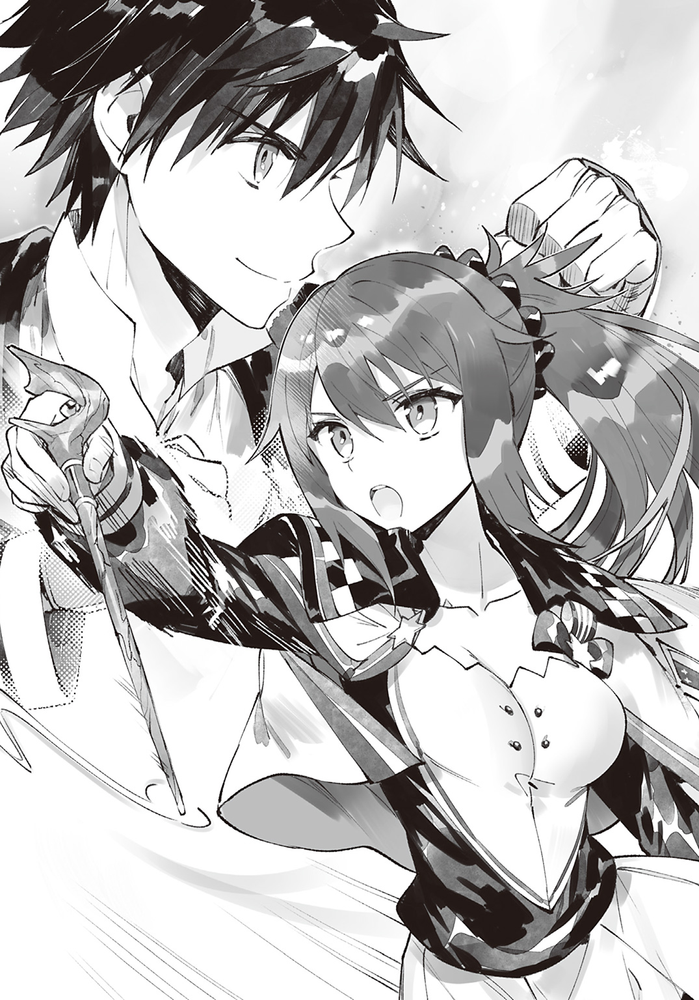
「試合終了！ この勝負、アッシュ・アークヴァルドの勝ち！」
と叫んだ。
「フェルミナさん、どうしちゃったんですか？ 俺、なにもしてないんですけど......」
「なにを言ってるの？ なにもしてないどころか、いまのはあなたの作戦勝ちじゃない」
「作戦勝ち？」
俺、作戦なんて立てたっけ？
「あなたは火焰弾を消すことで、フェルミナさんを焦らせた。焦ったフェルミナさんは、火焰魔神を使うのに、必要以上に魔力をこめた。その結果、魔力を使い果たして気を失ったのよ」
なるほど。傍目にはそういうふうに見えたのか。
「この歳で火焰魔神を使うフェルミナさんも異常だけど、それを打ち消すあなたはもっと異常だわ。もちろん、良い意味でね」
エリーナ先生が俺の勝利を称えてくれる。
見ると、フェルミナさんも満足そうな笑みを浮かべていた。全力を出し切ったあとみたいな、清々しい笑みだ。
フェルミナさんにとって、この戦いは悔いのない試合だったのだろう。
俺としても、かっこいい魔法が見られて大満足だ！
俺の表情が変わったのを見て、エリーナ先生が満足げに笑う。
「それじゃ、あとはよろしく頼むわね」
そう言い残し、エリーナ先生は闘技場をあとにした。
よろしく頼むって、フェルミナさんのことだよな？ このままじゃ風邪を引いてしまうし、保健室につれてってやらないとな！
俺はフェルミナさんを抱きかかえ、闘技場をあとにするのであった。
第四幕 魔法使いの弟子です
昇級試験を終えて五日目の朝。
クラスメイトはそわそわしながら先生が来るのを待っていた。
「あたし、また下級クラスかなぁ」
ニーナさんがため息まじりに話しかけてくる。
このあと先生の口から昇級試験の結果が発表されるのだ。それを受け、各自新たなクラスへ移動するのである。
「ノワールさんには負けたけど、ニーナさんは頑張っただろ？ 今回がだめだったとしても、次はいけるって！」
ニーナさんは微笑した。
「励ましてくれてありがと。あたしが頑張れたのはアッシュくんのおかげだよっ」
そう言ってもらえると応援したかいがある！
ノワールさんには負けたけど、ニーナさんは恐怖心を克服したのだ。つまり、精神的に成長したってことだ。
精神的な成長は魔力の増幅につながる――。ニーナさんは強敵との真剣勝負を経て、大きな成長を遂げたのだ。
俺はそうやって成長できるニーナさんが羨ましかった。
というのも、フェルミナさんを保健室につれてったあと、寮に戻っておしりを確認したのだ。もちろん俺におしりを見る趣味があるわけじゃない。
魔力斑の有無を確認したのである。
魔力が宿っていたら、おしりに魔力斑が浮かんでるはずだからな。
ま、浮かんでなかったんだけどさ。
フェルミナさんとの真剣勝負で精神的に成長できたかどうかはわからないけど、魔力の獲得には至らなかったってわけだ。
しかし俺の学生生活は始まったばかり！
上級クラスに昇格し、将来有望な魔法使いと研鑽を重ね、魔法使いになってみせる！
そんなわけで、俺もそわそわしているのだった。
「ところで、アッシュくんは筆記試験どうだった？ あのあと自己採点した？」
「してないよ」
全問正解した自信があるしな。
ただ、出題の意図――状況判断力を見極めるという目的に気づけなかったのが引っかかる。そこで減点されるかどうかに、俺の人生はかかっていると言っても過言ではないのだ。
「そっかぁ。実はあたしも怖くてできなかったんだ。あっ、でもね、筆記試験がだめだめでも、アッシュくんなら中級クラス入りは間違いないよ！ だってあのフェルミナさんに勝ったんだもんっ！」
ニーナさんは嬉しそうに語る。
俺の勝利を自分のことのように喜んでくれているのだ。
ほんと、いい友達に恵まれたよ。
結果次第では別々のクラスになるけど、ずっと仲良くしてくれると嬉しいな。
「勝てたのも嬉しいけどさ、それと同じくらい火焰魔神を見ることができてよかったよ」
あれぞまさに魔法って感じだ。
俺もいつか、ど派手な魔法を放ちたいものである。
「火焰魔神を使えるフェルミナさんもすごいけど、それに勝つアッシュくんはもっとすごいよ！」
「そうかな？ フェルミナさんのほうがすごいと思うけど」
フェルミナさんに勝ったとはいえ、俺は一度も魔法を使っていないのだ。
この学院は優秀な魔法使いの養成施設なわけだし、本当に評価されるべきは、すごい魔法を使ったフェルミナさんのほうだと思う。
フェルミナさんみたいな魔法使いになるためにも、魔力獲得の手がかりを見つけなきゃいけないな。
などと。
あらためて決意を固めたところで、先生がやってきた。
「みんな、おはよう。さっそくだが、昇級試験の結果を発表するぞ。出席番号順に取りに来い。まずはアッシュ！」
「はい！」
ついに来たか！
どきどきと高鳴る心臓を抑えつつ、書類をもらって席につく。
フェルミナさんに勝ったからか、クラスメイトの視線は俺に釘付けだった。
みんなの視線が集まるなか、俺は二つ折りにされた書類を開く。
「ええと、なになに......？」
筆記試験は一〇〇点。
実技試験は一〇〇点。
結果は――
「上級クラスだ！」
嬉しさのあまり思わず叫んでしまった。
だけど上級クラスになれたこと以上に、クラスのみんなが『おめでとうアッシュくん！』と祝福してくれたことのほうが嬉しかった。
◆
結果発表のあと。
俺は上級クラスのある西塔三階を訪れていた。
今回の昇級試験で下級から上級に昇級したのは俺だけらしい。
せっかく仲良くなれたクラスメイトと別れることになり、俺は寂しい気持ちになっていた。
でも、校舎は変わってしまったけど、一生会えないってわけじゃないしな！
なんなら毎日師匠に会えるくらいの脚力があるし、会おうと思えばいつでもニーナさんたちに会えるのだ！
そうやって気分を盛り上げている間に、今日からお世話になる教室にたどりつく。
「おおっ、アッシュくん！」
教室に入った瞬間、でかい声に出迎えられた。
フェルミナさんだ。
「上級クラスを維持できたんだなっ！」
下級の俺に負けたから、降格したかもと思っていた。
フェルミナさんは得意そうに胸を張る。
「ほら、こないだ言ったでしょ？ あたしには二つの自慢があるんだよっ！」
二つの自慢って、食堂で言ってたあれのことか。
「一つは『いままで負けたことがない』だったよな？」
「うんっ。まあ、アッシュくんに負けちゃったんだけどね」
もちろん恨みっこなしって約束したから気にしなくていいけどね、とフェルミナさんはにこにこ笑う。
「それで、あと一つの自慢って？」
「あたし、賢いのですよ！」
自分で言うのは恥ずかしかったのか、フェルミナさんは照れくさそうにはにかんでいる。
なるほどね。
要するに実技試験の結果を、筆記試験で補ったってわけか。
それに負けたとはいえ炎系統の最上級魔法の一つである『火焰魔神』を使ったわけだしな。それを評価されての現状維持となったのだろう。
「ちなみに九二点だよっ！ アッシュくんはどうだった？」
「一〇〇点だよ」
「えっ、一〇〇点!? あの問題で一〇〇点採ったの!? うっひゃぁ～、また負けちゃったよ！ これはもうライバル決定だねっ！ 次は負けないんだから！」
ライバル！
なんていい響きなんだ......！
お互いに競いあって、切磋琢磨して、ともに高みを目指す存在――ライバル。
フェルミナさんがライバルになってくれるなら、俺は強くなれそうだ！
早く魔力を手に入れてスタートラインに立たないとな！
「もちろん実技でも負けないよっ。もっともっと特訓して、卒業までにアッシュくんを倒してみせるんだから！」
フェルミナさんはぐっと拳を握りしめ、やる気を滾らせている。
特訓かー。上級クラスの魔法使いと特訓すれば、魔力を手に入れるコツとか学べるかもな。
「俺もその特訓につきあっていい？」
「もちろん大歓迎だよっ！ アッシュくんと勝負して、あたしの魔力は上がったからねっ！ アッシュくんと特訓すれば、もっともっと強くなれるよ！」
魔力と精神力は密接に関わっている。
フェルミナさんは強敵に立ち向かったことで精神力を鍛えることに成功し、魔力が上がったのだろう。
てことは、圧倒的な強者と戦うことができれば、俺にも魔力が宿るかもしれないってことか。
けどなぁ。
世界最強って、あのガイコツだったんだろ？
あいつより強い奴って、この世にいるのか？
......わんさかいそうな気がするな。
だって、殴ったら粉々になるような奴だしさ。
あれが世界最強だったなんて、いまでも信じられない。
休みの日にでも俺より強い奴を探してみるとするか。
「あっ、そうだ。連絡先交換しようよっ！」
フェルミナさんがポケットから携帯電話を取り出した。
「はい、触って！ あと、アッシュくんのケータイにも触らせて？」
ケータイに触れて魔力を流しこむことで連絡先を登録し、いつでも会話ができるようになるのだ。
「ごめん。俺、ケータイ持ってないんだ」
「あらら、残念っ。アッシュくんと電話したかったんだけどなぁ......。それにしてもケータイ持ってないって、いまどき珍しいね」
「俺もほしいとは思ってるんだけどな」
お金ならある。
世界を救った報酬という名の生活費を、フィリップ学院長に毎月もらっているのだ。
だけど俺には肝心の魔力がない。
携帯電話は、魔力がないと起動させることすらできないのである。
「ケータイは大魔法使いになったら買うよ」
「ケータイってそんな特別なものだっけ!? うわぁ、中学校の入学祝いに買ってもらったのがなんだか恥ずかしいよ......」
フェルミナさんがケータイをポケットにしまっていると、クラスメイトが集まってきた。
「おっ、なんだなんだ？ 連絡先交換してるのか？」
「ほんとにっ？ 私も交換したーい！」
このタイミングで交換するってことは、中級クラスから昇級してきたってことか。
新たなクラスメイトとの親睦を深めるため、アドレス交換会が開かれる。
ケータイを持ってない俺は疎外感を抱き、輪のなかからそっと離れた。
......あれは。
窓際最後尾の席に見知った人物を見つけ、俺はそっちへ向かう。
「ノワールさんも上級を維持できたんだな」
窓の外を見ていたノワールさんは、きょとんとした顔を向けてくる。
「誰かしら？」
「アッシュだよ」
「知らないひとだわ」
「ほら、実技試験のときニーナさんのとなりに座ってただろ？」
「あの娘を焚きつけたひとね」
焚きつけたっていうか、奮い立たせたんだけどね。
「そう、そのひとだよ」
「そのひとが、私になんの用かしら？」
「ちょっと話をしたいと思ってさ。ノワールさんは氷系統の魔法が得意なんだよな？」
「得意というわけではないわ」
「ほかの系統のほうが得意だったりするのか？」
「ほかの系統は苦手よ」
「じゃあ、やっぱり氷系統が得意なんじゃないのか？」
「得意というわけではないわ」
うーん。よくわからないひとだな。
まあ得意不得意はさておき、ノワールさんが優秀な魔法使いってことは間違いない。なにせ闘技場全体を凍りつかせるほどの魔力を持ってるわけだしな。
「ノワールさんに質問なんだけど、魔力を高めるために普段から心がけてることとかある？」
「ないわ」
そっかー。ないかー。
なんて、すぐに諦めると思ったら大間違いだぜ！
諦めの悪さに関しては自信があるんだからな！
「どんな些細なことでもいいんだ。たとえば......そう、日課とかでもいいからさ！」
自画自賛になるけど、『日課』っていうのはなかなかいい質問だと思う。
手がかりはどこに転がっているかわからない。日常のなかに転がっているかもしれないのだ。
上級クラスの生徒が常日頃からやってることをまねすれば、俺にも魔力が宿るかもしれないのである！
「しいて言えば、『外カリッ、中もふっ♪ もっちりもちもちほっぺがとろける夢のめろめろメロンパン』を食べることよ」
それってニーナさんとの応酬で言ってた、購買にあるメロンパンのことだよな？ だったら手に入れるのは簡単だ。
「教えてくれて助かるよっ。さっそく今日から食べて――」
「噓よ」
「いや、でもさっき――」
「噓よ」
ノワールさんは『噓よ』と連呼する。
そういえば、ノワールさんってメロンパンのために上級クラスを死守してるんだっけ。ならいまのはノワールさんにとって失言だったってことだ。
「わかった。食べるのはやめておくよ」
今日のところは、だけどね。
べつに一日一個しか取り扱ってないわけでもないだろうし、そのうち食べてみるつもりだ。
「話のわかるひとは嫌いではないわ」
無表情ながら、どことなく上機嫌になるノワールさん。
「はーい。みんな席につきなさい。どこに座るかは早い者勝ちよ～！」
と、エリーナ先生がやってきた。
ちょうどノワールさんの前の席が空いていたので、俺はそこに腰かける。
「お互い教科書忘れたら見せ合いっこしようねっ」
フェルミナさんがとなりの席から話しかけてきた。
ちなみに俺の正面には金髪の女子が座っている。顔は見えないけど、上級クラスにいるんだから、優秀な魔法使いであることは間違いない。
まわりを見渡せばエリート魔法使いが座ってるし、ここは魔法のことを学ぶには最高の環境だな！
「さて。みんなには自己紹介をしてもらうわ。廊下側の最前列からお願いね」
エリーナ先生の指示を受け、自己紹介が始まる。
自己紹介は着々と進んでいき、俺の前に座っていた女の子の番になる。
「エファ・エファエルっす！」
ものすごく聞き取りやすい声だった。
ていうかエファさんって、ニーナさんが言ってたあのエファさん？
てことはこの娘がフェルミナさんとノワールさんと肩を並べる、この学院の三強か。
三強に挟まれるなんて、最高についてるな！
この席なら、いろいろとためになる話が聞けそうだ！
「出身はネムネシアっす！ ここには自分探しのために通ってるんすよ！ みんな仲良くしてくれると嬉しいっす！ 以上、よろしく頼むっす！」
あれ？ 得意系統は言わないのか？
ほかの生徒は自分の系統を紹介してたんだけど。
それに通学理由が『自分探しのため』ってのも気になるぞ。
ともあれ、俺の番がまわってきたので簡単に自己紹介をする。
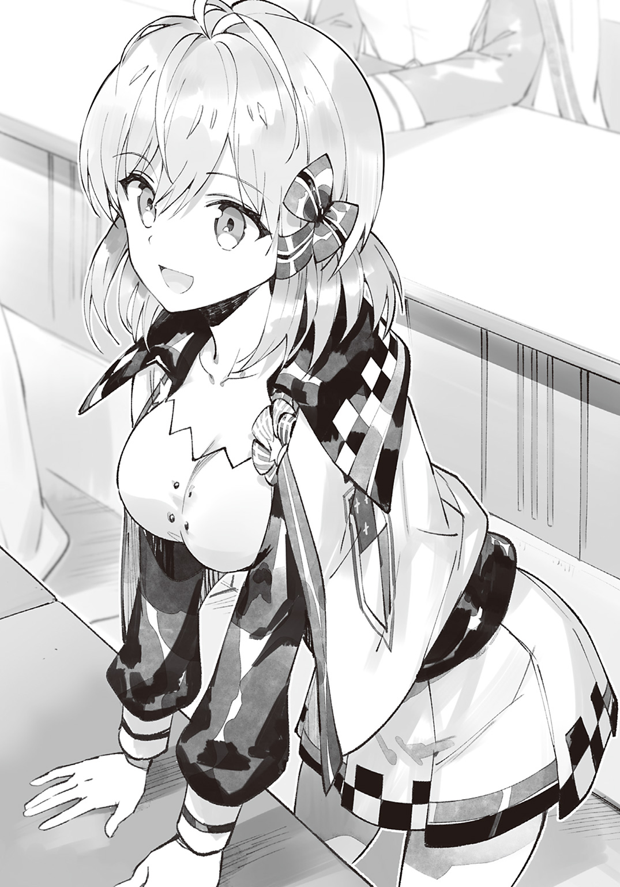
「アッシュ・アークヴァルドです。風系統が得意です」
ほんとは得意系統とかないけど、編入試験のときに風系統が得意って言ってしまったしな。フェルミナさんも俺を風系統の魔法使いだと勘違いしたままだし、しばらくはこれで押し通すとするか。
ま、べつにばれても問題ないんだけどな。
「よろしくお願いします！」
かくして俺の上級クラス生活が幕を開けたのだった。
◆
優秀な魔法使いの日課をまねすれば魔力が宿るかもしれない。
そんな期待を胸に秘め、俺はクラスメイトに『日課』を訊いてまわった。
「日課？ そうだな......難しい本を読むことかな。一冊読み終わるたびに新しい扉が開かれる気がするんだ」
「お花に水をやることね！ 話しかけると綺麗に育つの！ 今度見せてあげよっかっ？」
「一日五食！ お肉山盛りだよ！ 今度一緒に食べに行こっ！ 入学＆昇級祝いだよ！」
「お父さんと毎日電話してるわ。そうしないと電話が鳴り止まなくなっちゃうもん。お父さん、ほんとに心配性だから......」
「授業の予習復習は欠かさないね。特に復習は大事だよ！」
「毎日柔軟体操してるよ！ ほら見て、こんなに身体軟らかい！」
「日記をつけてるわ」
「『外カリッ、中もふっ♪ もっちりもちもちほっぺがとろける夢のめろめろメロンパン』を食べ......噓よ」
......等々。
上級クラスだし信じられないくらい高度な日課をこなしてるかもと身構えてたけど、すごく普通だった。
これなら俺にもできそうだ。
花に水やりしたり日記をつけたりしたところで魔力は宿らないんじゃないかと思うけど......でも、やってみないとわからないしな！ 次の休日にでも日記帳と花を買うとするか！
そうやって休み時間になるたびに訊きだした日課をノートにまとめ、予定を立てている間に放課後になった。
あと訊いてないのは......
「エファさんに質問があるんだけど」
帰り支度をしていたエファさんに声をかけると、人懐っこい笑みを向けてきた。
「はいはいっ、なんっすか？」
「エファさんって、毎日してることとかある？」
「あはっ、やっとわたしの番がまわってきたんすねっ」
エファさんは嬉しそうに笑っている。
「いやぁ～、いつ質問されるのかな～って、ずっとそわそわしてたんすよっ！ 男の子に話しかけられることって滅多にないっすからねっ。質問って日課っすよね？ それはずばり『自分探し』っす！」
自分探しの旅ってのは聞いたことがあるけど、自分探しが日課のひとははじめて見たな。
「ここに通ってる理由も自分探しのためとか言ってたな。それってつまり、この学院で将来の夢を見つけたいとか、そういうことか？」
エファさんは首を振る。
「わたしは卒業したら地元に就職するつもりっす。それがわたしの将来の夢っすよ」
「でもネムネシアってかなりの田舎町じゃなかったっけ？ 余計なお世話だろうけど、エファさんならもっといいところに就職できるんじゃない？」
「よく言われるっす。でも、わたしは家族が大好きっすからねっ！ 一日でも早く実家に帰りたいんすよ！」
「それなら地元の学校に入学すればよかったんじゃないか？」
ネムネシアは、エルシュタニアから飛空艇で一日以上かかるところにある。
家族と離れたくないなら、地元の学校に通えばいいのに......。
「わたしは特待生なんすよ。学費免除かつ生活費を支給するからうちの学院に来ないかって、学院長に誘われたんす」
「学院長に？ すごいな......」
あのフィリップ学院長からじきじきに誘いを受けるなんてすごすぎる！
きっとエファさんの魔法使いとしての才能を見抜き、勧誘したんだろうな。
「国王様の誘いを断るのは失礼だってお母さんに言われて、この学院に通うことになったんす。でも、わたしにはここでやりたいこととかないんすよ......」
なるほどね。
つまり自分探しっていうのは、在学中に自分がやりたいことを――在学中の目標を探すって意味か。
「なら魔法の訓練をするのはどうだ？ 苦手な系統の魔法を卒業までに使えるようにするとかさ」
「わたしには苦手な系統がないんすよ」
「......それって、万能の魔力を持ってるってことか？」
「そういうことっす」
極々希に、あらゆる精霊に好まれる魔力を持って生まれる魔法使いが存在する。
有名どころだと、フィリップ学院長がそうだ。
つまりエファさんは、やろうと思えばどんな魔法でも使いこなせるようになるってわけだ。
......正直、俺はエファさんがめちゃくちゃ羨ましかった。
でも、他人を羨ましがってるだけじゃ成長なんてできない。
それに、俺にはどんな魔力が宿るかわからないのだ。
もしかすると万能の魔力が宿るかもしれない。
その日を迎えるためにも、いまは俺にできることをしないとな！
「とにかく、魔法絡みの目標は持てないってわけか」
「そうなるっすね」
「じゃあ魔法絡みは諦めるとして......目標ならなんでもいいのか？」
「そうっすね......。なるべく達成困難な目標がいいっすね。そっちのほうが、達成したときの喜びが大きそうっすからね」
達成困難な目標か......。
「たとえば、卒業までに大金を稼ぐ、とかは？」
「お母さんに『学生の本分は勉強だ』って叱られちゃうっす」
「そっか。しっかりした母親だな。なら、卒業までに恋人を作る、とかは？」
「はじめての恋人って一生に関わることっすからね。期限を決めて作るようなものじゃないと思うっす」
「そっか。エファさんはまじめなんだな。だったら――」
と、まあ。
そんな感じで俺は目標を提案するが、エファさんのお眼鏡に適うものは見つからなかった。
そうこうしているうちに日が暮れる。
教室には、俺とエファさんしか残っていない。
「ちょっと話しすぎたな。そろそろ帰る？」
「そっすね。いろいろ提案してくれて助かったっすよ。......ところでずっと気になってたんすけど、アッシュくんはどうして日課を訊いてまわってたんすか？」
「優秀な魔法使いが普段していることをまねすれば、俺にも魔力が宿るかもと思ってな」
エファさんが不思議そうに首を傾げた。
「まるで魔力がないみたいな言い方っすね」
「実際魔力は宿ってないしな」
俺はありのままを告げた。おおっぴらに言うつもりはないけど、べつに隠すようなことでもないしな。
一緒に特訓することになるし、フェルミナさんにも近いうちに武闘家だと打ち明ける予定だ。まあ、信じてもらえるかはわからないけどな。
「魔力がないって、魔法が使えないってことっすよね。じゃあフェルミナさんにはどうやって勝ったんすか？」
「物理攻撃だ」
「物理攻撃!? 物理攻撃ってパンチとかキックっすか!?」
「そう。その物理攻撃だ」
まあ、パンチもキックもしてないんだけどな。
正拳突きはしたけど、あれは風を飛ばしただけだしさ。
しかも決め手はフェルミナさんの魔力切れだ。
とはいえ、『息を吹いて火焰魔神を消し飛ばした』って説明してもエファさんを混乱させるだけだろうし、詳細は伏せておくが。
すでに混乱してるっぽいけどな。
「それ、すごくないっすか!?」
エファさんが叫んだ。
誕生日プレゼントを前にした子どもみたいに目を輝かせている。
どうして喜んでるんだろ。
予想外の反応に、俺のほうが戸惑ってしまう。
「俺の話を信じるのか？」
てっきり疑われると思ったよ。
「アッシュくんはわたしのことを真剣に考えてくれたっすからね。そんなひとが噓をつくとは思えないっす。それに、個人的にもアッシュくんの話が真実であってほしいと思ってるっすよ」
「どうして？」
「それがわたしの目標だからっす！」
「......目標？」
エファさんは力強くうなずいた。
「わたし、卒業までにアッシュくんみたいな武闘家になるっす！ それがわたしの卒業までの目標っす！」
そう言って、エファさんは俺の手を摑んできた。
「アッシュくん！ ――いえ、師匠！ どうかわたしを弟子にしてほしいっす！」
「ともに高みを目指そうぜ！」
雰囲気に流され、俺は反射的に弟子入りを認めてしまうのだった。
◆
エファを弟子にして一週間が過ぎた。
最初は師匠と呼ばれることに抵抗があったし、そもそも俺は魔法使いになるために通学しているのだ。魔法学院で武術の稽古をつけることになり、最初は『俺、なにやってるんだろ』と後悔した。
しかし、エファは良い子だ。
しかも、かなりの努力家だ。
一生懸命なエファを見てると『俺も頑張らないとな』と思えるし、そういう意味では弟子にしてよかったと思っている。
それにエファは優秀な魔法使いだ。
エファの動きのなかに魔力獲得のヒントが隠されているかもしれないのである。
そう考えると、エファが弟子入りしてくれたことはラッキーだったかもしれない。
......まあ。
「やああっ！」
「違う違う。もっと腰を落として」
「こうっすか!? てやああっ！」
「落としすぎ！ それ正座！」
「師匠！ 加減がわからないっす！」
「ちょっと腰を落とすだけでいいんだよ！」
「難しいっす！」
「よく見てろ？ こうだ！」
「こうっすか！」
「そう！ 上手だぞ！」
「嬉しいっす！ ......あっ、でもこの姿勢ってめちゃくちゃ疲れるっすね。そうだっ！ こうすればいいんじゃないっすかね!?」
「屈伸しながら正拳突きするの禁止な。てか、そっちのほうが疲れないか？」
「あっ、言われてみれば疲れてきたっす！ まずはスタミナをつけるところから始めたほうがいいっすね！ やることが増えて嬉しいっす！ なんだか楽しくなってきたっすよ！」
......エファに武術の才能はまったくなかったんだけどな。なんていうか......運動音痴の王様って感じだ。
今日も放課後になってすぐに学院広場で稽古を始めたんだけど、まったく成長していないのだった。
まあ楽しそうにしてるし、エファが満足ならそれでいいんだけどさ。
「師匠！ わたし、師匠みたいになれるっすかね!?」
「それは努力しだいだ」
エファは運動音痴だ。
だからといって、俺みたいになれないと決まったわけじゃない。
「俺は魔法使いになるために努力する。だからエファは、武闘家になれるように頑張るんだ。どっちが先に目標を達成できるか勝負だ！」
魔法使いと武闘家――。
ゴールは違えど、難易度的にはどっこいどっこいだ。
競争心は成長には欠かせないし、互いに競いあうことは良い結果につながるはずだ。
「おっす！ わたし、一日でも早く師匠みたいになれるように頑張るっす！」
ほんと、返事は一人前なんだけどな。
まあ、それはお互い様か。俺も『魔力は気合いで手に入れる！』とか言ってたしな。
「さて。そろそろ日が暮れるし、今日はこのへんで切り上げるか」
「おっす！ 今日もありがとうございましたっす！」
「ああ。また明日な」
「あっ、すみません。明日はちょっと無理っす」
「ん？ なんだ、予定があるのか？」
明日から三連休だ。やることがないと嘆いていたエファだけど、それでも年頃の女の子だ。休日に予定を入れててもおかしくない。
「帰省するんすよ」
帰省って、ネムネシアに帰るつもりなのか？ てっきり友達とショッピングでもするのかと思ってたよ。
「ま、瞬間移動なら移動は一瞬だしな」
「瞬間移動は使えないっす。魔力が足りないっすからね」
「そっか」
まあでも、身体を鍛えれば精神力も強くなるし、そしたら魔力も高まるしな。
武闘家を目指しているうちに瞬間移動が使えるくらいの魔力が手に入るだろう。
「交通機関を使うならネムネシアまで一日はかかるだろ？ それだとゆっくりできないんじゃないか？」
「でも、わたしは家族に会いたいんす！ 妹たちもわたしに会いたがってるらしいっすからね。お姉ちゃんとして、帰省しないわけにはいかないっす！」
エファの家族愛はかなりのものだ。
「そうだっ。師匠もうちに来ないっすか？ もちろん忙しいならいいんすけど......」
エファが期待するような眼差しで見つめてくる。
弟子の期待に応えるのも、師匠の務めだよな。俺も師匠に新しい本を買ってもらったとき、めちゃくちゃ嬉しかったしさ。
「わかった。行くよ」
「ほんとっすか!? さっすが師匠、話がわかるひとっすね！」
エファは本当に嬉しそうだ。
「やあやあ、おふたりさん。今日も特訓かい？ 精が出るねー！」
と、フェルミナさんが歩み寄ってくる。
「ああ、フェルミナさん。どうしたんだ、こんなところで？」
フェルミナさんは拗ねたように頰を膨らませた。
「忘れちゃったの？ ほら、今日は一緒に夕飯を食べようって約束してたでしょ？」
「そうだったな」
訓練に集中しすぎて、すっかり忘れてた。
「それ、わたしもご一緒していいっすか？ まだ明日の予定とか話してないっすからね」
「明日どこかにお出かけするの？」
「わたしの家族に師匠を紹介するんすよ」
「結婚するの!?」
フェルミナさんは度肝を抜かれたみたいに驚いている。
驚いたのはこっちだよ。でもまあ、たしかにいまの言い方だと勘違いされてもおかしくないよな。
「明日の帰省に師匠をお誘いしたんすよ。ひとり旅よりふたり旅のほうが楽しいっすからね」
「なるほど！ そういうことだったんだね！」
「そういうことだったんすよ！」
「そういうことなら、あたしもお邪魔していいかな？」
「そういうことなら、大歓迎っす！」
あれよあれよという間に話がまとまる。
ふたりとも細かいことは気にしない性格なんだろうな。それにふたりは一年のときから同じクラスみたいだし、それなりに仲が良かったのだろう。
なにはともあれ、俺はふたりと旅行することになったのだった。
◆
三連休を明日に控えた日の夜。
女子寮の一室にて、ノワールは教科書を読んでいた。
先日行われた筆記試験、ノワールは四点だったのだ。
実技試験で挽回したものの、下手すれば降格するところだった。そうなると東塔行きになり、西塔購買の大人気商品『外カリッ、中もふっ♪ もっちりもちもちほっぺがとろける夢のめろめろメロンパン』が手に入らなくなってしまう。
メロンパンを食べるのは、ノワールにとって唯一と言える至福の時だ。
幸せな一時を守るため、ノワールは勉強しているのだった。
「賢くなりたいわ」
ノワールは切実そうにつぶやいた。
ノワールの魔力は強者揃いのエルシュタット魔法学院のなかでもずば抜けて高い。
さらに万能の魔力を持っているのだ。
本来ならば、ありとあらゆる魔法を使いこなすことだってできる。
だが、賢さが足りないのだ。
そのため片手で数えきれるだけのルーンしか記憶することができないのだった。
「氷系統以外のルーンもマスターしたいわ」
氷系統最強だと称されることが多々あるが、べつに氷系統が得意というわけではない。
なるべく多くのルーンを記憶するべく、シンプルな形のものが多い氷系統に目をつけたのだ。
圧倒的な魔力を持っているため下級魔法でも他の生徒の全力に匹敵するほどの威力を誇るが、それは実技試験でしか評価されない項目だ。
余裕を持って上級クラスを維持するためにも、次の昇級試験までにあと五つはルーンを記憶したいところである。
「......頭が痛いわ。吐き気もするし、胃も痛くなってきたわ」
脳を酷使しすぎて全身が悲鳴を上げている。
集中力も切れてきたし、今日のところは寝たほうがよさそうだ。
そうと決めたノワールはベッドに潜りこむ。
と、そのとき。
テーブルに置いていた携帯電話が振動した。
「......」
ノワールは憂鬱な気分になる。
これが遊びの誘いだったら嬉しいが、ノワールに友達はひとりもいない。
ノワールの携帯電話には、たったひとり――老人の連絡先しか登録されていないのだ。
「......なにかしら？」
ため息まじりに応答すると、電話口から偉そうな声が聞こえてくる。
『実験体００１号――ノワールよ。私だ、リングラントだ。魔力は充分に溜まったか？』
威圧的な問いかけに、ノワールは肯定の返事をする。
ノワールは改造人間だ。
魔力斑が浮かばず、魔力を持たないという理由で親に捨てられ、路頭に迷っていたところをリングラントに拾われたのである。
とはいえ、リングラントは親切心からノワールを保護したわけではない。
彼には『世界最強の魔法使い』を生み出すという夢があるのだ。
そのためには魔力回路の人体移植がどうしても必要だったが――人体実験は倫理的に問題があるとして、リングラントは研究所から追放されてしまったのだ。
普通ならそこで諦めるところだが――ノワールはリングラントが諦めの悪い男であることを知っている。
その証拠に、リングラントはネムネシア近隣の荒野にこっそりと研究所を設け、ノワールに特別製の魔力回路を移植してしまったのだ。
そうしてノワールは改造人間になった――半径五〇〇メートルにいる人々からちょっとずつではあるものの強制的かつ自動的に魔力を吸い取る身体になったのだ。
その能力を有効活用するべく、ノワールはエルシュタット魔法学院に通うことになったのだ。
なぜなら寮の半径五〇〇メートル圏内には、万能の魔力を持つフィリップがいるのだから。
もっともこの学院にはあらゆる系統の魔法使いがいるため、フィリップに頼らずとも万能の魔力は手に入るが――少しでも質の良い魔力を手に入れるため、ここに通い続けているのだ。
『ついに世界最強の魔法使いが――ゴーレムが完成したのだ！』
真夜中だというのに、リングラントは興奮しきっている。
数年前、リングラントは半永久的に魔力を生み出す魔力回路の開発に成功したのだ。
だが、その魔力回路はあまりに大きかったため、ノワールに移植することはできなかったのである。
そこでリングラントは命令通りに動く巨大な人形――ゴーレムを造ることにした。
口ぶり的に、つい先ほど魔力回路の移植が終わったのだろう。
『ゴーレムは私の人生の集大成だ！ 最高傑作だ！ さっそく力試しをしたいのだ！ だが、そこいらの魔法使いでは相手にならん！』
そこで、とリングラントは声を張り上げる。
『私の初の実験体にして成功例である貴様に相手をしてもらうことにした！ 実験開始は二日後の夕暮れ時だ！ 魔力を温存して私の研究所に来るのだ！』
有無を言わさぬ物言いだ。
だからというわけではないが、ノワールは誘いに応じた。なぜならリングラントは、実験が終わったら自分を追放した研究所の職員に復讐をするつもりなのだから。
復讐をほのめかす発言はたびたび聞いていたし、ゴーレムに襲わせるに違いない。
（そんなことはさせないわ）
リングラントの暴走を止められるのは、事情を知っているノワールだけ。
ゴーレムを倒せるのは、同じく体内に魔力回路を持つノワールだけなのだ。
『ゴーレムは世界最強の魔法使いだ！ 勇者一行など目ではない！ ゴーレムに敵う魔法使いなど、この世にひとりもいないのだッ！』
ノワールの心を見透かすかのように、リングラントはゴーレムの強さを誇るのだった。
第五幕 世界最強の魔法使いです
三連休初日の朝。
「おおっ！ かっけえ！」
飛空艇乗り場を訪れた瞬間、俺のテンションは最高潮に達した。
「師匠、飛空艇を見るのははじめてなんすか？」
飛空艇を見上げる俺を、エファが見上げてくる。
「まあな！ まさかこんなにかっこいいとは思わなかったぜ！」
この世界に飛空艇があるってことは知ってたけど、実物を見るのははじめてなのだ。飛行船みたいなどんぐり型の船を想像してたけど、形的には船艦に近い。
大空に浮かぶ戦艦に、俺の少年心は鷲摑みにされたのだった。
「こんなにでかい船が浮かぶなんて......やっぱり魔法ってすげえ！」
一〇〇〇人は乗ってもだいじょうぶそうな巨大船が浮いてるわけだしな。あらためて魔法のすごさを思い知らされたよ。
ま、正しくは『魔法』で浮いてるわけじゃないけどな。
「これだけでかいってことは、魔力回路もかなりのサイズだよな。見せてもらえるかな？」
俺はエファに視線を落とす。
エファは大きなリュックを背負っていた。エルシュタットで流行ってるおもちゃとか衣服を買って帰ると妹たちが喜ぶらしいのだ。
ぱんぱんに膨らんだリュックが、エファの家族に対する愛の大きさを物語っている。
「どうっすかねぇ。動力源は一般開放されてないんじゃないっすかね？」
「だよな......」
魔力回路は飛空艇の心臓部。そこに魔力を溜めることで、浮遊装置をはじめとする各機関に魔力が流れ、飛空艇は動くのである。
動力源が壊れたら墜落するし、厳重に管理されているはずだ。エファの言う通り、一般開放されてるわけないよな。
「......師匠、そんなに魔力回路に興味あるんすか？」
「ま、それなりにな」
魔王軍が猛威を振るっていた時代、改造人間計画が議論されていたと本に書いてあった。
魔法使いは魔力が高ければ高いほど強いからな。体内に魔力回路を移植すれば、最強の魔法使いが誕生するのだ。
でも実現はしなかった。魔力回路は小さければ小さいほど魔力を溜めることができないため、パワーアップするといってもたかが知れているのだ。
それから五〇年以上過ぎたいま、魔力回路の技術はほとんど進歩していない。大量の魔力を蓄積できる極小の魔力回路など、この世に存在しないのだ。
だからこそ飛空艇の魔力回路は巨大なままなのである。
「......もしかして師匠、魔力回路を移植したい、とか思ってたりするっすか？」
俺の事情を知っているエファがそう考えるのも無理はない。
なにせ俺の身体に魔力回路を埋めこみ、誰かに魔力を流してもらうことができれば、魔法を使えるようになるんだからな。
けど。
「俺に魔力がないとわかって......そのとき一瞬だけ、移植したいと思ったよ。ま、その考えはすぐに消えたけどな」
「師匠の身体は頑丈っすからね。移植しようにも、メスなんて通らないっすよね！ わたしも師匠みたいに強い身体を手に入れたいっす！」
エファが憧れの眼差しを向けてくる。
べつに頑丈だから移植手術を諦めたわけじゃないけどな。
ただ、人体実験は禁忌扱いされてるし、なにより自力で魔力を手に入れたいと考えたのだ。
自分の魔力で魔法を使わないと魔法使いになったとは言えないし、夢を叶えたとは言えないからな。
「ただいまーっ！」
と、フェルミナさんがホットドッグを頰張りながら戻ってくる。お腹が空いたと言い残し、どこかへ歩き去っていたのだ。
俺たちの分も買ってくれたらしく、包み紙にくるまれたホットドッグを手渡される。
「そろそろ搭乗時間っすから、あとで食べるっす！ ふたりとも搭乗券は落としてないっすか？」
「もちろんっ！ これがないと転送されないもんね！ アッシュくんは持ってる？」
「ちゃんと持ってるよ。なにせ俺は、この瞬間を楽しみにしてたんだからな！」
俺たちは互いに搭乗券を見せあう。
そこには同じ番号が記されていた。
部屋番号だ。
急な予約だったため、三人で一部屋しか取れなかったのである。
「アッシュくん、あたしたちと寝るのがそんなに楽しみなの？」
フェルミナさんが上目遣いに見つめてくる。
「違う違う。俺が楽しみにしてるのは転送魔法だよ」
搭乗券には転送魔法が組みこまれているのだ。
搭乗時間になると飛空艇から光が降りそそぎ、搭乗者を部屋へ転送するのである。
つまり、瞬間移動を体験できるってわけだ！
「転送魔法がそんなに楽しみなの？」
「魔法を体験できるなんて滅多にできることじゃないからね！ 楽しみすぎて昨日はほとんど眠れなかったよ！」
ハイテンションな俺に、フェルミナさんが優しくほほ笑む。
「そういえばアッシュくん、武闘家だったね」
昨日、俺はフェルミナさんにあらためて魔力がないことを伝えた。すると『アッシュくんは噓をつくようなひとじゃないもんね。あんなに強くなるなんて、本当に頑張ったんだねっ』と信じてくれたのだ。
友達に信じてもらえて、俺はめちゃくちゃ嬉しかったのだった。
「あっ、搭乗時間になったっすよ！」
時間を知らせるサイレンが鳴り響き、俺の心臓がいまだかつてないほど荒ぶる。
「な、なんか空気が震えてないっすか......？」
「言われてみれば震えてるね。どん、どんって音がしてるよ」
「間近で太鼓を叩かれてるみたいっす」
「だいじょうぶ！ それは俺の鼓動だからね！」
「むしろだいじょうぶっすか!?」
「心臓、身体を突き破らない!?」
ますます不安がるふたりだけど、俺の身体に異常はない。ふたりにとっては異常でも、俺にとってはこれが正常なのだから。
「あっ、来た！ 来たよ！」
俺は飛空艇を指さした。
大空に浮かぶ飛空艇からライトが降りそそぎ――
次の瞬間、景色が一変した。
絨毯敷きの部屋――客室に転送されたのだ！
「転送魔法すげえ！」
魔法使いになった気分だよ！
自分で使えたらもっと楽しいんだろうなぁ......！
ああもうっ！ 早く魔法使いになりたいぜ！
「アッシュくん、子どもみたいで可愛いねっ」
「見てるこっちまで楽しくなるっす！」
フェルミナさんとエファがほほ笑ましそうにしている。
嫌な顔ひとつしてないけど......騒がしくするのはなるべく控えたほうがいいよな。
大声出したら窓が割れるかもしれないしさ。
「ところで、ほんとに俺と同室でよかったのか？」
飛空艇がペニロパという町に着くのは明日の朝らしい。そこから列車を乗り継ぎ、昼過ぎにネムネシアに到着する予定になっているのだとか。
なので今夜は三人一部屋で過ごすわけだけど......ふたりは嫌じゃないのかな？
「なにも問題ないっす！」
「あたしも平気だよ。......でも、同じベッドで寝るのはちょっと恥ずかしいかも。すぐそばで寝顔とか見られるわけだしさ」
フェルミナさんが女の子らしい一面を見せてくる。
きっとフェルミナさんは一人っ子なのだろう。
一方、エファは大家族なので雑魚寝に慣れているのだ。
「じゃ、フェルミナさんは床っすね」
けろっとした顔でとんでもないことを吐かすエファ。
「そ、それはおかしくないかな？」
「そっすか？ なら、わたしと師匠が床で寝るっす！ これなら問題ないっすね！」
「問題あるよ！ 罪悪感で眠れないよっ！」
「もぅ......。フェルミナさんはどうしたいんすか？」
わがままな妹をたしなめる姉みたいな態度を取るエファ。
「どうもこうも、俺が床で寝て、ふたりがベッドで寝ればいいんじゃないか？」
「弟子として、師匠ひとりを床で眠らせるわけにはいかないっす！ どこまでもお供するっすよ！」
エファは真顔だ。
俺を慕ってくれるのは嬉しいけど、ちょっと気を遣いすぎだ。
「じゃ、じゃあ、あたしとエファちゃんが床で寝て、アッシュくんがベッドで寝るとかは......どうかな？」
フェルミナさん、いいひとすぎるぞ......！
エファがぽんと手を打つ。
「それは名案っすね！」
「どこがだ！」
俺の罪悪感が半端ないよ！
「なら、みんなで床に寝るっすか？」
「ベッドがもったいないよっ！」
「じゃあみんなでベッドに寝るっす！」
「......そうだね」
飛空艇に乗って早々にへとへとになるフェルミナさんだった。
◆
三連休二日目の昼。
アクシデントに見舞われることなくペニロパに到着した俺たちは、そこで朝食を済ませると、列車に乗りこんだ。エファの案内で列車を乗り継ぎ、フェルミナさんの訴えで駅弁を購入し、お腹を満たしつつ外の景色と雑談を楽しみ、再びフェルミナさんが空腹を訴えていたところ、ついにエファの故郷であるネムネシアにたどりついた。
ネムネシアは西部劇に出てくる町に似ていた。さすがはエルシュタット王国でも一、二を争う田舎町なだけあって殺風景なところだけど、『魔の森』に比べると遙かに都会だ。道行くひとたちは幸せそうな顔をしてるし、ここは住みよい町なのだろう。
「師匠！ フェルミナさん！ ここがわたしの生まれ故郷っす！」
どうっすか、とエファは自慢げに聞いてくる。
「落ち着いたところだな！」
「暮らしやすそうだねっ！」
エファはご満悦だ。
「ここはわたしの庭みたいなものっすからね！ 気になることがあればなんでも聞いてほしいっす！ ......質問はないっすか？」
「エファの家ってここから近いのか？」
質問してほしそうだったので、俺はたずねた。するとエファは嬉しそうに言う。
「歩いて五分っす！ 友達を連れて帰るって連絡しといたっすから、ご馳走を作って待っててくれてるはずっす！」
「やったぁ！ あたしご馳走大好きだよっ！」
「お母さんの料理は美味しいっすからね！ 期待してていいっすよ！ さあ、こっちっす！」
家族との再会が楽しみなのだろう。エファは見るからにうきうきしていた。スキップで道を進み、角を曲がったところで振り向いてくる。
「あれがわたしの家っす！」
三階建ての木造住宅だ。
柵に囲まれた庭には小さなすべり台が置かれ、そのまわりに遊具が転がっている。エファの妹って幼稚園児くらいなのかな？
「ただいまーっ！」
エファが元気よくドアを開けた途端、どたばたと足音が聞こえてきた。
「「「「「おかえりエファおねーちゃん！」」」」」
そしてうり二つな顔立ちの幼女が五人、一斉にエファに飛びかかる。
まさか分身魔法か!?
いつの間にそんなルーンが見つかったんだ!?
などと興奮しかけたが、どうやら五つ子らしかった。それはそれでびっくりだけどね。
「おかえり～、ねーちゃん」
「お、おかえりなさい、エファお姉ちゃん」
五つ子ちゃんの頭を順番に撫でていくエファをほほ笑ましく眺めていたところ、新たな妹が歩み寄ってきた。
エファより二、三歳くらい幼い見た目。ひとりはおてんばそうな印象で、もうひとりは気弱そうな印象の女の子である。
「あらあら、早かったわね」
次に現れたのは恰幅のいい女性だった。どうやらエファの母親らしい。たくさんの子どもを育てているだけあり、たくましそうな印象を受ける。
「お父さんはどこっすか？」
「畑で野菜を採ってるわ」
「じゃあ先に紹介しとくっす！ ししょ......アッシュくんと、フェルミナさんっす！」
エファの家族がじろじろと見てくる。
特におばさんの視線は熱烈だ。
きっと娘が男友達を連れてきたのが珍しいのだろう。
変な男だと思われないようにしないとな！
じゃないと『娘が変な男に騙されてるんじゃないか』って不安にさせるかもしれないしさ。
「まあまあまあ、よく来てくれたわね！ いつも娘がお世話になってます」
お眼鏡に適ったのか、おばさんが親しげにほほ笑んできた。エファの人懐っこい笑みは母親譲りのようだ。
「ほんとお世話になってるんすよ！ 特に......って言ったらフェルミナさんに申し訳ないっすけど、アッシュくんにはお世話になってるっす！」
「ねーちゃんの彼氏？」
おてんばそうな女の子がにやにやしながら言う。
「あら、そうだったの？ じゃあ将来的には家族になるかもしれないのね！」
「そ、そんなんじゃないっすよ！ アッシュくんはわたしの師匠っす！」
エファは頰を赤らめ反論する。
俺と一緒のベッドで寝るのは恥じらわないのに、家族に茶化されるのは恥ずかしいんだな。
「なんだか美味しそうな匂いがするね！」
フェルミナさんは空気が読めない。
けど、たしかに美味しそうな匂いがするな。
「エファがお友達を連れてくるって言うから、今日はご馳走を作ったのよ。もうできてるから、温かいうちにいただきましょ！ シルシィ、お父さんを呼んできてちょうだい」
「はーい」
「あなたたちは手を洗ってらっしゃい。さっきまで泥遊びをしてたでしょ」
「「「「「はーい！」」」」」
「リルはお皿を並べてちょうだい」
「う、うん」
娘たちにてきぱきと指示を与えたおばさんは、俺たちに笑みを向ける。
「ふたりはゆっくりしててね。エファ、お友達を部屋に案内してあげなさい」
「わかったっす。ふたりとも、こっちっすよ」
エファの案内で三階へ向かい、角部屋に通される。
「師匠にはここで寝てもらうっす。物置として使ってたから、ちょっと散らかってるっすけど......」
「急に泊まることになったんだ。ありがたく泊まらせてもらうよ」
エファは安心したように吐息をつく。
「フェルミナさんはわたしの部屋で寝てもらうっす。荷物を置いたらご飯にするっすよ！」
「わーいっ！ ご飯だー！」
よほど嬉しかったのか、フェルミナさんの精神年齢ががくっと下がった。そうして無邪気に笑うフェルミナさんとともに、エファは部屋を出ていった。
ひとりきりになった俺はカバンを置き、一息つく。
「......」
にしても物置として使われていただけあって、いろんなものがあるな。
ひとの家だし、じろじろ見るのはよくないけど、そこらじゅうに荷物があるため嫌でも目についてしまうのだ。
本に、服に、リュックに、ぬいぐるみに、それに......
「こ、これって......」
無造作に転がっていた『それ』を見つけ、俺は目を疑った。
わなわなと震えつつ、まじまじと眺め、確信する。
間違いない。これは――
「魔法杖じゃないかっ！」
うおおっ！ 魔法杖っ！ 魔法杖だ！ まさかこんなところで魔法杖と出会えるなんてっ！ これってもう運命としか言いようがないんじゃない!? 運命的な出会いって、きっとこういうことを言うんだろうな！
「......どうしよっかな」
ひとまず正座する。
そして頭を悩ませる。
触るべきか、眺めるだけにするべきか。
その二択で悩んでいるのだ。
俺にとって魔法杖は特別なものだしな。生まれてこのかた触ったことがないし、気軽に手に取れるものではないのだ。
全人類が魔法使いなわけだし、こんなことで悩むのは俺くらいだろう。
でも、たとえば男子なんかは、目の前に好きな女の子の下着が落ちていたら『触るべきか』『見て見ぬふりをするべきか』の二択で葛藤するだろう。
俺はいま、そんな感じの心理状態なのである！
「......触ってみよっかな」
とりあえず四つん這いになる。
餌を前にした犬みたいに、鼻先を魔法杖に近づける。
「ししょー、ご飯っすよ～......って、なにやってんすか？」
エファがぽかんとした顔で俺を見下ろしている。
「魔法杖があったから、びっくりしたんだ」
「魔法杖っすか？ ......あー、これ、わたしが五歳のときに買ってもらった魔法杖っすね」
エファは俺の前に正座すると、当時を懐かしむように魔法杖を手に取った。
こ、こんな簡単に魔法杖を手にするなんて......！
いやまあ、普通のことなんだけどさ。でも、俺にとってはすごいことなのだ。
俺も魔法使いになったら、エファみたいに落ち着いて魔法杖と触れあえるのかなぁ。
「エファの魔法杖ってことは、買い替えたのか？」
こくりとうなずくエファ。
「これ、子供用っすからね。手が大きくなって、握り心地が悪くなったんすよ。それで新しいのを買ってもらったんすけど......」
エファがじぃっと俺の顔を覗きこんできた。
「......そんなに魔法杖が珍しいんすか？」
「まあな。なにせ触ったことがないからな」
エファはきょとんとした。
「触ったことがない？ でも師匠、魔力がないって言ってなかったっすか？」
「言ったぞ」
「魔力がないって、どうやって確かめたんすか？」
「確かめるもなにも、魔力斑が浮かばなかった......」
って、ちょっと待て。
そういえば師匠が言ってたな。魔法の才能が壊滅的だと、魔力斑は限りなく薄くなるって。
それってつまり、薄すぎると見落とすこともあるってことだよな？
それに俺は魔力測定を受けたことがない。
魔法杖を使って、魔法を使おうとしたこともないのだ。
つまり――
俺に魔力が宿っていないという証拠は、どこにも存在しないのである！
そうとわかればこうしちゃいられないぞ！
「エファ！」
「なんっすか、師匠！」
「ちょっとこれ、借りてもいいか!? 魔力の有無を確かめたいんだ！」
魔法使いにとっての魔法杖は、侍にとっての刀みたいなものだ。
友達とはいえ、おいそれと貸していいものではない。
俺はそう思ってたけど......
「そういうことなら、その魔法杖は師匠にお譲りするっす！」
エファはあっさりとした口調で言った。
貸すのではなく、譲ると。
「い、いいのか!?」
エファはにこりと笑う。
「もちろんっす。こんなところでほこりをかぶるより、誰かに使ってもらったほうが魔法杖も幸せっすからね」
「エファ......」
なんて優しい弟子なんだ......。
よくできた弟子を持てて、俺は最高に幸せ者だ。
「俺の、魔法杖......」
俺は、そっと魔法杖を手に取った。
つるつるとした柄は、しっかり握らないと滑り落ちてしまいそう。はじめて触れる魔法杖に、目頭が熱くなってくる。
いやぁ、もうほんと......触っただけで泣いちゃうなんて思わなかったよ。
これで魔法が発動したら、嬉しすぎて死んじゃうかもしれないな。
「じゃ、さっそく魔法を使ってくるよ！」
「その前にご飯を食べてほしいっす！ 温かいほうが美味しいっすからね！」
「わかった！ ご飯食べる！」
夢にまで見た魔法杖を手に入れ、俺の精神年齢はがくっと下がるのだった。
◆
美味しいご飯をご馳走になったあと。
俺は五つ子ちゃんに誘われ、庭で遊んでいた。
五つ子ちゃんは、エファにもらった土産のリボンをさっそく身につけている。五つとも色が違うため取り合いになるかもと思ったけど、喧嘩することなく分け合っていた。
顔立ちはそっくりだけど、色の好みは違うのだろう。
そんな五つ子ちゃんとしている遊びというのは――
「ちょっと、これはどーゆうことなのっ？」
「なっとくできるせつめーをしなさいよね！」
「こんなぶすのどこがいいのっ？」
「ちょっと、ぶすってだれのことなの！」
「あなたたちのことよ！ おなじような顔しちゃってさ！」
――おままごとだ。
子どもの遊びって世界共通なんだな。まあ、『五股かけていた男（俺）のもとに恋人たち（五つ子）が押しかけてくる』とかいう超修羅場な設定はどうかと思うけどね。
五つ子ちゃんが楽しいなら、それでいいんだけどさ。
ちなみにエファはリビングで親子水入らずの時間を過ごしていて、フェルミナさんは受験が近いシルシィちゃんに勉強を教えている。
俺は食事を終えてすぐに魔法杖を使おうと思ってたけど、五つ子ちゃんに捕まってしまい、おままごとをすることになったのだった。
一日お世話になるし、おままごとくらい喜んで付き合うけどな！
「落ち着いてください、みなさん。法的に考えてアッシュさんが誰の恋人なのか言いますから、まずは落ち着いてください......」
おままごとに誘われた三女のリルちゃん（弁護士役）が、おどおどしながら仲裁に入る。
「はい、おちつきました！ おちつきましたよ！」
「さあ、はやく言いなさい！」
「いったい、だれがこいびとなのっ？」
「ほーてきに言いなさいよ！」
「こたえによっては、おこるわよ！」
「え、ええっと......」
リルちゃんは涙目だ。
おままごととはいえ五人の妹に詰め寄られるって、ちょっとかわいそうな役回りだな......。気弱な性格っぽいし、なおさらかわいそうになってくる。
「助けてください」
リルちゃんが小声で助けを求めてきた。
助けてあげたいけど、誰を選んでも待っているのは修羅場だしな......。
修羅場を避けるには、俺は五つ子ちゃん全員を幸せにしなくちゃいけないってことだ！
「アッシュは全員のものです、って言ってやってくれよ」
「そ、そんなので納得しますかね？」
「まだ五歳だし、納得してくれるんじゃないか？」
「そ、そうですね。言ってみます」
リルちゃんは、きりっとした顔で妹たちと向きあう。
「ほ、法的に考えて、アッシュさんは全員のものです！」
五つ子ちゃんは、衝撃を受けたようにはっと目を見開いた。
「それは、よそーがいだったわ！」
「だけど、なっとくできたわ！」
「アッシュおにーちゃんは、みんなのものなのね！」
「ほーてきにかんがえて、そうなるわ！」
「ごとーぶんしましょ、ごとーぶん」
五つ子ちゃんは「わぁーっ！」と叫び、俺に襲いかかる。
俺は「うわあああ」と言いつつ背中から倒れてあげる。
五つ子ちゃんは手をチョップの形にすると、
「みぎうでは、わたしのものよ！」
「ひだりあしは、もらったわ！」
「あたまちょーだい、あたま！」
「あーっ！ わたしもあたまほしーのに！ ほしーのにぃ！」
「じゃー、はんぶんこしよっ」
「うんっ！」
「えと、えと......じゃあ、わたしはひだりうでもーらいっ」
とか言いながら、俺の身体にぎこぎことノコを入れる。
「な、なんかすみません......」
申し訳なさそうなリルちゃんに、俺は『気にするな』とアイコンタクトを送るのだった。
そうして五つ子ちゃんと遊んでいる間に日が傾き、エファが歩み寄ってきた。
「そろそろお風呂の時間っす。みんなお家に入るっす」
「えーっ、もっとあそびたいよー！」
リーダー格っぽい娘の言葉に、ほかの四人がうんうんうなずく。
「わがまま言う娘にはおしおきが必要っすねぇ」
エファはにやぁと笑い、両手をわきわき動かした。
「いやー！ おねーちゃんのおしおき、いやー！」
「くすぐったいの、だめなのー！」
「エファおねーちゃんってば、ないても、さけんでも、くすぐるのやめてくれないのー！」
「わたしはあんまりいやじゃないけど、ひとりだけおしおきはいやー！」
「わたしも、いやー！」
五つ子ちゃんは家のなかに駆けこんでいく。
「リルも一緒に入るっすよ。あとがつかえてるっすからね」
「う、うん。わかった。あの......妹たちと遊んでくれて、ありがとうございます」
リルちゃんはぺこりと頭を下げ、その場をあとにした。
......さてと。
みんなを見送ったところで、俺は懐に手を入れる。
そして、スッと懐から魔法杖を取り出した。
「すげえ！ すげえよ！」
なんかもう、これだけで魔法使いっぽいよ！
「さっそく魔法を使うんすか？」
「ああ！ 俺は魔法を使うぞ！ 使うんだ！ ......で、このあたりに広場ってあるか？」
はじめての魔法だし、なるべく広いところで使ったほうが安心だよな。
「だったら打ってつけの場所があるっすよ。わたしも昔はそこで魔法の練習をしてたっす」
「なら、そこに行ってみようぜ」
「りょーかいっす！ こっちっす！」
わくわくしつつ、エファのあとについていく。
「ここっす！」
そこは町外れだった。地平線の向こうまで荒野が広がっている。建物は見当たらず、動物の姿もない。
ここなら安心して魔法を使うことができるぞ！
「どんな魔法を使うんすか？」
エファは興味津々だ。
「まずは系統を確かめてみるよ」
「系統って、七種類っすよね。炎と、土と、水と、氷と、風と、光と、闇――。師匠はどれを使うんすか？」
「そうだな......。まずは風魔法を使ってみるよ」
一応、学院では風系統の魔法使いってことになってるしな。それに風魔法には個人的に思い入れがあるのだ。
魔法じゃなくて物理だったけど、はじめて使ったのはカマイタチだったからな。
「じゃ、行くぞっ！」
指揮者のように魔法杖の先端を空に向ける。
緊張しているからか、手が震えてきた。それをどうにか抑えつつ、精密かつ正確にルーンを描く。
そしてルーンが完成した瞬間、
「やあっ！」
と、魔法杖を振り下ろした。
ザン！！！！！！！！
と、大地が裂けた。
「うわあああ！ すごいっ！ すごいっすよ師匠！ これ、カマイタチっすよね!? 地平線の彼方まで大地を切り裂くって、どんだけ魔力高いんすかっ！ これなら世界最強の魔法使いを名乗っても誰も文句は言えないっすよ！」
エファが尊敬の眼差しを向けてくる。
やめろ！ やめてくれ、エファ！
そんなきらきらした目で俺を見ないでくれ！
「まさに無敵のカマイタチっすね！」
違う！ 違うんだエファ！
たしかにカマイタチには思い入れがあるけど、俺が使ったのはそれじゃないんだ！
飛行魔法なんだよ！
魔法の代表格といえば飛行魔法だし、空を飛べたら嬉しいなって。そう思ってたのになんで大地が裂けるんだ!?
最悪の上を行く結果を前に、俺はがくっと膝をつく。
「ど、どうしたんすか、師匠？ まさか......」
エファがなにかを察したような顔をする。
俺は、力なくうなずいた。
「いまの......魔法じゃない。ただの......物理」
「そっちのほうがすごくないっすか？」
エファは真顔だ。
フォローじゃないのは一目瞭然。エファは本気ですごいと思っているのだろう。
「違うんだ。すごいとか、すごくないとかじゃないんだ。大事なのは、魔法を使ったかどうかなんだよ」
俺は深々とため息をつく。
だけど......空を飛べなかったのは残念だけど、魔力がないって決まったわけじゃないしな。さっそく次のルーンを描くとするか！
って、あれ？
「先端どこだ？」
俺の魔法杖が、柄だけになっていた。
振り下ろしたとき衝撃で吹き飛んじゃったのか？
俺は慌てて足もとを確認する。しかし先端は見つからなかった。
「摩擦熱で燃え尽きたんじゃないっすか？」
燃え尽きたって......俺、そんな勢いで振り下ろしてたのか？
軽く振ったつもりだったんだけど......。
それに唯一残ってる柄の部分も圧縮されて、つまようじみたいになってるし。
そんなに強く握ったつもりはないんだけど......。
緊張してたし、無意識に力をこめてしまったんだろうな。
「ごめんな、エファ。せっかく魔法杖を譲ってくれたのに、つまようじにしちゃって......」
「気にしなくていいっすよ！ すごいものを見せてもらったっすからね！」
そう言ってもらえると気が楽になるよ。
「それで、どうするっすか？」
「なにが？」
「残りの系統を確かめるっすか？ まだ予備はたくさんあるし、実験するなら魔法杖をお譲りするっすけど」
「......いいのか？」
エファはにこりと笑う。
「もちろんっす！ それで、次はどの系統にするんすか？」
「それなんだけどさ。また風系統に挑戦してみるよ」
「なぜっすか？ 師匠、大地を切り裂く前にルーンを完成させてたっすよね？ それで魔法が発動しなかったってことは、風系統の素質はないってことじゃないっすか？」
「テンションが上がりすぎて忘れてたんだけどさ、飛行魔法ってそれなりに魔力が必要だろ？ 俺の魔力はちょっとしかないし、風系統の素質があっても発動しないと思うんだ。だからさ、次は下級魔法を使うことにしたんだよ」
「なるほど！ 風系統の下級魔法というと......カマイタチっすね？」
「ああ、そうだ」
大地を切り裂く破壊力はないけど、俺にとって威力は二の次。発動すれば御の字なのだ。
「じゃ、さっそく予備の魔法杖を持ってくるっす！ ちょっと待っててほしいっすよ」
「悪いな。......あっ、その前にひとつ訊いてもいいか？」
「なんでもお答えするっす」
「地平線の向こうに町とかないよな？」
実験前はこうなるなんて予想していなかったため確認しなかったけど、町があれば大惨事だ。
「町はないっすけど、ずっと向こうに建物があるって聞いたことがあるっす」
えっ？
「建物あるの!?」
エファはこくりとうなずく。
「でも、たぶん廃墟っすよ。この向こうには結界が張られてないっすからね。魔物に襲われるかもしれないのに住居があるとは思えないっす。きっと魔王がいた頃の、騎士団の駐屯地とかじゃないっすかね？」
その可能性が高そうだけど、不安を払拭することはできなかった。
もしかしたら建物ごと家主が真っ二つになってるかもしれないしな。
「この亀裂がどこまで続いてるか見てくるよ」
俺は二〇キロ以上先を見通す視力を持ってるけど、そこでも大地は裂けていた。
つまり、俺の見えないところで建物が真っ二つになってる可能性があるってことだ。
こんな不安を抱えたまま、いつも通りの日常に戻るなんてできっこない。
ましてや実験なんてできるわけがない。
魔力の有無を確かめるためには、まずは落ち着く必要があるのだ。
「りょーかいっす！ じゃ、師匠が確認してるうちに魔法杖を持ってくるっす！」
この状況で笑みを絶やさないエファの精神力に尊敬の念を抱きつつ、俺は地平線の向こうを目指して駆けだしたのだった。
◆
ネムネシア駅のひとつ手前で下車したノワールは半日かけて荒野を歩き、目的地へとたどりついた。
夕日に照らされた荒野にはキューブ型の建物――研究所が佇んでいる。
そして研究所の前には、白衣を纏った老人が立っていた。
リングラントである。
「魔物がうろつく荒野を歩くバカは、世界広しといえど貴様くらいのものだろうな」
「魔力を温存するよう命じられたわ」
「どのみち飛行魔法は使えんだろう」
「......飛行魔法のルーンは複雑だもの」
「あんな簡単なルーンも覚えられんとは、どこまでバカなのだ貴様は。貴様のようなバカとは違って、ゴーレムは賢いのだ！ あらゆる魔法を使いこなせるのだ！ 最上級魔法を永続的に使うことができるのだ！」
なぜならゴーレムには魔力切れがないのだからな、とリングラントは自慢げに笑う。
「ゴーレムが見当たらないわ」
「くくくっ。ゴーレムなら貴様のすぐそばに立っているではないか」
「すぐそばに......？」
リングラントが生み出した特別製の魔力回路は巨大である。それを移植されたということは、少なく見積もってもゴーレムの全長は一〇メートルはあるはずだ。研究所に収まりきる大きさではないし、あたりにはゴーレムを隠せそうな場所はない。
......もしかするとゴーレムはリングラントの空想の産物なのかもしれない。研究に没頭するあまり、見えないものが見えるようになったのかもしれない。
そんなノワールの予想は、次の瞬間に否定される。
「出でよゴーレム！」
グオオオオオオオオオオオオオオオオオオオオオオオオオオオオオオオオオオ！
雄叫びが響き渡り、大気が震える。
どうやらノワールを驚かせるため透明魔法で姿を消していたらしい。リングラントが命じた瞬間、ノワールの目の前に人型の岩石が現れた。
きっと魔力回路は胴体に内蔵されているのだろう。異様なまでに膨れあがった胴体に比べて頭部は小さく、指先はほっそりとしている。
おそらく指先を魔法杖代わりに使うのだろう。一〇本指ということは同時に一〇種の魔法を使いこなせるということだ。
だとするとリングラントが得意気になるのもうなずける。
一〇種類の最上級魔法を同時かつ永続的に使えるということは、すなわち無敵だ。
だからといって、ノワールに逃げるという選択肢はない。
ノワールが逃げれば、リングラントは実験のためゴーレムに町を襲わせるだろう。そして、ゴーレムの強さを確かめたあと、研究所職員に復讐するのだ。
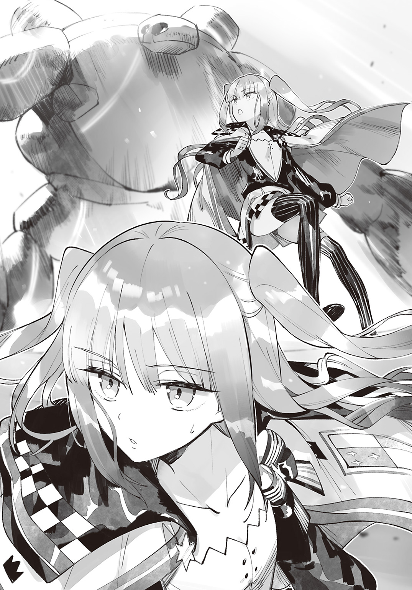
それを阻止するため、ノワールは戦わなければならないのである。
「ときにノワールよ、歩き疲れているのではないか？」
ノワールは素直にうなずいた。
「ならば回復させてやるのだ。全力で戦ってもらわねば、貴様を呼んだ意味がないのでな！ ゴーレムよ、ノワールに万象治癒を使うのだ！」
ゴーレムの人差し指が一瞬震えたように見えた――瞬間、ノワールの体力は全快した。瞬きする間に万象治癒のルーンを完成させたのだ。
その素速く精密な動きに、ノワールはうろたえた。
これからあれと戦うのだと思うと、絶望しか感じない。
「これで準備は整ったな？ では、さっそくゴーレムの最終チェックをするのだ！」
ノワールは魔法杖を構える。
「ゆけ、ゴーレムよ！ まずは防御結界だ！」
リングラントが指示している間に、ノワールは氷槍のルーンを描き、完成させた。
シュッと音を立てて氷槍が放たれる。
しかしゴーレムに触れる前に氷槍は砕けてしまった。
「無駄だ！ 防御結界を使ったゴーレムはあらゆる攻撃を弾くのだ！ さあ、ゴーレムよ！ ノワールに本当の攻撃というものを見せてやれ！ 火焰弾だ！」
ノワールはハッとした。
万象治癒といい、防御結界といい、今回の火焰弾といい、ゴーレムはリングラントの命令がなければ魔法を使うことができないのではないだろうか。
だとすると勝機はある。
ルーンを描く速さこそ驚異的だが、リングラントが指示を出している限り、ノワールは常に先手を打つことができるのだから。
ノワールは先ほどの倍の魔力をこめて氷槍を生み出した。
しかし次の瞬間、氷槍はどろどろと溶けてしまう。
「なぜ......」
答えはすぐにわかった。
じりじりと肌を焼く日差しを受け頭上を見たところ、そこに太陽と見紛うほどの炎弾を――火焰弾を発見したのだ。
「大きすぎるわ......」
規格外の強さを目の当たりにして、ノワールはぞっとする。
このまま戦いを続けてもいたずらに魔力を消耗するだけ。魔力切れのないゴーレムに勝てる見込みはない。
となるとノワールが取るべき策はひとつだけ。
残るすべての魔力をこめ、全力の攻撃を放つのだ。
一撃で勝負を終わらせないと――でないとゴーレムは倒せないのである！
「バカ者！ 大きすぎだ！ それだと私まで焼け死んでしまうではないか！ 空に飛ばすのだ、空に！」
ぼしゅっ！ と音を立て、火焰弾が夕焼け空に吸いこまれていく。
その隙に、ノワールは全魔力をこめて氷槍を生み出した。
「お願い、貫いて......！」
しかし先ほどと同じくゴーレムに触れる前に砕け散ってしまう。同時に、ノワールの希望も粉々に砕け散った。
こんなバケモノに勝てる魔法使いなど、この世に存在するわけがない。
「もう無理だわ」
魔力を使い果たし、生きる気力を失ってしまったノワールは、その場に倒れ伏してしまう。
その姿を見て、リングラントは愉快そうにはしゃぐ。
「ノワールが手も足も出ぬとは！ 強い！ 強すぎるぞゴーレム！ さすがは私の最高傑作！ 人生の集大成だ！ くくくっ！ こうなった以上、ノワールは用済みだ！ さあゴーレムよ、ノワールを蹴散らすのだ！ それが終わったら私を追放した職員どもを消し去り、勇者一行を倒すのだ！ そしてゴーレムこそが世界最強の魔法使いであると全人類に知らしめ」
ザン！！！！！！！！
ゴーレムと研究所が真っ二つになった。
◆
うわぁ、どうしよ......。
俺は荒野を走りながら頭を悩ませていた。
地平線の向こうに、真っ二つになった建物を見つけてしまったのだ。
明らかに俺のしわざだ。
公園で野球してて窓ガラスを割ってしまった子どもって、こういう気分なのかな？
窓ガラスなら謝れば許してもらえそうだけど、俺が壊したのは家だ。謝ったところで許してもらえるとは思えないし、謝る相手が真っ二つになっている怖れもある。
この際、家主に恨まれるのは構わない。
いまはとにかく家主が無事でいてくれればそれでいい！
頼む、生きててくれ！
などと祈っている間に目的地にたどりつく。走ってるときは建物しか目につかなかったけど、家の前には二つの人影があった。
ひとりは白衣を纏ったお爺さん。
そしてもうひとりは――
「あれ？ ノワールさん？ こんなところでなにしてるんだ？」
「帰省よ」
「じゃあこれ、ノワールさんの実家？」
「そうよ」
なんてこった。
俺はクラスメイトの実家を真っ二つにしてしまったのか......。
「ごめん、ノワールさん！ この地割れ、俺のせいなんだ！」
俺は土下座した。
お爺さんにも謝りたかったけど......岩石の前で白目を剝いて「すごいぞー。かっこいいぞー。いけー、ごーれむぅ！」となにかに取り憑かれたように叫んでるし、とても謝れる雰囲気ではない。
お爺さんにはあとでちゃんと謝ろう。
「貴方がやったの？」
ノワールさんは地べたに寝転がったままきょとんとしている。
「本当にごめん！ こんなつもりじゃなかったんだ！ 俺はただ、空を飛ぼうと......そしたら大地が裂けちゃって......」
「意味がわからないわ」
だよね。
「えっと......魔法杖を振ったらカマイタチが発生して、大地が裂けたんだ」
「意味がわからないわ」
そうだよね。わからないよね。
俺だって、いまの説明で理解してもらえるとは思っていない。
だけど、そうとしか言いようがないのだ。
「とにかくごめん！ 許してもらえるとは思ってないけど、家は絶対に弁償するから――」
「許すわ」
「......え？」
「許すわ。だって、貴方は命の恩人だもの」
「俺が......命の恩人？」
死神の間違いじゃなくて？
「貴方は私の恩人よ。そして世界を救ったのよ」
世界を救った？ 世界を壊したの間違いじゃなくて？
どうしてそんな評価を得たのかはわからないけど、ノワールさんの顔は真剣そのものだ。
冗談を言ってるようには見えないし、そもそもノワールさんって冗談を言うタイプじゃないよな。
てことは、俺はノワールさんの命の恩人で世界を救ったってことか？
......どうしてそうなるんだ？
「ちょっと理解が追いつかないんだけど......」
「わかりやすく説明するわ」
そう言って、ノワールさんは淡々と説明してくれた。
「なるほどね......。つまり、あの岩石とお爺さんは悪い奴で、あの建物はべつに壊しても問題なかったってことだね？」
「そういうことよ。研究所が真っ二つになった以上、リングラントは研究を続けることはできないわ」
「ぶぅーん！ ずどどどどど！ いいぞゴーレム、かっこいいぞー！」
「研究所が元通りになっても、研究できそうにないわ」
変わり果てた（以前のリングラントさんがどういうひとかは知らないけどな）リングラントさんを見て、ノワールさんはそう言った。
「にしても、ノワールさんが俺と同じ境遇だったとは思わなかったよ」
説明の際、ノワールさんは生い立ちを語ってくれた。
俺とノワールさんは魔力斑が浮かばず、親に捨てられたところを老人に拾われた。その後、俺は世界最強の武闘家として、ノワールさんは世界最強の魔法使いとして育てられたのだ。
「同じ境遇？ 貴方は魔法使いではないのかしら？」
「俺は魔法使いを目指す武闘家だよ」
「武闘家？ この地割れは、魔法によるものではないの？」
「魔法じゃなくて物理攻撃だよ。俺もノワールさんと似た境遇でさ。育ての親になってくれた師匠のもとで修行してたら、こんなことができるようになったんだ」
「意味がわからないけれど、たしかに貴方と私は境遇が似ているわ」
だけど、とノワールさんは悲しげに目を伏せる。
「貴方と違って、私には友達がいないわ」
「じゃ、俺がはじめての友達だね」
ノワールさんが目をぱちくりさせる。
「......私と友達になってくれるの？」
「ノワールさんが嫌じゃなければだけどね」
「大歓迎だわ」
即答してから、ノワールさんは喜びを嚙みしめるようにじんわり笑う。
「じゃ、エファの家に行こっか。俺、今日はそこに泊まることになってるんだ。フェルミナさんも一緒にいるよ」
「エファとフェルミナというのは、貴方の友達かしら？」
「俺の友達だし、ノワールさんのクラスメイトだよ。俺の前の席に座ってる金髪の女の子がエファで、となりに座ってる赤髪の女の子がフェルミナさんだよ」
「ぴんと来ないわ。私、物覚えが悪いもの。......こんな私を、ふたりは受け入れてくれるかしら？」
「エファとフェルミナさんはめちゃくちゃフレンドリーだし、エファの家族はすごく優しいからね。みんなノワールさんのことを歓迎してくれるよ！ あと......」
ちらっとリングラントさんに視線を向ける。
「ぶぅーん、ずががががががっ。いいぞーっ、かっこいいぞーっ」
リングラントさんは両手に石つぶてを握り、がちゃがちゃとぶつけて遊んでいた。とっても楽しそうだ。
きっとゴーレムが真っ二つになったショックで幼児退行したのだろう。フィリップ学院長に診せればなんとかしてもらえるかな？
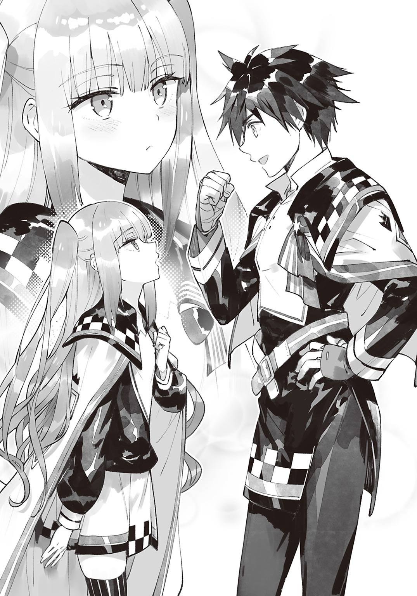
「ここに残したら魔物に襲われるかもしれないし、リングラントさんも町に連れていくよ」
悪巧みをしていたとはいえ放っておくことはできないよな。こうなったのは俺のせいだしさ。
「貴方に任せるわ」
「決まりだね」
話がまとまったところでふたりを担ぎ、俺はエファの家へと引き返す。
ノワールさんがエファエル家に歓迎されたのは......まあ、言うまでもないことだろう。
終 幕 新たなる魔王です
連休明け初日の放課後。
「アッシュくん、学院長が呼んでたわよ。大事な話があるんですって」
エファと訓練するべく教室を出ようとしたところ、エリーナ先生に告げられた。
「大事な話ってなんっすかね？」
「飛び級で三年生にするとかかな？ アッシュくんの実力なら、三年生の上級クラスでも足りないくらいだからねっ」
「だめよ。貴方がいなくなると私が困るわ」
エファとフェルミナさんとノワールさんが口々に言う。
「私を置いていかないでほしいわ」
ノワールさんは本気で寂しそうにしていた。俺の制服を摑み、行かないで、と首をふるふる振っている。
「友達を残して三年生になったりしないよ。とにかく話を聞きに行ってみる。特訓はまたあとでな」
みんなにそう告げ、学院長室へ向かう。
「失礼します！」
学院長室に入ると、そこには筋骨隆々のお爺さんが佇んでいた。
フィリップ学院長だ。
「急に呼びだして悪かったね。まあ座りなさい」
俺は椅子に腰かける。
「ときに、学院での生活には慣れたかね？」
「はい！ 友達もできましたし、授業も面白いですし、毎日が楽しいです！ だけど......」
「魔力は宿らない、か」
俺は力なくうなずく。
ノワールさんをエファエル家のみんなに紹介したあと、俺は全系統の下級魔法を試してみたのだ。
その結果、魔力が宿っていないことが明らかになったのである。
「きみの努力は称賛に値するが、ここは魔法使いのための教育機関だからね。まじめに授業を受けたからといって、魔力が宿る保証はないよ」
それは最初からわかっていたことだ。
魔物と武闘家しかいない『魔の森』で過ごすより、魔法使いに囲まれて過ごしたほうが魔力獲得の手がかりが見つかりやすいだろうと思い、俺は入学を決めたのである。
「ところで、きみはコロンを知っているかい？」
フィリップ学院長はあらたまった口調でたずねてきた。
「もちろん知ってますよ」
コロンさんは勇者一行の最古参――創始者のひとりである。闇系統に精通していて、さらに一流の薬師でもあると本に書いてあった。
「先日、コロンにきみのことを話してね。そしたら、なんとかできるかもしれないと言われたのさ」
「本当ですか!?」
「本当だとも。詳細は直接会って話したいそうでね。ラムニャールという町に住んでいるから、行ってみるといいよ」
「はいっ！ コロンさんを紹介してくださって、本当にありがとうございます！」
「礼を言うのは私のほうさ。話を聞く限り、ゴーレムは大変脅威的だったからね。一度ならず二度までも世界を救ってくれて......本当に、きみには感謝してもしきれないよ」
フィリップ学院長が頭を下げてくる。
「あ、頭を上げてくださいっ。俺、ほんとにたいしたことはしてませんから！ ただ魔法杖を振っただけですから！」
「だとしても、世界を救ってくれたことは事実だからね。この国を統治する者として、きみに褒美を与えないわけにはいかないよ。なにか欲しいものがあれば、遠慮なく言いなさい」
欲しいものか......。
真っ先に思いつくのは『魔力』だけど、それは無理だしな。
お金は《闇の帝王》を倒した報酬として毎月もらってるし、そもそもお金に興味はないし、欲しいものなんて特にない......
いや、ひとつだけあるな。
「俺、魔法杖が欲しいです」
「魔法杖？」
「はい。ちょっとやそっとじゃ壊れない、頑丈なものが欲しいんです」
いまの俺が持っていても意味ないが、あって困るものじゃないしな。
それにコロンさんのもとで魔力が宿るかもしれないしさ。
「わかった。世界一頑丈なものを用意するよ。それと、きみが望むなら飛空艇の搭乗券を手配するが......」
今回も走るのかい？ と学院長がおそるおそるたずねてくる。
「はい。走ったほうが早いですからね」
なるべく早くコロンさんに会いたいのだ。
飛空艇に乗るなんて悠長なことはしていられない！
「ちなみにラムニャールにはいつ頃着く予定だい？」
「そうですね......」
ラムニャールはここから一〇〇〇キロ北上した先にあるし......
「夜明け頃ですね」
「そ、そうかい。めちゃくちゃな脚力だね。......とにかく、コロンには夜明け頃に到着すると伝えておくよ」
「はい！ よろしくお願いします！」
フィリップ学院長はにこりとほほ笑む。
「コロンは気難しい女だけど、きみのことは必ず気に入ってくれるよ。それでは、旅の無事を祈っておくよ」
「はいっ。いろいろとお世話になりました！」
フィリップ学院長に一礼し、部屋をあとにする。
廊下に出ると、ノワールさんが佇んでいた。
「大事な話というのはなんだったのかしら？ ......本当に三年生になるのかしら？」
「明日は欠席するけど、クラスは変わらないよ」
「安心したわ。......だけど、なぜ明日は休むのかしら？」
俺は手短にコロンさんの話をする。
「そんなわけで魔力が宿るかもしれないんだ！ そんなことができるなんて、コロンさんってすごいよなっ」
「貴方の脚力のほうがすごいわ」
ノワールさんとそんな話をしたあと、俺はラムニャールに向けて出発したのであった。
◆
「私が勇者......でありますか？」
エルシュタット魔法騎士団・北方討伐部隊の団長を務めるメルニアは戸惑っていた。
魔物を討伐したあと、エルシュタニア北部の田舎町ナザレフに立ち寄ったところで、町長に大事な話があると告げられ、この屋敷に招かれたのだ。
そして用件をたずねたところ、『あなた様は勇者かもしれません』と告げられたのだった。
「勇者ではありません。勇者かもしれない、です。誰が勇者かは、私にもわからないのです」
「どういう意味でありますか？」
たずねつつ、メルニアはちらりと部下を見る。
一〇人の従士は、一様に困惑している様子だった。
「この世界は、魔王に滅ぼされるかもしれないのです」
町長の時代遅れな発言に、メルニアはあきれてしまう。
「魔王は五〇年以上前に倒されたであります」
勇者一行と魔王の戦いは、全人類が知っている。
町長とて勇者一行の活躍は知っていただろうが――年齢を重ねるうちに記憶が曖昧になってきたのだろう。
つまり、ぼけているのだ。
魔物絡みの相談を受けるのも騎士団の務めだが、これ以上話を聞くのは時間の無駄だ。部下たちは魔物との戦いで疲れているだろうし、そろそろ話を終えるとしよう。
そう思っていたのだが。
「魔王はひとりではないのです」
興味深い一言に、メルニアは息を呑んだ。
「それは......どういう意味でありますか？」
「そのままの意味です。遙か昔、この世界には七人の天才がいました。七人はそれぞれ『炎』『土』『水』『氷』『風』『光』『闇』の魔法を極め、魔法使いの王――すなわち『魔王』として人々に怖れられていたのです」
町長が人差し指を立て、メルニアの瞳をじっと見つめる。
「そのうちのひとり――。闇魔法を極めし魔王こそが、《闇の帝王》だったのです」
闇魔法のなかには、他人の精神を支配する魔法もある。
町長の話を信じるなら、《闇の帝王》は魔物の王として配下を率いていたのではなく、魔法使いとして多くの魔物を操り、魔王軍を結成したということになる。
「しかし、《闇の帝王》は時空の歪みから現れたとの記録が残っているのであります。つまり、魔王は異界から来たのであります」
いいえ、と町長は首を横に振る。
「この世界に強者がいないと悟った魔王たちは、なんらかの力で異世界へ渡ったのです。その影響により、時空の歪みが発生するようになったのです」
メルニアは戸惑いを隠せない。
「そ、そんな話、聞いたことがないであります。いったいあなたは、誰にその話を聞いたのでありますか？」
「ご先祖様です」
「ご、ご先祖様でありますか？」
町長はうなずいた。
「私のご先祖様はとある魔王にこう告げられたのです。『今日より２５０００回目の満月の晩、この地に強者が現れる。私は、その者と戦うため、再びこの地に舞い降りる』と」
その強敵を倒したら、魔王は再び強敵を求めて暴れるかもしれない。
あの《闇の帝王》と同等か、それ以上の力を持つ魔王に暴れられると、今度こそ世界は滅ぶかもしれないのだ。
そう考えた途端、メルニアは急に怖ろしくなってきた。
「その魔王が現れるのは、具体的にいつでありますか？」
町長の話が事実かどうかはわからない。
だが事実である可能性が少しでもあるならば、魔法騎士団の団長として対策を講じないわけにはいかない。
「明日です」
「明日でありますか!? だったらいますぐ援軍を呼ぶであります！」
「それは意味のないことです」
「なぜでありますか？」
「魔王に勝てるのは、予言に出てくる『強者』――すなわち、勇者様だけなのです」
そして、と町長はメルニアを指さした。
「最も勇者である可能性が高いのが、満月の日の前日にこの地を訪れた、あなた様なのです」
町長が頭を下げてきた。
「どうか、どうか魔王を倒し、世界をお救いください......」
町長の話が事実はどうかはわからない。
しかし騎士団長として、魔物に怯える者を見過ごすわけにはいかないのだ。
メルニアは表情を引き締め、凜とした物腰で告げる。
「その依頼、承ったであります。我々のなかの誰かが勇者だというのなら、我々全員で魔王を迎え撃つであります！」
「あ、ありがとうございます......！」
目を潤ませる町長に、メルニアはほほ笑みかける。
「礼など不要であります。当然のことでありますからね。して、その魔王はどの系統を極めているのでありますか？」
魔王は七つのうち、いずれかの系統を極めているらしい。
事前に得意系統を把握できれば、どんな攻撃をしてくるか予想できるし、作戦が立てやすくなる。
「その魔王の名は《土の帝王》――すなわち、土を極めし魔王です」
おまけ短編 ノワールの夢
その日の夜。
学生寮の自室にて、ノワールは問題集とにらめっこしていた。
びっしりと書かれた文字を眺めること小一時間、ノワールはハッと閃いたような顔をして、さらさらとノートに答えを書く。
同じ調子でたっぷりと時間を使い、問題を解いていく。
そうして熟考の末に一〇問の難題を解いたノワールは、どことなく自信ありげな顔をして、解答ページをチェックする。
......全問不正解だった。
「このままだとまずいことになるわ」
ノワールは頭を抱えた。
まさか一問も正解しないとは思わなかったのだ。
この学力で明日の昇級試験に臨むわけにはいかない。
せめて一問だけでも正解しないと。
でないと前回以上にひどい点数になりそうだ。
「今回も氷系統の問題は出るかしら？」
正しくは『氷系統のルーン』だ。七系統のなかで氷系統は単純なルーンが多いため、比較的覚えやすいのである。
氷系統のルーンを発見した人物を挙げよ、といった類の問題が出れば答えようがないが、ルーンが出題されれば点を取ることができる。
実際、前回の昇級試験はそれで突破したのだ。運良く氷系統のルーンを描く問題が続出したため、ぎりぎり二桁台の点数を取ることができたのである。
だが、今回もそうなるとは限らない。
氷系統のルーンを描く問題が出なければ、ノワールは高確率で〇点を叩き出してしまうのだ。そんなことになれば上級クラスから転落することになる。
そうなると大好きな『外カリッ、中もふっ♪ もっちりもちもちほっぺがとろける夢のめろめろメロンパン』を食べることができなくなってしまうのだ。
「食べられなくなるのは、悲しいわ」
メロンパンと出会った日のことは、いまでも鮮明に覚えている。こんなにも美味しいものがこの世にあるとは思いもせず、夢ではないかと頰をつねったほどである。
それからというもの、ノワールは毎日メロンパンのことばかり考えて生きてきた。
購買の大人気商品であるため手に入らない日もあったが、ほとんど毎日欠かさず食べてきたのだ。
これまで生きてきて楽しいことなどなにもなかったノワールにとって、メロンパンを食べているときだけが幸せな時間だったのだ。
幸せを守るためにも、ノワールは賢くならなければならないのである。
「頑張るわ」
ノワールはきりっとした顔をする。
いろいろなルーンを見ると頭がこんがらがってしまうため、歴史の勉強をすることにした。歴史の問題は毎回それなりに出題されるため、しっかりと暗記できればそれなりの点数を取ることができるのだ。
「私は、歴史にすべてを賭けるわ」
ノワールは教科書の一ページ目から目を通していく。ふむふむとうなずきつつ、ぱらぱらとページをめくっていき、出題範囲まで読んだところで一息つく。
「なんとなく......本当に、なんとなくわかった気がするわ。......って、なんとなくではだめよ。しっかり覚えないとだめなのよ」
などとノリツッコミする気力は残っているものの、時間はあまり残されていない。
すでに日付は変わっているし、そろそろ寝なければ明日の試験に遅刻するかもしれないのだ。かといって、いま寝ると高確率で〇点だ。
「まさしくハイリスク・ハイリターンだわ」
......いまさら勉強したところで得られる点数はたかが知れているし、ハイリターンとは言いがたい気もするけど......勉強しないと点が取れないことに変わりはない。
「もうちょっとだけ頑張るわ」
パンパンと頰を叩いて眠気を飛ばし、ノワールは再び歴史の教科書に目を通す。ぱらぱらとページをめくりつつ、ふむふむとうなずき......ふと気づく。
「なぜか新鮮に感じるわ」
先ほど読んだばかりなのに新鮮に感じるということは、なにも覚えていないということだ。記憶力には自信がないが、まさかこの短時間のうちに忘れてしまうとは思わなかった。
「私は、そんなに頭が悪いのかしら？ ......私は、賢くなれないのかしら？」
ノワールはなぜか昔から物覚えが悪かった。物心つく前のことを覚えていないのはもちろん、両親のことすら記憶にないのだ。
一番古い記憶はリングラントの怒っているような顔だったのだ。つまり、リングラントは、ノワールの過去を知っているということである。
そんなわけでリングラントに過去のことを訊いてみたことがあるが、そのたびに『くだらん質問はするな』と話をはぐらかされた。
ノワールが過去を知ろうとすると、リングラントは決まって不機嫌になるのだ。
それでも生い立ちは気になるので、めげずに質問を続けたところ、『森のなかで倒れていたところを保護してやった。頭を怪我していたので記憶喪失になったのだ。物覚えが悪くなったのもそのせいだ』と告げられたのだ。
明らかに面倒臭そうに語っていたし、本当かどうかはわからないが――少なくとも物覚えが悪いというのは事実である。
そしてノワールは物覚えが悪いせいで、リングラントに何度となく怒られてきたのだった。
だけど......怒られるだけなら我慢できるけど、今回は大好きなメロンパンがかかっている。
メロンパンだけは、失うわけにはいかないのだ。
「私は、賢くなりたいわ。賢くなってみせるわ」
ノワールは、バカのままでいるつもりはない。
試験前だけではなく、毎日しっかりと勉強すれば、いつの日か賢くなるはずだ。
「......だけど、勉強はつらいわ。だって楽しくないもの」
できないことを克服するために毎日努力を重ねるなんて、想像するだけでつらくなってくる。
『ああもうっ、この問題すごく難しいよぉ！』
ふいに隣室から声が聞こえてきた。
となりの部屋の主も試験勉強をしているようだ。
壁を隔てているとはいえ、一緒に勉強しているような気がして、ノワールはやる気が湧いてきた。
身近に努力しているひとがいるのだと思うと、心強くなってくるのだ。
だが。
『ねえっ、ここってどうすればいいのっ？』
『えーっと。そこはね、こうすればいいんだよっ！』
『あっ、そっか！ ありがとね！ 助かったよ！』
『気にしないで！ それより、この問題ってどうすればいいのかしらっ！』
『ああ、そこはね――』
難しいことを話しているためなにを言っているのかは理解できなかったが、となりの部屋の主が友達と勉強しているということはわかった。
それを知り、ノワールは再び孤独感に襲われた。
それと同時に、羨ましくなってきた。
なにせ隣室の生徒は、勉強しているというのに、まるで遊んでいるかのように声を弾ませているのだから。
友達と勉強すればわからないところを教えてもらえるばかりか、楽しむことができるのだ。そんなの羨ましくないわけがない。
「......私も、友達と勉強したいわ。わからないところを教えあって、疲れてきたらお茶をして、試験の前に励ましあって......試験が終わったら、遊びに出かけたりしたいわ」
だけど、ノワールに友達はいない。
こちらから話しかける勇気などないし、あちらから声をかけてくれたとしても、どう返事をすればいいのかわからない。素っ気ない態度を取っているうちに、せっかく話しかけてくれたひとはどこかへ去ってしまうのだ。
そんな態度を取り続けたからか、ノワールと接しようとする生徒はいなくなってしまった。名前は忘れてしまったが、たまに赤髪の女生徒や、金髪の女生徒が話しかけてくれるけど......友達になろうとは一言も口にしなかった。
「......やっぱり、私にはメロンパンしかないわ」
幸せなひとときを守るためにも、しっかり勉強しなければ。
ノワールは教科書とのにらめっこを再開する。忘れてしまわないように一文字一文字を目に焼きつけるように読んでいき、ぺらぺらとページをめくっていき、そして――......
◆
「......！」
ノワールはがばっと顔を上げ、すぐさま壁がけ時計を確認した。
いつの間にか寝落ちしてしまっていたのだ。
「危ないところだったわ」
遅刻ではないことがわかり、ノワールは胸を撫で下ろす。安心すると再び睡魔が押し寄せてきた。
もう少し勉強したいところだが、このままひとりでいると最悪の場合は二度寝してしまい、試験に遅刻するかもしれない。
「教室で勉強するわ」
教室なら寝落ちしてしまっても担任が起こしてくれるはずだ。
そうと決めたノワールは身支度を調えると、部屋を飛び出した。燦々と降り注ぐ朝日に一瞬立ち眩みを覚えつつ、校舎のほうへ向かう。
「おはよー、アッシュくん！」
「おう、おはよう！」
「いい天気だね、アッシュくん！」
「だな！」
「今日も早いな、アッシュ！」
「先輩こそ早いですね！」
てくてく歩いていると、挨拶ラッシュを受ける男子生徒が目に留まった。
（あんなに友達がいるなんて羨ましいわ）
どうすれば多くの友達ができるのか教えてほしいが、相手が男だろうと女だろうと知らないひとに話しかける勇気はない。
それに友達の作り方を教えてもらうと、代わりに昨日必死に覚えた歴史を忘れてしまいそうである。
いまは試験だけに集中しなければ。
（良い点を取ってみせるわ）
そうして決意を固めている間に、ノワールは教室にたどりつく。
誰にも挨拶をされることなく席につき、じぃっと教科書とにらめっこする。
そうこうしている間に試験の時間が迫り、担任教師がやってきた。
「さあ！ 今日はいよいよ昇級試験よ！ 新しい生徒との出会いは楽しみだけど、みんなとのお別れは寂しいわ！ 頑張って高得点を取ってちょうだい！」
「もちろんですっ！」
赤髪の女子が元気よく返事をした。
名前は忘れてしまったが、たまにノワールに話しかけてくれる生徒だ。試験が目前に迫っているというのに自信満々にしているし、きっと賢いのだろう。
（賢さをお裾分けしてほしいわ）
などと思っていると、問題用紙と解答用紙が配られた。
「それでは試験開始！」
担任の号令を受け、ノワールは問題用紙に目を通す。
（とんでもないことになってしまったわ）
ノワールは頭がくらくらしてきた。
問題用紙にはインクをこぼしたのではないかと疑いたくなるほどの文字が記されていたのだ。
制限時間は一二〇分。
それまでに解答欄を埋めることができるだろうか。
というか、すべての問題に目を通すことができるだろうか。
（考えている時間がもったいないわ）
ノワールはペンを握りしめ、さっそく問題を解いていく。
【問１】
『火焰弾のルーンを描け』
いきなり難問にぶち当たる。
名称的に炎系統の魔法ということはわかるが、逆に言うとそれしかわからなかった。
いきなりルーンを描けと言われても困ってしまう。
（やるだけやってみるわ）
めらめらっとした炎っぽい模様を描き、次の問題へと進む。
【問２】
『万象治癒のルーンを描け』
またしても難問だった。
（治癒......傷を治すのよね？ それって、どの系統なのかしら？）
系統は謎だが、大事なのはルーンだ。
まあ、そのルーンもわからないのだが。
（とにかく描くしかないわ）
ぐるぐる模様を描き、次の問題へと進む。
【問３】
『勇者一行のメンバーをフルネームで三名挙げよ』
ノワールは悔しげに眉を寄せた。
（ひとりだけ知ってるわ。だって、学院長だもの。だけど三人はわからないわ......）
それに学院長の名前は知っているが、フルネームには自信がない。
（勇者一行ということは、きっとすごい名前に違いないわ）
フィリップ・ファルミリオン。
トロロ・トントン。
ドンドコ・ドン。
三人分の名前を書き、次の問題に移る。
【問４】
『ここ一〇〇年で発見された魔法とその発見者のフルネームを一つ挙げよ』
序盤から難問が続き、ノワールは泣きたくなってきた。
（泣いたって、得点にはならないわ）
メロンパンのある日常を守るため、ノワールは心を強く保つ。
（トロロ・トントンが氷槍を発見したわ。勇者一行だし、見つけてるはずだわ）
そう信じ、ノワールは次の問題へと進む。
そうして心を折られそうになりつつも次々と問題を解いていき――
「はい、終わり！」
六割ほど解答欄を埋めたところで、試験が終わった。
「ね、ねえ、今回の試験、すごく難しくなかった？」
「しかも問題多すぎだよね！」
「これ、平均点五〇点もいかないんじゃないかな......？」
クラスメイトが口々にそんなことを言う。
どうやらみんなにとっても難しかったようだが、だからといって安心はできない。
平均点は五〇点との予想だが、ノワールは六割しか解答欄を埋めてないため最高でも六〇点しか取れないのだ。
おまけにほとんど当てずっぽうで解答したし、前回のように二桁は望めないだろう。
こうなったからには実技試験で高得点を取るしかない。
前回と同じ形式だとすると、相手は下級か、せいぜい中級だ。ノワールに負けは万に一つもありえない。
だが、今回は勝ち方にもこだわらなければならない。
普通に勝つだけではほかの生徒と差がつかないし、特別な魔法を使わなければならない――派手で難易度の高い魔法を連発すれば、多くの点数が稼げるはずだ。
（なんだかいけそうな気がしてきたわ）
ノワールは希望を見出した。
「うわあ！ アッシュくんと対戦だよ！ 編入試験に合格したんだ！」
そのとき、教室に歓声が響く。
赤髪の女子がくじを見て、嬉しそうにはしゃいでいた。
「エリーナ先生って、編入試験の試験官でしたよねっ！ アッシュくんってどれくらい強いんですかっ!?」
「あなたは彼の知り合いなの？」
「編入試験の日に友達になったんですっ！ それで、どれくらい強かったんですかっ！」
「そうね。詳しく教えると不公平になっちゃうから、どういう戦い方をしたのかは明かせないけど......アッシュくんは、とにかくすごかったわ」
担任の評価を聞き、赤髪の女子がキラキラと目を輝かせる。
「先生！ あたし、アッシュくんに会いに行ってもいいですかっ！ 早く会って、おめでとうって言いたいんですっ！」
「いいけど廊下は走っちゃだめよ」
「はーいっ！」
赤髪の女子がうきうきとした様子で教室を飛び出したところで、ノワールの手元に赤くじが届いた。
対戦相手は下級クラスに所属するニーナ・アライバル。
対戦順は一四番目らしいので、しばらく待つことになりそうだ。
（メロンパンのほかに、なにかお腹にたまるものを食べたいわ）
そうと決めたノワールは、クラスメイトがくじの結果に盛り上がるなか、教室をあとにしたのであった。
◆
ノワールは多くの生徒でごった返す食堂を訪れていた。
テーブル上にはビーフシチューのほか、先ほど購買で手に入れたメロンパンが置いてある。まずは熱いうちにビーフシチューを平らげ、それからメロンパンを味わうのだ。
いつもならそう考えただけでわくわくするのに、今日は違った。
（これで見納めかもしれないわ）
大好きなメロンパンを前にしているというのに、ノワールは沈んでいた。
昼休みのあとに行われる実技試験。ど派手な魔法を使っても上級クラスを維持できる保証はなく、万が一負けてしまうと間違いなく上級クラスから転落するのだ。
そう考えると気分が沈んでしまうのである。
「俺、頑張るから！ お互い悔いのない試合をしような！」
最悪の未来を想像していたノワールは、ふいに聞こえてきた力強い声にはっと我に返った。きょろきょろとあたりを見まわしてみる。
どうやら声の主は、斜め前に座る男子生徒のようだった。
「勝っても負けても恨みっこなしだよ！」
そして男子生徒の向かいには、見覚えのある女生徒が座っていた。
あれは確か......
（フェル......なんだったかしら？）
ど忘れしてしまったが、クラスメイトであることは間違いない。
先ほど対戦相手に会いに行くと言って教室を飛び出していたし、あのエネルギッシュな男子生徒が対戦相手なのだろう。
（対戦相手と向かいあってるのに、どうして楽しそうにしてるのかしら？）
なぜこれから戦うことになる相手と仲良くできるのか、ノワールにはわからない。楽しげに談笑しながら食事をしているふたりを眺め、ノワールは不思議に思った。
とはいえ『楽しげに食事をしている』という意味では、ふたりが特別というわけではない。ふとまわりを見渡せば、友達と食事している生徒ばかりだったのだ。
きっと試合前に緊張をほぐしているのだろう。互いに励ましあいつつ食事をしている生徒が多く目につき、ノワールはますます気が沈んできた。
この場にいると惨めな気持ちになってくる。ノワールは熱々のビーフシチューを味わうことなく平らげ、大好きなメロンパンを頰張ると、逃げるように食堂をあとにしたのであった。
それからしばらくのあいだ校舎をぶらぶらしてみたが――それでもまだ時間はあまっている。昼休みが終わるまでやることがなかったため、ノワールは早めに闘技場へ向かうことにした。
闘技場のまわりには、ちらほらとひとが集まっている。ひとりでいる生徒がほとんどだったため、ノワールは惨めな気持ちにはならなかった。
かといって、全員がひとりでいるというわけではなく。
（......あのひと、さっきのひとだわ）
ノワールはベンチにふたりの男女を発見した。
そのうちのひとりには見覚えがある。
先ほど赤髪のクラスメイトと話していた、男子生徒である。
彼は友達が多いのか、また新しい女生徒と一緒にいた。楽しげに話しているし、きっと友達なのだろう。
よほど仲が良いのか、彼は女生徒から親しげに笑みを向けられていた。
「アッシュくんのおかげで、なんだか勇気がわいてきたよ。ノワールさんとの戦いも、頑張れそうな気がしてきた！」
ノワールはぴくりと眉を動かす。
（もしかして、あのひとが私の対戦相手なのかしら？）
聞こえてきた言葉が確かなら、彼女はノワールと戦う予定らしい。
とはいえ聞き間違いの可能性もある。
急に近づくと怪しまれるかもしれないため、ノワールはゆっくりとふたりのもとへ近づいていく。
「どうせなら『ノワールさんに勝つ』くらいのことは言ってもいいんじゃないか？」
「そ、そうだね！ よーし、今日はノワールさんに勝つぞ！ ふるぼっこだ！ こてんぱんにしてやる！」
間違いない。
見知らぬ女子がノワールをこてんぱんにしようと企んでいるとは思えないし、やはり彼女がノワールの対戦相手なのだ。
名前は、確か......
「......貴女が、ニーナ・アライバル？」
自信なさげにたずねたところ、彼女はびくっと震えた。
怯えるような眼差しをノワールに向けてくる。
「ノ、ノワール、さん......」
訂正しないということは、彼女の名前はニーナで間違いないようだ。ノワールは安堵しつつ、質問を重ねる。
「貴女、私に勝つの？」
相手は下級クラスだ。常識的に考えればノワールに負けはない。だが、過去に下級クラスが上級クラスの生徒を破ったという前例はあるはずだ。
なにせクラスの振り分けは昇級試験で行われ、ノワールが下級クラスに落ちる可能性もあるのだから。
ノワールと同じように、ニーナは魔法使いとしての戦闘力は高いが、学力が著しく低いだけかもしれないのだ。
その可能性がある以上、ノワールは油断禁物である。
と、ニーナが拳を握りしめて立ち上がる。
「か、勝ちます！ あなたに勝って、あたしは弱い自分とさよならするんです！」
彼女には負けられない理由があるようだ。
本人の口から『弱い自分』との言葉が飛び出したということは、彼女は強くないのだろう。
もっとも、謙遜しているだけかもしれないし、相手にどんな事情があろうとノワールは手を抜くつもりなどないのだが。
「......そう。だけど、私は負けないわ。負けられない、理由があるもの」
「あ、あなたの理由なんて、どうせたいしたことないんです！」
大好きなメロンパンと別れるかどうかの瀬戸際だというのにたいしたことがないと言われ、ノワールはショックを受けた。
ノワールは少しむきになって言い返す。
「たいしたことあるわ。私は、筆記試験ぼろぼろだったもの」
「あ、あたしだってほとんど解けませんでしたよ！」
ノワールはちょっぴり安心した。
やはり今日の試験は難しかったのだ。
これなら実技試験でやることをやれば上級クラスを維持できそうだ。
だからこそ、ノワールは負けるわけにはいかないのだ。
「下級クラスの貴女に負けると、中級クラスに落ちるもの」
「中級クラスがどうしたっていうんですか！ こちとら下級クラスですよ！」
「中級クラスの教室は、購買から遠いもの」
「購買が遠いならお弁当を作ればいいんです！」
ニーナは、ノワールの言いたいことをなかなか理解してくれなかった。きっとメロンパンのことを知らないのだろう。
西塔の購買で一番人気のメロンパンを知らないということは、ニーナは上級クラスになったことがないということだ。
つまり落ち着いて戦えば、ノワールが負けることはないのである。
「西塔にある購買の大人気商品『外カリッ、中もふっ♪ もっちりもちもちほっぺがとろける夢のめろめろメロンパン』は、私の生きがいだもの。だから貴女には負けないわ」
言いたいことを言い切ったノワールは、満足したようにきびすを返す。
（......緊張したわ）
どきどきと胸が鳴っている。
......考えてみれば、リングラント以外の人間とこんなに長いこと話したのは、はじめてかもしれない。
（私は、やるときはやるわ）
今回のやり取りで、ノワールは自信を得た。
他人と接するのは苦手だが、これくらいなら話すことができるのだ。
友達ができたら、もっと話せるように頑張ろう。
（誰か、私と友達になってくれないかしら）
ノワールは、ますます友達が欲しくなるのであった。
◆
昇級試験から一週間が過ぎた。
無事に上級クラス残留が決まり、ノワールはひさしぶりにうきうきとした気分だった。
昇級試験が終わってからというもの、上級クラスから転落するのではないかと不安だったが、これでしばらくは安心できる。
（今日はじっくりメロンパンを味わうわ。だって、お祝いだもの）
メロンパンの味を思い出すだけで、ほっぺたがとろけそうになる。ノワールはにやにやした顔を見られないよう、窓の外へ顔を向けた。
しばらくそうして外の景色を眺めていると――
「ノワールさんも上級を維持できたんだな」
ふいに呼びかけられ、ノワールはどきっとした。
まさか話しかけられるとは思わなかったのだ。
どきどきしつつ振り向くと、男の子が立っていた。ノワールに親しげな笑みを向けているが......
「誰かしら？」
「アッシュだよ」
「知らないひとだわ」
「ほら、実技試験のときニーナさんのとなりに座ってただろ？」
ノワールはハッとした。
すっかり忘れていたが、ニーナはノワールの対戦相手だった女子だ。ノワールの記憶が正しければ、実技試験の直前、ニーナは男子生徒に励まされていた。
その生徒こそが、目の前にいる男の子――アッシュなのだ。
「あの娘を焚きつけたひとね」
「そう、そのひとだよ」
なにか言いたげにしつつも、アッシュは認めた。
「そのひとが、私になんの用かしら？」
「ちょっと話をしたいと思ってさ。ノワールさんは氷系統の魔法が得意なんだよな？」
どうしてそんなことを知りたいのかと不思議に思ったが、話しかけられたのは素直に嬉しい。
アッシュにはたくさんの友達がいるようだし、上手く会話できればノワールと友達になってくれるかもしれない。
ノワールはどきどきしつつ、返事をした。
「得意というわけではないわ」
「ほかの系統のほうが得意だったりするのか？」
「ほかの系統は苦手よ」
「じゃあ、やっぱり氷系統が得意なんじゃないのか？」
「得意というわけではないわ」
正直に答えたところ、アッシュは黙りこんでしまった。なにやら考えているようで、難しい顔をしている。
（私とのおしゃべりは、楽しくないのかしら？）
ノワールは急に不安になってくる。
そわそわしつつ話しかけられるのを待っていると、アッシュは口を開いた。
「ノワールさんに質問なんだけど、魔力を高めるために普段から心がけてることとかある？」
「ないわ」
「どんな些細なことでもいいんだ。たとえば......そう、日課とかでもいいからさ！」
どうしてアッシュは日課を知りたがっているのだろうか。
（もしかして、私に興味があるのかしら？ きっとそうだわ。だって、興味ないひとの日課を知りたがるわけがないもの）
そう考えた途端、心臓が高鳴った。
もしかすると、このあとノワールは『友達にならないか？』と告げられるかもしれない。
そうなったら最高に幸せだ。
上級クラスを維持できたその日に友達ができるなんて夢みたいだ。
ノワールは高鳴る心臓をそのままに、返事をした。
「しいて言えば、『外カリッ、中もふっ♪ もっちりもちもちほっぺがとろける夢のめろめろメロンパン』を食べることよ」
こんな返事でよかったのだろうか。
ノワールが不安げにしていると、アッシュはぱあっと顔を輝かせた。
「教えてくれて助かるよっ。さっそく今日から食べて――」
「噓よ」
ノワールは咄嗟に否定する。
ただでさえ競争率が高いのだ。
せっかく上級クラスを維持できたのに、メロンパンを失ってしまっては意味がない。
先ほど教えた日課は噓ということにして、べつの日課を告げるとしよう。
最近は毎日勉強しているし、それを日課ということにしよう。
アッシュの日課も勉強かもしれないし、もしそうなら憧れの勉強会を開くことも夢ではないのだから。
「いや、でもさっき――」
「噓よ」
食い下がられ、ノワールはぴしゃりと告げた。
（これで諦めてくれるかしら？）
ノワールはどきどきしつつ、アッシュをじぃっと見つめた。
するとアッシュは、にこりとほほ笑みかけてくる。
「わかった。食べるのはやめておくよ」
ノワールは胸を撫で下ろす。
「話のわかるひとは嫌いではないわ」
ノワールはアッシュのことが気に入った。
気に入ったからこそ『嫌いではない』と告げた――ノワールなりに好意を示したのだ。
（友達になってくれないかしら？）
はじめて他人に好意を示したノワールは、そわそわしながらアッシュの返事を待つ。
「はーい。みんな席につきなさい。どこに座るかは早い者勝ちよ～！」
しかしアッシュがなにかを言う前に担任がやってきた。
（タイミングが悪すぎるわ）
アッシュには友達がたくさんいるのだ。
ノワールとの会話は打ち切られたし、二度と話しかけてこないかもしれない。それどころか、二度とノワールに近づこうとしないかもしれない。
そう不安に感じていたのだが――
「......！」
アッシュが目の前の席に座り、ノワールはどきっとした。
いままで話しかけてきたひとたちは、すぐに目の前からいなくなってしまった。
だけどアッシュは話し終えたあともノワールのそばにいてくれた。
そのことが、ノワールはたまらなく嬉しかった。
（私は、アッシュと友達になりたいわ）
物覚えの悪いノワールだが、アッシュのことは忘れることはないだろう。
（アッシュと友達になれば、アッシュの友達とも友達になれるかもしれないわ。そうなったら、私はみんなと一緒にご飯を食べたいわ。だって、おしゃべりしながら食べるのが、昔からの夢だったもの）
素敵な未来を思い描き、ノワールは幸せそうに頰を緩めるのであった。
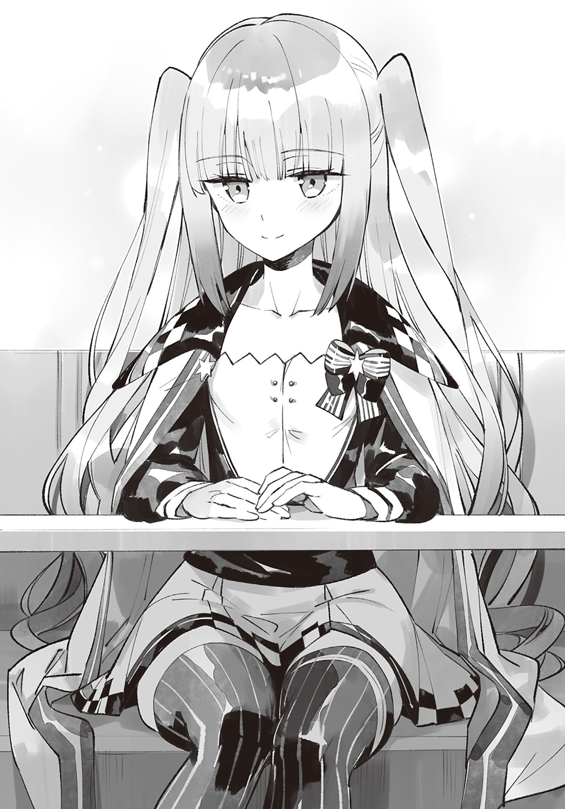
あ と が き
書籍版から読み始めてくださった方ははじめまして。
Ｗｅｂ版から読んでくださった方はお久しぶりです。
わんこそばと申します。
このたびは本書『努力しすぎた世界最強の武闘家は、魔法世界を余裕で生き抜く。』を手に取っていただき、まことにありがとうございます。
本書は魔法使いに憧れていたのに気づけば世界最強の武闘家になっていたアッシュくんが、魔法使いを目指して奮闘するコメディな物語です。
あとがきから読むという方もいらっしゃると思いますのでネタバレにならないように本書の見所をひとつだけ挙げるとすれば、『アッシュくんの修行に巻きこまれる魔王たちの行く末』でしょうか。
最初から最後まで明るく楽しく読みやすい物語になるよう心がけて書きましたので、読者の皆様に少しでも笑っていただけたなら、作者としてこれ以上の喜びはありません。
......さて。
このままでは、あとがきの枚数が足りないようですので、唐突にマイブームを紹介したいと思います。
最近は電子タバコにはまっています。
フレーバーにはたくさん種類があり、いろいろな味を楽しむことができるので、とても気に入っています。
それでは最後になりましたが、本書を出版するにあたってお世話になった方々に、この場を借りて謝辞を贈らせていただきたいと思います。
投稿サイト『小説家になろう』様にて『友情・努力・勝利』がテーマの本書を執筆していたところ、書籍化の誘いを持ちかけてくださった担当様をはじめとする集英社ダッシュエックス文庫編集部の皆様。アッシュくんに負けないくらい努力しますので、今後ともどうぞよろしくお願いいたします。
ご多忙なスケジュールのなか依頼を引き受けてくださったイラストレーターのニノモトニノ先生。美麗なイラストを描いてくださり、本当にありがとうございます。ニノモトニノ先生の素晴らしいイラストによってキャラクターに魂が吹きこまれ、アッシュくんたちが生き生きとして見えるようになりました。
校正様にデザイナー様、本書に関わったすべての関係者の方々。投稿サイトのほうで温かい感想をくださった皆様。本当にありがとうございます。
そしてなによりこの作品を手に取ってくださった読者の皆様に深い感謝を。皆様に少しでもお楽しみいただけたなら、それが私にとってなによりの幸いです。
それでは次の巻で無事、お会いできることを祈っております。
二〇一七年ぎりぎり春 わんこそば
著者紹介
わんこそば
犬と蕎麦が好きです。
illustration
ニノモトニノ
フリーのイラストレーターやってます。食欲に支配されている。
主にライトノベルの挿絵、ゲームのイラスト、デフォルメイラスト制作をしております。
ダッシュエックス文庫DIGITAL
努力しすぎた世界最強の武闘家は、魔法世界を余裕で生き抜く。
著者 わんこそば
© WANKOSOBA 2017
２０１７年７月31日発行
この電子書籍は、ダッシュエックス文庫「努力しすぎた世界最強の武闘家は、魔法世界を余裕で生き抜く。」
２０１７年６月28日発行の第１刷を底本としています。
発行者 鈴木晴彦
発行所 株式会社 集英社
〒１０１－８０５０
東京都千代田区一ツ橋２丁目５番10号
０３－３２３０－６０８０（読者係）
制作所 株式会社ＩＣＥ
本作品の全部または一部を無断で複製、転載、改竄、インターネット上に掲載すること、および有償無償に関わらず、本データを第三者に譲渡することを禁じます。なお個人利用の目的であっても、コピーガードを解除しての複製は、法律で禁じられています。